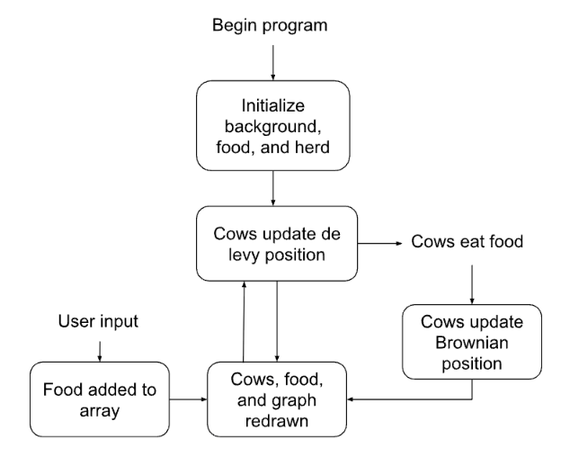
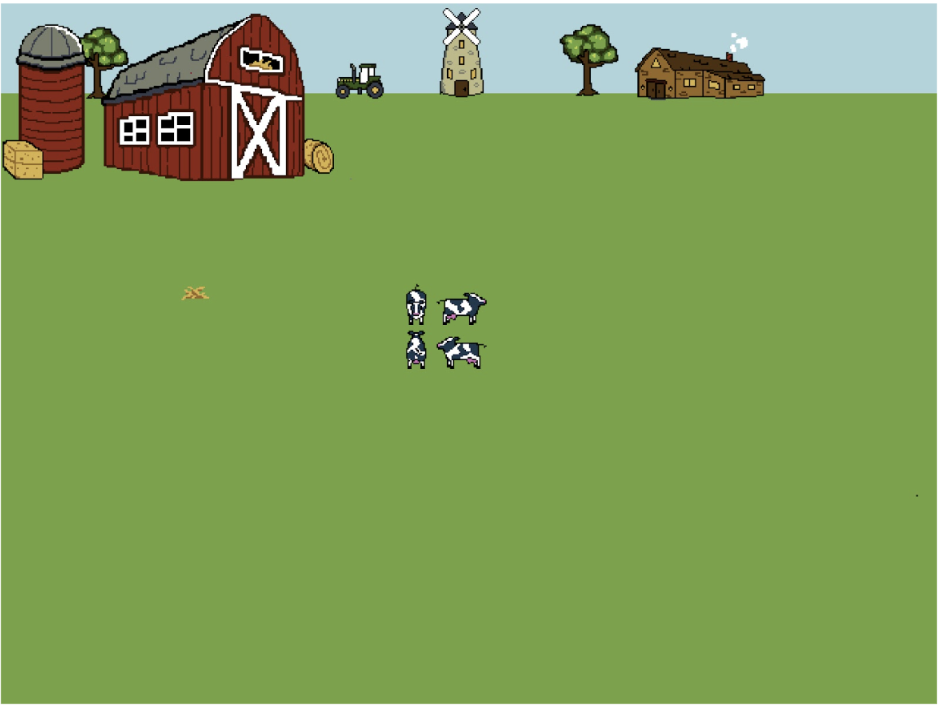
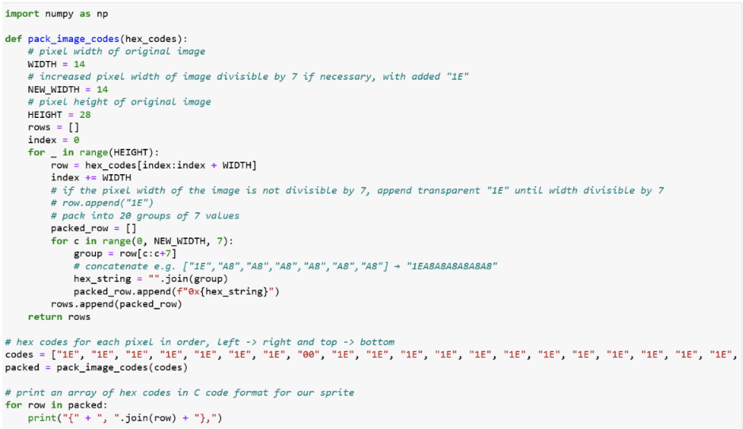
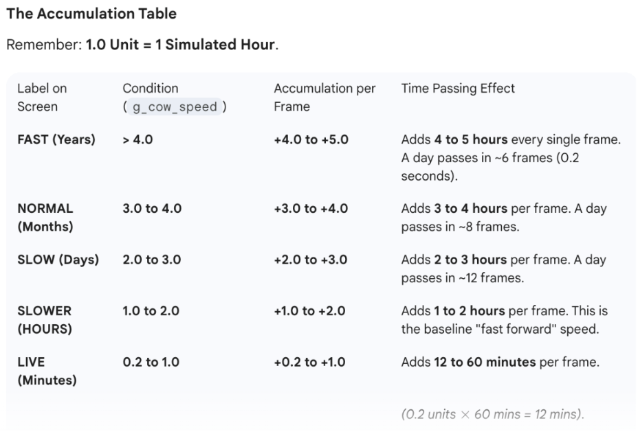
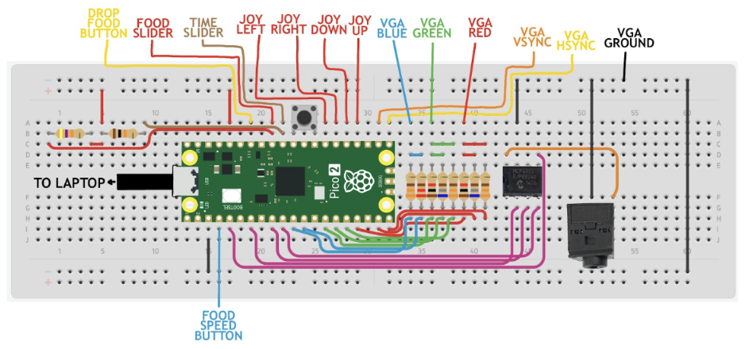
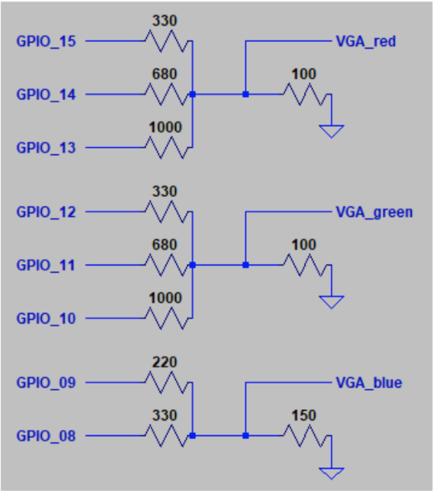
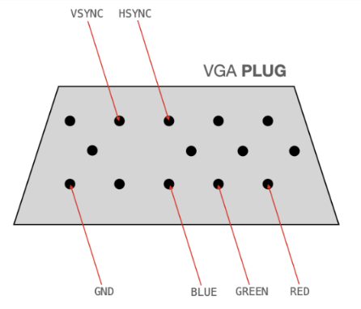

Pico-Pasture: A Cow Herding Simulation
Team: Kirti Bagepalli (kb593), Francesca Piccioni (flp23)
Date: December 2025
1. Project Introduction
A simulation model of cow herding behavior based on interactive food placement.
Demo Video
Summary
“Pico-Pasture” is a model-based simulation of cattle movement over time periods, inspired by our mutual love for cows. The Lévy Walk Model is used to simulate how animals search for food, where most steps taken are short, representing cows grazing in a smaller area, while some steps are sudden and longer, representing a cow’s decision to leave a patch and explore a new area. Once a cow in the herd finds food, all of the cows in the herd switch to the Brownian motion model, which represents the cows moving randomly in small steps within a small region as they try to look for more food in the same region for a specific amount of time. Once the timer runs out, if they have not found more food, then the model switches back to the Lévy Walk Model; otherwise, they stay in the Brownian motion model. We simulated this model using the Raspberry Pi Pico 2 for animating cows, food resources (hay), and static background animations, including a barn.
In order to simulate realistic herding behavior, we also modeled the herd having a “cow leader” and the rest of the cows being pulled towards the leader while also ensuring they maintain a minimum distance from each other to prevent unrealistic collisions. Another main component of our project includes a user panel with a joystick, two buttons, and two sliding potentiometers. The 4-directional joystick is used to control where food is placed on the screen, one button is used to control how fast the joystick cursor moves along the screen, and another button is used to drop the hay on the field where the joystick’s cursor is located. One sliding potentiometer changes how fast “time” changes in the simulation, ranging from minutes to years, which changes how fast the cows move on the screen as well. The other sliding potentiometer is used to change how much food is dropped at a time. Our project also includes sound when the hay is dropped and when a cow finds food. The bottom of the screen also incorporates live graphs, visually displaying the horizontal and vertical mean positions of the cows on the screen as well as the horizontal and vertical standard deviation of the herd.
This project is a reflection of two scientific models put together that is visually useful and impactful, as it could provide cattle owners and agricultural scientists with information about cattle grazing patterns based on where they place food, which could influence their timeline for many farm operations. This could be integral to ensure that certain parts of the land aren’t completely avoided and die from a lack of grazing.
2. High Level Design
Lévy Walk and Brownian Motion Overview
The rationale for our project is that overgrazing or undergrazing of specific areas can lead to soil degradation and wasted resources, and understanding the overall pattern of cattle movement over time based on where food resources are located can help prevent these issues. As mentioned in the summary section, the Lévy Walk Model is a commonly known movement pattern for many species, one of which is for cattle movement. The Brownian motion model represents another mode for once animals find food in a certain area, which is advantageous when resources are clumped together. By switching to the “exploiting” mode, the herd can increase its probability of finding nearby resources within the same area. The knowledge about these models and the mathematical application through code was sourced from the article The evolutionary maintenance of Lévy flight foraging (Campeau et al., 2022).
Lévy Walk Model (Searching Mode)
Power-Law Equation:
The probability P(l) of a specific step length is decided by the exponent u:
where u is the power law exponent and the “heaviness” of the tail is determined by u. For Levy flights, u usually sits between 1 and 3. If u is close to 1, there are extremely long, rare jumps (super heavy tail), but if u is large, close to 3, it behaves more like a normal distribution (Gaussian).
Inverse Transform Sampling:
To generate the steps in code, inverse transform sampling is used where a uniform random number r (between 0 and 1) is used to create appropriate steps:
where l is the step length, lmin is the smallest possible step size, r is the uniform random number mentioned above, and u is the power law exponent as mentioned above. It is important to note that the majority of r values (0.1 to 1) create medium and small steps closer to lmin while r values that are smaller, such as 0.005 or 0.01, cause much larger steps. The result means that most step lengths will be very small, but occasionally the algorithm will generate a much larger step length representing the Lévy Walk Model.
Vector Math:
Once the distance (l) is calculated, it must be translated into two-dimensional coordinates for the VGA screen. The article mentions that the directions must be chosen randomly to ensure the walk is unbiased.
Randomized Direction: The code generates a random angle between 0 and 2𝜋 radians (360 degrees).
Polar to Cartesian Conversion: To find the new target (x, y), trigonometric identities are applied to the step length L and the angle:
Brownian Motion Model (Exploiting Mode)
Once any cow in the herd finds food they all switch to the Brownian Motion Model in order to “exploit” the nearby resources in the same region.
Displacement Within a Narrow Range:
In our implementation k is set to be 2 so the maximum movement is capped at 2 pixels per frame, so the cattle effectively stay on top of the hay bale they are eating. The herd stays in the Brownian Motion Model mode for a certain time since they last found food and once that timer finishes they return back to searching mode following the Lévy Walk Model until they find food again.
Herd Cohesion and Separation
Another important part of the code is to simulate the herd-like movement with a “cow leader” and the rest of the cows moving cohesively. In order to do this, we used the information presented in Professor Adams’ Boids algorithm, augmented for a distributed consensus link on the course site. While the Lévy Walk Model and Brownian motion model dictate the individual foraging of the cows in the herd, the Boids rules establish a social ‘distributed consensus’ that allows the group to move as a unified herd. Specifically, we implemented a leader-follower model where a single cow (the leader) performs the efficient Lévy Walk search while the rest of the herd applies cohesion (grouping) logic to steer toward that leader. This is balanced by a separation rule, which calculates a push vector to maintain personal space between individuals. In terms of our project, this coordination of the herd to maintain herd-like movement without clumping models a realistic herd looking for food.
Consensus-Based Cohesion (Distributed Consensus)
Mathematical Equation: The cohesion velocity (Vcohesion) is a vector pointing from a following cow’s position (Pfollower) toward the leader’s position (Pleader), scaled by a centering factor constant (Wcohesion) that was set by visual guessing and checking to see what looked the most realistic. The final equation is:
Separation (Collision Avoidance)
Mathematical Equation: The avoidance velocity (Vseparation) is the sum of differences in coordinates between a specific cow (Pself) and any neighbor (Pneighbor) within its “protected range” and the sum is multiplied by a separation weight (Wavoid) which is a constant set by visual guessing and checking as well to see what looked the most realistic. The final equation is:
It is also important to note that the cows turn at the boundaries of the VGA screen using a hard boundaries set so their velocity and position is adjusted to stay on the screen, similar to what was done in the Galton board lab.
Overall Combination of Models
After the new vector for the foraging (either using the Lévy Walk Model or the Brownian Motion Model) is found it is added to the vectors for cohesion and separation which are all added to a cow’s old position. The sum of all of these vectors with the cow’s old position calculate the cow’s next position to move to:
Logical Structure
The overall structure of the code includes definitions and global states at the top, fixed-point math macros for performance, and bit-packed arrays for animations such as the cows and the barn. The next part is the helper functions that handle the simulation’s underlying mathematics, such as calculating the Boids-style separation and cohesion vectors, determining Lévy Walk Model steps for searching, Brownian Motion Model steps, and creating for the hay dropping and mooing sounds of the cows when food is found. The next portion of our code includes two concurrent threads managed by Cornell’s protothreads library. One thread is dedicated to real-time hardware polling for the joystick and ADC inputs, while the other thread is dedicated to the graphics for rendering the VGA frame, updating the state machines for searching or exploiting, and calculating the statistics (horizontal and vertical mean and standard deviations). Lastly, the main function is the entry point of the program, where the system clock, VGA, and peripheral pins are all initialized before launching the thread scheduler to start the simulation in a continuous loop.
Hardware/Software Tradeoffs
Our project is centered around balancing mathematical models for simulation with limited computational resources, so to maintain a smooth 30 fps VGA output while simulating the Lévy Walk Model or the Brownian Motion Model along with the cohesion and separation for herd-like behavior, we traded the convenience of floating-point math for the raw speed of 15-bit fixed-point arithmetic, similar to what we have done in prior class labs, which ensures the CPU can handle the trigonometry and square roots necessary for steering and distance calculations.
In addition, the decision to use Cornell’s protothreads library, as we have also done in prior labs, represents the tradeoff of using a heavy Real-Time Operating System and simple sequential execution, which allows us to use multitasking to allow the Pico 2 to poll potentiometers and a joystick without interrupting the sensitive timing of the VGA signal.
For creating the sounds for hay dropping and the cow moos, we used Direct Memory Access (DMA), similar to previous labs in the class. Using DMA means the system avoids using CPU cycles for sound synthesis, even though this means our moo and hay drop sounds are less complex since we are using pre-computed sine tables. Our project also maximizes the available memory by using bit-packed, long-long arrays for the animations, including the barn and tractor, which trades off easily readable code since the arrays are very long.
3. Program/Hardware Design
Code Structure
Set-Up
After defining constants, the program includes two structs, one for defining the properties of each cow in the herd and another for defining each hay bale. For each cow, information such as its current position and last position (old_x and old_y) is used for erasing the sprite at the previous location. The cow information also includes a cow’s mode (whether it is in searching or exploiting mode), along with its next target x and y position and an exploit timer for how much longer it will be in exploiting mode if applicable. Similarly, for each hay bale, the struct defines its current coordinates and an “active” flag for whether it is still visible and can be eaten (1) or if it has already been eaten (0). An enum, “ForageState”, is also defined with the two states the cows in a herd are currently in:
SEARCHING: The cow is moving long distances looking for food (Lévy Walk Model).
EXPLOITING: The cow has found food and is staying in a small area to “graze” (Brownian Motion Model).
The next part of the program includes many global variables used throughout the rest of the helper functions and threads, such as the herd array which hold all of the cow objects, food_patches which hold all the food objects, user-controlled values like g_cow_speed which is the time scale for the simulation and g_food_drop_count which represents how many hay bales are going to be dropped for a single button press. Other global variables are also included, such as for tracking simulated time (years, months, days) and audio system variables such as DAC_data and DAC_data_moo, which store the sine tables.
The next portion of the code includes large 2D arrays, such as COW_FRONT, BARN, HAY_FOOD, etc., which are stored as hex values. These are sprite data for the cow sprites and the static background animations, such as the barn. The animation code is explained below in the animation section.
Modeling Herd Movement
The next integral part of the program is the helper functions. In order for the Lévy Walk Model and the Brownian Motion Model to be calculated, helper functions are used:
get_levy_step: Generates a random step length with many small steps and occasional very long “jumps” as explained mathematically above in the high-level design section.
set_new_levy_step: Calculates a random angle between [0.0, 0.1] and [0.0, 2π] and uses get_levy_step to set a new destination for the cow.
clamp_target_to_screen: Ensures the randomly generated target positions for the cows in the herd stay within the grass area (VGA screen dimensions without colliding with the graphs or static background animations).
find_brownian_motion: Generates small movements (1-2 pixels) for a period of time, which is called when a cow finds food, and the cow is now in the EXPLOITING state.
The calculations within these helper functions were programmed using the mathematical models explained in the article The evolutionary maintenance of Lévy flight foraging (Campeau et al., 2022), which details animal foraging behavior based on the Lévy Walk Model and the Brownian Motion Models.
Other helper functions, such as spawnCow, init_food, draw_food, wallsAndEdges, are used to initialize and display cows and food at the start of the simulation, along with drawing food when the joystick cursor is placed at a location, and the drop food button is pressed, and ensuring the cows stay within the bounds of the VGA screen.
The helper function check_and_eat_food checks if a cow’s x and y position are close enough to a food’s ex and y position, and if so, the “moo” sound is played, and the food is deactivated (active flag is set to 0, and the food is no longer visible). The resolve_collisions helper function prevents cows from overlapping with each other, so if two cows are too close, for example, it calculates an “overlap” vector and pushes them apart.
The two helper functions used for calculating the cohesion and separation of the cows in the herd are the calculate_grouping function, where all cows (except the “leader” cow at index 0) steer toward the position of the leader, as explained in the high-level design section above. Similarly, in the calculate_separation function, if a cow gets too close to its neighbors, it steers away to avoid crowding, and the calculations for that are also explained in the high-level design section above. Professor Adams’ webpage regarding the Boids algorithm augmented for a distributed consensus link on the course site.
The update_cow_movement function is important because this serves as the “brain” of each cow. It combined the foraging logic from the two models along with the cohesion and separation calculations to determine exactly where a cow should move in the next frame. The function begins by deciding how the cow should move based on which state it is in.
If a cow is in the SEARCHING state: The cow is looking for food using the Lévy Walk Model, and it moves toward a target_x and target_y that was previously calculated using the distribution. First, the distance to the target is calculated using the sqrtfix15 function, and if the cow is within TARGET_REACHED_DIST (3 pixels) of its goal, it calls set_new_levy_target(c) to pick a new spot on the map. To ensure the cow moves at a consistent speed regardless of how far the target is, the code “normalizes” the vector, similar to the balls falling through the Galton board in lab 2.
If a cow is in the EXPLOITING state: The cow has found a food patch and has switched to “grazing” mode using the Brownian Motion Model. The find_brownian_motion function is called, which generates tinier steps (+/- 2 pixels) for each cow to move within to find nearby food. The exploit_timer is decremented, and once the timer hits zero, the cow has “finished” searching in that patch of the field and switched back to the SEARCHING state.
After deciding its individual goal, the cow adjusts its movement based on the rest of the herd. This is where the calculate_separation and calculate_grouping functions are called. If any of the neighboring cows are closer than SEPARATION_DIST, then a vector is created pointing away from them, which prevents overlapping. If the current cow is the leader (index == 0) in the array of cow objects, it ignores calculating a cohesion vector; otherwise, a vector is calculated pointing towards the leader’s coordinates. These calculations are more thoroughly explained in the high level design section above. A final cow’s position is calculated to be the sum of the foraging vector (based on one of the two models), separation vector, and grouping vector using the x and y components of the vector.
Sound
The next portion of our program includes functions for creating the sounds for hay dropping and the “moo” sound when a cow finds food. We reused and modified our code from lab 2, where the hay dropping sound was the same sound as the balls hitting the pegs in the Galton board. However, we modified a new, longer sine table to incorporate a moo sound. Both sounds were created using direct memory access (DMA) to stream audio data to a DAC via SPI.
Labs 1 and 2 helped prepare us to include audio in our program, as we wanted a sound when food dropped and a “moo” sound when food was eaten. We used the MCP4822 DAC and sine tables to achieve these sounds. The DAC connections are as follows, and can be seen in our complete hardware schematic below:
PIN_SCK is the serial clock
PIN_MISO sends data from DAC
PIN_MOSI receives sample values and sends them to the DAC
PIN_CS activates the device so that the DAC receives values via MOSI
Configured on channel A, this takes our digital sample, the sin function for our “moo,” and converts it to analog voltages using an SPI channel, which then goes through an amplifier and speaker since our DAC is powered by 3.3 V.
Hay dropping sound: Our hay dropping sound is the same function as the plunk sound from Lab 2: Galton Board, shown in the following figure. The sine_table_size is equal to 256.
Moo sound: Using a simple sine function like we used for the hay drop sound, we were struggling with getting a frequency low and clear enough to sound like a moo. We widened the sine table to 50,000 so that the sound would last longer, then added a parabola with defined start and end frequencies, 0.004, and peak frequency, 0.015, to get our precise MOOOOO!
Protothread_Controls
After the helper programs, the next main section of our program includes two threads that run concurrently, the protothread_controls thread that runs constantly to poll hardware, including two sliders (ADC), a four-directional joystick, and two buttons:
Two buttons, two sliders (sliding potentiometers), and one joystick are included to give the program an interactive component. The buttons add food and adjust the speed of the food cursor, the sliders adjust the time speed and the amount of food dropped at once, and the joystick moves the food cursor.
The food cursor button uses a switch statement with three cases: case 0 (default) where the joystick moves the cursor 5 pixels at a time, case 1 where the joystick moves the cursor 15 pixels at a time, and case 2 where the joystick moves the cursor 1 pixel continuously so the joystick can be held in one direction and the cursor will smoothly move in that direction until the joystick is released.
The drop food button adds to food_patches and increments our variable NUM_FOOD that represents the total amount of food on screen at once (which also decrements when a cow munches on it!). The amount of food added to food_patches is adjusted by the corresponding slider. The item in food_patches is then set to active so that it is detectable by cows, and the available drop area is limited to below the barn and above the graphs.
The other slider or sliding potentiometer reads a raw voltage via the RP2040’s ADC and maps that value to the simulation’s “clock”. The code selects the ADC input tied to the slider and gets a value between 0 and 4095. This value is then “clamped” and mathematically mapped to a floating-point range (0.2 to 5.0), which is converted into a fixed point and saved in the global variable called g_cow_speed. This variable is later used in protothread_graphics to update the label for elapsed time and the speed of the cows moving on the screen.
Protothread_Graphics
The other thread is the protothread_graphics thread, which holds the core loop used for our visual simulation. In this thread, cows are erased at their old positions in order to be drawn at their new positions, the update_cow_movement helper function is also called in order to calculate each cow’s new target position based on the current model it is using (Lévy Walk Model or Brownian Motion Model). The animations for the cow and the other static animations, such as the barn, are handled:
Animation:
Final 640x480 8-bit color VGA screen design including example food and cows.
For the animations part of our project, we used the Mandelbrot_Set demo code from Hunter Adams’s github repository.
Creation and organization of sprite arrays
All visual components on the VGA screen are coded as sprites, stored in constant arrays initialized at the top of the code. In order to save time and space in the code, each array input holds 7 pixels, 2 hex digits per pixel. Items in the background, such as the barn, trees, and tractor, are drawn once in main while animated components, such as the cows and food, are drawn in as needed, like when new food is dropped. All images were drawn by Francesca on the Pixilart iPad app, converted to hex codes using the website Online PNG Tools, then put into the following Python program to print the sprites in an array format for coding in C:
The printed output from Python is used in the following example of one of our cow sprites, COW_FRONT, that is displayed when cows are moving down on the screen.
const long long COW_FRONT[28][2] = {
{0x1E1E1E1E1E1E1E, 0x001E1E1E1E1E1E},
{0x1E1E1E1E1E1E1E, 0x00001E1E1E1E1E},
{0x1E1E1E1E1E1E00, 0x1E1E1E1E1E1E1E},
{0x1E1E1E1E1E1E00, 0x1E1E1E1E1E1E1E},
{0x1E1E1E1E000000, 0x0000001E1E1E1E},
{0x1E1E0000FFFF51, 0x51515100001E1E},
{0x1E0051FFFFFFFF, 0xFF51515151001E},
{0x00515151FFFFFF, 0xFFFF5151515100},
{0x00515151FFFFFF, 0xFFFF5151515100},
{0x0051515151FFFF, 0xFFFFFF51515100},
{0x005151515151FF, 0xFFFFFFFFFF5100},
{0x005100000051FF, 0xFFFF000000FF00},
{0x00000051510000, 0x00005151000000},
{0x0051000000FFFF, 0xFFFF000000FF00},
{0x00FFFFFF0051FF, 0xFF5100FFFFFF00},
{0x00FFFF005151FF, 0xFF515100FF5100},
{0x00FFFF005100FF, 0xFF005100515100},
{0x1E00FF005151FF, 0xFF51510051001E},
{0x1E00FFFF0051FF, 0xFF5100FF51001E},
{0x1E00FFFF0051FF, 0xFF5100FF51001E},
{0x1E0051FF00EAEA, 0xEAEA00FFFF001E},
{0x1E000051510000, 0x0000FFFF00001E},
{0x1E1E000051FFFF, 0xFFFFFF00001E1E},
{0x1E1E00510000FF, 0xFF0000FF001E1E},
{0x1E1E0051001E00, 0x001E00FF001E1E},
{0x1E1E00FF001E1E, 0x1E1E00FF001E1E},
{0x1E1E0000001E1E, 0x1E1E0000001E1E},
{0x1E1E0000001E1E, 0x1E1E0000001E1E}
};
This array corresponds to the following image when displayed on the VGA screen.
Displaying sprites to screen
The following C code is an example of drawing one of our cow sprites, COW_FRONT, to the screen:
for (int r = 0; r < 28; r++) {
for (int c = 0; c < 2; c++) {
long long block = COW_FRONT[r][c];
for (int j = 0; j < 7; j++) {
int shift = (6 - j) * 8;
int pixel = (block >> shift) & 0xFF;
if (pixel != 0x1E) {
int x = fix2int15(herd[i].x) - 7 + c*7 + j;
int y = fix2int15(herd[i].y) - 14 + r;
drawPixel(x, y, pixel);
}
}
}
}
The code loops through each row and column (remember each column is 7 pixels wide, so a length of 2 means 14 pixels!), takes an input from the COW_FRONT array, then separates it into each group of 2 hex digits and draws the pixel with the corresponding color hex code in the correct position. The position is determined by taking the current x-value and y-value of the desired cow, subtracting half of the array width (14/2 = 7) from the x position and half of the array height (28/2 = 14) to center the image, and then adding the index of the current row or column. Since each input in the array is read from least to most significant bit, the code has to flip which pixel we draw first so that the image displays left to right and up to down. This is achieved with shifting, then using AND with 0xFF. 0x1E corresponds to transparent in our arrays, so when the pixel is equal to 1E, the code skips drawPixel.
Cows changing directions
While working on this project, we had a shocking revelation: cows, like many other animals, look in the direction that they’re moving! We implemented this aspect by adding three more sprite arrays: COW_BACK for when the cow is moving up, COW_RIGHT for when the cow is moving to the right, and COW_LEFT for when the cow is moving to the left. The following is a mix of C code and some pseudo-code that accurately describes our method:
A cow in our herd can only move in one direction at a time: left, right, up, or down. To determine which direction to go, we first determine if the cow will be moving horizontally or vertically.
fix15 change_cow_x = herd[i].x - herd[i].old_x;
fix15 change_cow_y = herd[i].y - herd[i].old_y;
The variables change_cow_x and change_cow_y hold the difference between the previous and current cow positions. If the change in x-values is larger than the change in y-values, we know that the cows should be moving left or right. If the change in x is positive, the cow should move to the right, but if it is negative, the cow should move to the left. If the change in y-values is larger than the change in x-values and the change in y-value is positive, then the cow should move down; if it is negative, then the cow should move up.
if (abs(change_cow_x) > abs(change_cow_y)) {
herd[i].direction = (change_cow_x > 0) ? 3 : 2;
if (change_cow_x > 0) {
Draw COW_RIGHT
}
else {
Draw COW_LEFT
}
}
else {
herd[i].direction = (change_cow_y > 0) ? 0 : 1;
if (change_cow_y > 0) {
Draw COW_FRONT
}
else {
Draw COW_BACK
}
}
Now that we’ve established how to draw our cows in different directions, we also have to erase them! This is a bit trickier, as we are erasing the previous cows’ positions AND directions. The following lines, which are located in the loops that draw the cows, set an individual cow’s direction value depending on which direction they were just drawn in.
herd[i].direction = (change_cow_x > 0) ? 3 : 2;
herd[i].direction = (change_cow_y > 0) ? 0 : 1;
A 0 is down, 1 is up, 2 is to the left, and 3 is to the right. We can erase the cows at the old position and direction since these values are updated when drawing a cow’s new position. Our code checks the value of the direction and draws either COW_FRONT (0), COW_BACK (1), COW_LEFT (2), or COW_RIGHT (3) replacing the pixel color with our grass color, MED_GRASS.
Time
This global variable set in the protothread_controls thread is used to scale the movement vectors of the cows, where a higher slider value results in larger per-frame position updates, making the cows move faster. The speed also adds to a time accumulator; as the cows move faster, the simulation’s “clock” accelerates, causing the hours, days, and years displayed on the VGA screen to tick by at a vastly increased rate, which connects the physical cow movement to the passage of simulation time. This AI-generated chart explains the calculation breakdown of time per speed setting in our code:
Mean and Standard Deviation Graphs
Lastly, the graphics thread manages the calculations of the vertical and horizontal mean position and standard deviation of the herd and draws real-time line graphs at the bottom of the screen. The mean position is calculated by simply summing the horizontal or vertical positions and dividing by the number of cows in the herd. Using that mean, the vertical and horizontal variances are calculated, and from the vertical and horizontal variances, the vertical and horizontal standard deviations are calculated using the equations below:
Mean: (N represented the number of cows stored in g_num_cows)
The mean of x and y is calculated as:
\[ \mu_x = \frac{\sum_{i=0}^{N-1} x_i}{N}, \quad \mu_y = \frac{\sum_{i=0}^{N-1} y_i}{N} \]mean_x_f = sum_x / g_num_cows for the horizontal mean
mean_y_f = sum_y / g_num_cows for the vertical mean
Variance:
var_sum_x += (diff_x * diff_x) for the horizontal variance
var_sum_y += (diff_y * diff_y) for the vertical variance
Standard Deviation:
std_x_f = sqrt(var_sum_x / g_num_cows) for the horizontal standard deviation
std_y_f = sqrt(var_sum_y/ g_num_cows) for the vertical standard deviation
These calculations and corresponding graphs for the means and the standard deviations are updated every frame to show the live statistical tracking of the herd.
Main Function
The last portion of our program includes the main function, which is where, as mentioned briefly above in the high level design section, the system clock is configured to 150 MHz, the VGA display is initialized, and the SPI and SMA channels are prepared for the audio system. After setting up the ADC for the sliding potentiometers and configuring the GPIO pins for the joystick and buttons, the static, non-moving background animations are drawn, such as the barn, windmill, and trees. Then, the main function seeds the random number generator, spawns the initial cows and food patches, and adds the protothread_graphics and protothread_controls tasks to the scheduler to begin the interactive simulation.
Hardware Components
Complete Hardware Schematic
Raspberry Pi Pico2
With the Pico1, we had 1 byte for every 2 pixels (for example, FF would be two white pixels) but we wanted to change to 1 byte for every 1 pixel in order to go from 4-bit color to 8-bit color while maintaining a 640x480 screen size. The Pico1 does not have enough ram for this change, so we decided to switch to the Pico2 so that our cows could live in vibrant color.
Changes in Software:
To account for the increase in the number of GPIO pins as detailed below, the number of out pins in rgb.pio had to be increased to 8. No clock division occurs. We also had to modify our VGA graphics .c file. We doubled RGB_ACTIVE to be the width of the screen, doubled the length of pixel array TXCOUNT to 640*480=307200, and ensure that memset functions always used 640 instead of 320. The board also had to be changed from pico to pico2 in VS Code. Other than this, no other software changes were necessary.
Changes in Hardware and VGA Connections:
With the RP2040 Pico1, we had 2 green GPIOs, 1 red GPIO, and 1 blue GPIO. With the RP2350 Pico2, we doubled the number of GPIOs being used to 3 green, 3 red, and 2 blue. This meant we had to move our wires to the opposite side of the breadboard, and we couldn’t use the PCB we had built in a previous lab with the resistors included. The following image shows an LTSpice schematic from the demo code page “319x240 VGA 256-color,” written by Hunter Adams and converted to 319x240 with 256 colors by Bruce Land.
The resistors connected to ground (100Ω and 150Ω) are not included on the breadboard as the VGA plug has built in resistances of around 75Ω, which ensures the correct signal level will be read. The other 220Ω, 330Ω, 680Ω, and 1000Ω resistors were wired on the breadboard with the corresponding GPIOs going in and the VGA wires (to be used in the plug as seen below) coming out.
VSYNC is connected to GPIO 17 and HSYNC is connected to GPIO 16.
User Panel Controls
As shown in the hardware schematic above, the food speed button is wired to GPIO 2, the drop food button to GPIO 28, the food slider to GPIO 27, the time slider to GPIO 26, the left joystick to GPIO 21, the right joystick to GPIO 20, the down joystick to GPIO 19, and the up joystick to GPIO 18. The sliding potentiometers also require a connection to 3.3V through a resistor so that a voltage divider is present and the power doesn’t short when set to 0 ohms. The time slider connects to a 10kΩ resistor, and the food slider connects to a 47kΩ resistor. These resistances were given on the body of the sliding potentiometers.
Tricky Parts to Write
One of the most difficult parts to write was the changes to achieve 8-bit color on a 640x480 VGA screen. Many hours were spent changing different values in rgb.pio and our VGA graphics C file to accommodate the change from pico1 to pico2. At first, we had all 256 colors but only on half of the screen, then the whole screen was tiled 4 times, then finally we were able to achieve all 256 colors on the whole screen. Something else that was a bit tricky was the control function. With so many physical components that interacted with each other, we had to make sure that they were working properly. For example, one of the buttons changes the speed of the cursor movement controlled by the joystick. It was a bit difficult to set up the different cases and make sure the joystick cursor was being properly updated.
Things We Tried but Didn't Work
We wanted a slider to change the number of cows on the screen, and tried to implement this early in our programming. Even with the cows just facing forward at this point, they were not properly being erased when we moved the slider down to reduce the number of cows on the screen. While we had ideas about how to fix this, we felt that fixing this bug would be time consuming and even more complicated once the different cow direction sprites were implemented. Therefore, we decided to scrap it in favor of changing the amount of food (hay bales) dropped at a time instead of using the same slider.
Another roadblock we ran into was having a very limited amount of colors we could use with the Pico1. While we completed all of the basic modeling using boids to represent the cows and food, we wanted to incorporate animations. Therefore, we took on the challenge of switching to the Pico2, which includes a lot more color options (8-bit color) and allowed our animations to look a lot nicer.
AI Usage
While converting the mathematical Lévy Walk Model we ran into issues with the way we were implementing the logic. We had to scrap our “rough draft” code and go back to the drawing board. Therefore, a few times we used generative AI to find the gaps in our implementation or cases we weren’t considering, and this helped us to reframe our idea about how to implement the code and make it much simpler. For example, we were able to implement the model with two helper “get” and “set” functions, which made it a lot easier than implementing everything all in one function.
Similarly, when we had bugs in our code, and we couldn’t seem to pinpoint where in the code the bug was occurring, we used generative AI a few times to figure out what was the issue. For example, one major bug that caused a roadblock in our progress was that when some of the cows found food, the model (indicated through the label) wasn’t switching to the Brownian Motion Model, but sometimes it would. At first, we thought this was an issue with our label, but after triple-checking that it wasn’t, we were very confused. After a lot of testing, including changing different parameters like testing with only one cow, which seemed to work perfectly fine, we asked generative AI to check specific sections of our code we suspected had an issue, including the update_cow_movement function. After some back and forth, AI eventually led us to find out that our implementation was only checking if the leader found food, not if the other cow objects in the array found food. After AI was able to help us find the issues, we were able to easily fix this issue by iterating through all the cow objects in the array.
Lastly, generative AI provided us with an HTML template from which we modified to build the webpage for our final report. Generative AI also helped us create some nicely formatted graphics for our webpage, such as the table explaining the time calculations when using the slider, and updating the label. It also helped us format equations we used to more professionally display on our final web page here.
4. Results of the Design
To test our program, we tried adjusting the sliders to the extremes, pressing buttons at the same time, moving our joystick to the edges of the screen and placing food there, seeing if cows would run off the screen, and allowing our program to run until there was no food left to see what the cows would do. Through this testing, not many changes were made other than ensuring that food could not be placed over the graphs, and the food cursor could not go up past the barn or down past the graphs.
Our final animation had no flickering or hesitation. The interactive components, such as timing and food drops, were very responsive; there was no noticeable pause between pressing a button and seeing a result. We also maintained a framerate of 30 frames per second, with the animated components such as the cows moving smoothly.
Our mathematical models were accurate, seen by the cows' movement that aligned with what it should be. Additionally, our final moo sound was pretty accurate to what a real moo sounds like, and we had the professor and other students listen to the moo and say that it was accurate. The video signal timing was accurate, the pico2 has much more space to maintain our 30 fps.
Safety was not much of a concern in our design. We made sure the cows were bound by the edges of the screen so they couldn’t run off and get themselves into dangerous situations. The program is very usable by us; we understand the controls that we coded, and there are no pauses or jumps. Our physical control panel, as described above, is set in a wooden box from a previous semester’s project. This makes our game easy to use with large buttons and a large joystick, even if a person has never played a video game before. Usability could be increased slightly by adding labels to the buttons, but it is pretty simple to learn which button does what. The number of cows on the screen is hardcoded, so while changing the number of cows is intuitive to us, it may not be to someone else. We tried to improve this with the cow slider, but ultimately were unable so we set the default to 10 cows, which is enough to show our mathematical models. Usability could slightly improve in this area, but it was not a large concern for us.
5. Conclusions
Overall, our design not only met our expectations but exceeded them. Our priority for our project was to implement the Lévy Walk Model and Brownian Model, as well as the cohesion and separation of the herd, to make the simulation more realistic. Therefore, the animation aspect of our project was something we wanted to keep simple, with the assumption that we wouldn’t have a lot of time since implementing the models would take up most of our time. However, with good time management, we were able to complete the implementation of the models a lot earlier than we expected, but the cows and the food were simply empty circles or “boids”.
We also soon realized that color would be a difficult limitation to work around to create nice animations for cows, food, and the background while still using the Pico 1. While we had an idea about switching to the Pico 2 brought up by Professor Adams and Professor Land, we thought of it as more of an extension if we had time. However, we were able to transition our working model to the Pico 2 and create animations using 8-bit color. Not only that, we were able to add sound and live plotting of mean and standard deviation statistics for the herd. The implementation of these extensions are what exceeded our expectations and are what transformed our project to be a comprehensive project incorporating a lot of different aspects.
Something we wish we could’ve done differently next time is create a custom PCB in place of the panel. This way, the four-directional joystick, sliding potentiometers, and buttons would look more professional. However, with the time constraint to order parts and the modifications we made to our project, we are still happy with the panel we incorporated. With more time, we also would’ve liked to add more features, such as placing water or changing fence barriers, along with food, to see how the herd reacts. We also would’ve liked to add a milk production model to our simulation to see how where resources are placed can directly impact milk production.
Our design as a whole incorporates many aspects of what we have learned in labs throughout the semester and new aspects that many students have not yet done or worked with. We worked specifically with the Lévy Walk Model and the Brownian Motion Model while incorporating cohesion and separation. Combining these models and converting them to code to create a simulation encompasses what a CDE course, as Professor Adams has mentioned, means. We created a visual representation of these mathematical models and vector physics. In addition, we implemented hardware through the interactive features, including buttons, sliding potentiometers, and a four-directional joystick. We also transitioned from using a Pico 1 to a Pico 2 to incorporate 8 bit color, which is something not a lot of students in the past have worked with. The incorporation of sound and display of statistics displays how multi-faceted our project was and why it conforms to the applicable standards of the course.
Of course, we did not come up with the Lévy Walk Model, the Brownian Motion Model, or the base logic behind cohesion and separation of the herd with a leader. We used online sources, including a scientific article: The evolutionary maintenance of Lévy flight foraging (Campeau et al., 2022) as a guide for understanding and implementing the Lévy Walk Model and the Brownian Motion Model. We also used resources for the ECE 4760 course site, including Professor Adams’ link: Boids algorithm - augmented for distributed consensus, and Professor Land’s link: Explaining RP2040 256 VGA. We also utilized the Mandelbrot_Set demo code from Hunter Adams’s GitHub repository. We also reused our own code from past lab assignments heavily, including creating sounds with direct memory access and collision detection with boids from lab 2.
6. Appendix A (Permissions)
- The group approves this report for inclusion on the course website.
- The group approves the video for inclusion on the course youtube channel.
7. Code & Data Appendices
Project C Code
/**
* Hunter Adams (vha3@cornell.edu)
* converted to 319x240 with 256 colors by Bruce; brue.land@cornell.edu
*
* HARDWARE CONNECTIONS
* - GPIO 16 ---> VGA Hsync
* - GPIO 17 ---> VGA Vsync
*
* - GPIO 08 ---> 330 ohm resistor ---> VGA Blue lo-bit |__ both wired to 150 ohm to ground
* - GPIO 09 ---> 220 ohm resistor ---> VGA Blue hi_bit | and to VGA blue
*
* - GPIO 10 ---> 1000 ohm resistor ---> VGA Green lo-bit |__ three wired to 100 ohm to ground
* - GPIO 11 ---> 680 ohm resistor ---> VGA Green mid_bit | and to VGA Green
* - GPIO 12 ---> 330 ohm resistor ---> VGA Green hi_bit |
*
* - GPIO 13 ---> 1000 ohm resistor ---> VGA Red lo-bit |__ three wired to 100 ohm to ground
* - GPIO 14 ---> 680 ohm resistor ---> VGA Red mid_bit | and to VGA red
* - GPIO 15 ---> 330 ohm resistor ---> VGA Red hi_bit |
*
* - GPIO 04 ---> MISO pin DAC
* - GPIO 05 ---> CS pin DAC
* - GPIO 06 ---> SCK pin DAC
* - GPIO 07 ---> MOSI pin DAC
*
* - GPIO 28 ---> Drop food button
* - GPIO 02 ---> Change food dropper moving speed
* - GPIO 18 ---> "Up" joystick direction
* - GPIO 19 ---> "Down" joystick direction
* - GPIO 20 ---> "Right" joystick direction
* - GPIO 21 ---> "Left" joystick direction
*
* - GPIO 26 ---> Change time speed slider
* - GPIO 27 ---> Change food drop amount slider
*
* - RP2040 GND ---> VGA GND
*
* RESOURCES USED
* - PIO state machines 0 to 3 on PIO instance 0
* - DMA channels 0, 1, 2, 3 data send to two PIO
* - 76.8 kBytes of RAM (for pixel color data)
* color encoding: bits 7:5 red; 4:2 green; 1:0 blue
*
* Protothreads v1.3 dual core, priority
* graphics demo thread
* serial thread to set the color of two boxes using r,g,b and h,s,v
* the usual blinky thread for a hearbeat
*/
// ==========================================
// Libraries and Headers
// ==========================================
#include "vga16_graphics_v2.h"
#include
#include
#include
#include
#include "pico/stdlib.h"
#include "hardware/pio.h"
#include "hardware/dma.h"
#include "hardware/clocks.h"
#include "hardware/pll.h"
#include "hardware/adc.h"
#include "hardware/pio.h"
#include "hardware/dma.h"
#include "hardware/clocks.h"
#include "hardware/gpio.h"
#include "hardware/sync.h"
#include "hardware/timer.h"
#include "pico/multicore.h"
#include "pico/divider.h"
#include "pico/mutex.h"
#include "string.h"
#include "hardware/spi.h"
#include "pt_cornell_rp2040_v1_4.h"
// ==========================================
// Fixed Point Math Macros
// ==========================================
typedef signed int fix15 ;
#define multfix15(a,b) ((fix15)((((signed long long)(a))*((signed long long)(b)))>>15))
#define float2fix15(a) ((fix15)((a)*32768.0)) // 2^15
#define fix2float15(a) ((float)(a)/32768.0)
#define absfix15(a) abs(a)
#define int2fix15(a) ((fix15)(a << 15))
#define fix2int15(a) ((int)(a >> 15))
#define char2fix15(a) (fix15)(((fix15)(a)) << 15)
#define divfix(a,b) (fix15)(div_s64s64( (((signed long long)(a)) << 15), ((signed long long)(b))))
// ==========================================
// Hardware Pin Definitions
// ==========================================
// Joystick
#define JOY_UP 18
#define JOY_DOWN 19
#define JOY_RIGHT 20
#define JOY_LEFT 21
// Food Drop Button
#define DROP_FOOD 28
// Joystick Speed Button
#define FOOD_SPEED 2
// Potentiometer 1: Time
#define TIME_SPEED 26 // ADC0
// Potentiometer 2: Food
#define FOOD_SLIDER 27 // ADC1
// Audio (SPI DAC)
#define PIN_MISO 4
#define PIN_CS 5
#define PIN_SCK 6
#define PIN_MOSI 7
#define SPI_PORT spi0
// ==========================================
// Simulation Constants
// ==========================================
// Screen Boundary Detection
#define hitBottom(b) (b>int2fix15(350))
#define hitTop(b) (bint2fix15(640))
// Cursor Screen Boundary
#define CURSOR_MAX_X (640 - 3)
#define CURSOR_MAX_Y (350 - 3)
#define CURSOR_MIN_X 0
#define CURSOR_MIN_Y 135
// Model Constants
#define RADIUS_COW float2fix15(10)
#define RADIUS_FOOD float2fix15(5)
#define MAX_FOOD 200
#define MAX_COWS 20
#define EXPLOIT_DURATION 150 // Frames to stay in exploit mode
#define FRAME_RATE 33000 // uS per frame (~30.3 fps)
#define TARGET_REACHED_DIST float2fix15(3.0)
// Flocking (Boids) Weights
#define SEPARATION_DIST float2fix15(15.0) // Cows Minimum Distance (2*RADIUS + 2)
#define SEPARATION_WEIGHT float2fix15(3.0) // Force of separation
#define COHESION_WEIGHT float2fix15(0.01) // Force to pull to leader
// Cow Speed Settings
#define MIN_COW_SPEED float2fix15(0.2) // Slowest speed (Live)
#define MAX_COW_SPEED float2fix15(5.0) // Fastest speed (Years)
// ==========================================
// Data Structures
// ==========================================
// State of a cow: Searching (Levy Flight) or Exploiting (Eating/Brownian)
typedef enum {
SEARCHING,
EXPLOITING
} ForageState;
// Represents one Cow (Boid)
typedef struct {
fix15 x; // Current x position
fix15 y; // Current y position
fix15 old_x; // Previous x position
fix15 old_y; // Previous y position
int old_direction; // 0 = Front, 1 = Back, 2 = Left, 3 = Right
int direction;
ForageState state; // AI State
int exploit_timer; // Countdown for eating
fix15 target_x; // Target x position (where the cow is moving towards)
fix15 target_y; // Target y position (where the cow is moving towards)
} Cow;
// Represents Food (a single hay bale)
typedef struct {
fix15 x, y; // x and y position
int active; // 1 = visible/edible, 0 = eaten
} Food;
// ==========================================
// Global Variables
// ==========================================
// Simulation Variables
Cow herd[MAX_COWS]; // Array of cow objects
Food food_patches[MAX_FOOD]; // Array of food objects
volatile int g_num_cows = 10; // Current active cows
volatile int NUM_FOOD = 60; // Current active food
volatile int g_herd_found_food = 0; // Flag for is a cow is eating
// User Interaction Variables
volatile int place_x = 320; // Joystick Cursor X
volatile int place_y = 240; // Joystick Cursor Y
volatile uint16_t g_time_speed_adc = 0; // Raw ADC for time speed
volatile uint16_t g_food_slider_adc = 0; // Raw ADC for food drop amount
volatile int g_food_drop_count = 1; // Amount of food to drop (initially set to 1)
volatile fix15 g_cow_speed = float2fix15(1.5); // Simulation speed multiplier
// Simulation Time Tracking Variables
volatile unsigned long long g_simulated_time_hours = 0;
volatile unsigned long long g_simulated_time_days = 0;
volatile unsigned long long g_simulated_time_months = 0;
volatile unsigned long long g_simulated_time_years = 0;
volatile fix15 g_simulated_time_accumulator = 0; // Accumulated time
// Audio System Variables
#define sine_table_size 256 // Length of sine table (array) used for hay dropping sound
#define MOO_SIZE 50000 // Length of the sine table (array) used for moo sounds (much longer)
#define DAC_config_chan_A 0b0011000000000000 // A-channel, buffer the input, 1x gain, active mode
int raw_sin[sine_table_size] ; // Used to calculate the raw math of sine wave (integers centered around 2047)
unsigned short DAC_data[sine_table_size] ; // Stores the final hay drop sound ready for the DAC
unsigned short DAC_data_moo[MOO_SIZE]; // Stores the final moo sound data combined with config bits ready for the DAC
int data_chan, ctrl_chan; // DMA channel ID #s
unsigned short * sound_address_pointer = &DAC_data[0] ; // Pointer to address of DAC data table (where in memory to start reading data)
// ==========================================
// Bitmap Code
// ==========================================
const long long COW_FRONT[28][2] = {
{0x1E1E1E1E1E1E1E, 0x001E1E1E1E1E1E},
{0x1E1E1E1E1E1E1E, 0x00001E1E1E1E1E},
{0x1E1E1E1E1E1E00, 0x1E1E1E1E1E1E1E},
{0x1E1E1E1E1E1E00, 0x1E1E1E1E1E1E1E},
{0x1E1E1E1E000000, 0x0000001E1E1E1E},
{0x1E1E0000FFFF51, 0x51515100001E1E},
{0x1E0051FFFFFFFF, 0xFF51515151001E},
{0x00515151FFFFFF, 0xFFFF5151515100},
{0x00515151FFFFFF, 0xFFFF5151515100},
{0x0051515151FFFF, 0xFFFFFF51515100},
{0x005151515151FF, 0xFFFFFFFFFF5100},
{0x005100000051FF, 0xFFFF000000FF00},
{0x00000051510000, 0x00005151000000},
{0x0051000000FFFF, 0xFFFF000000FF00},
{0x00FFFFFF0051FF, 0xFF5100FFFFFF00},
{0x00FFFF005151FF, 0xFF515100FF5100},
{0x00FFFF005100FF, 0xFF005100515100},
{0x1E00FF005151FF, 0xFF51510051001E},
{0x1E00FFFF0051FF, 0xFF5100FF51001E},
{0x1E00FFFF0051FF, 0xFF5100FF51001E},
{0x1E0051FF00EAEA, 0xEAEA00FFFF001E},
{0x1E000051510000, 0x0000FFFF00001E},
{0x1E1E000051FFFF, 0xFFFFFF00001E1E},
{0x1E1E00510000FF, 0xFF0000FF001E1E},
{0x1E1E0051001E00, 0x001E00FF001E1E},
{0x1E1E00FF001E1E, 0x1E1E00FF001E1E},
{0x1E1E0000001E1E, 0x1E1E0000001E1E},
{0x1E1E0000001E1E, 0x1E1E0000001E1E}
};
const long long COW_BACK[26][2] = {
{0x1E1E0000001E1E, 0x1E1E0000001E1E},
{0x1E000051510000, 0x0000515100001E},
{0x1E1E00000051FF, 0xFF510000001E1E},
{0x1E1E1E1E000051, 0x5100001E1E1E1E},
{0x1E1E1E1E005151, 0x5151001E1E1E1E},
{0x1E1E1E0000FFFF, 0xFF5100001E1E1E},
{0x1E1E1E00FFFFFF, 0xFFFF51001E1E1E},
{0x1E1E0051FFFFFF, 0xFFFF5151001E1E},
{0x1E00005151FFFF, 0xFFFFFF5100001E},
{0x1E00515151FFFF, 0xFFFF515151001E},
{0x1E005151FFFFFF, 0xFF51515151001E},
{0x1E0051FFFFFFFF, 0xFF51515151001E},
{0x0000FFFFFFFF00, 0x00FF5151510000},
{0x00FFFF5151FFFF, 0x0000FF51515100},
{0x00FF51515151FF, 0xFF00FFFFFFFF00},
{0x00515151515151, 0x51FF0000FFFF00},
{0x00515151515151, 0x515100FFFF5100},
{0x005151515151FF, 0x51515151515100},
{0x005151515151FF, 0xFF515151515100},
{0x1E00FF51515100, 0x0051515151001E},
{0x1E0000FF0000EA, 0xEA00005100001E},
{0x1E00FFFF00EAEA, 0xEAEA00FFFF001E},
{0x1E00FF001E0000, 0x00001E00FF001E},
{0x1E00FF001E1E1E, 0x1E1E1E00FF001E},
{0x1E0000001E1E1E, 0x1E1E1E0000001E},
{0x1E0000001E1E1E, 0x1E1E1E0000001E}
};
const long long COW_RIGHT[22][5] = {
{0x1E1E1E1E1E1E1E, 0x1E1E1E1E1E1E1E, 0x1E1E1E1E1E0000, 0x001E0000001E1E, 0x1E1E1E1E1E1E1E},
{0x1E1E1E1E1E1E1E, 0x1E1E1E1E1E1E1E, 0x1E1E1E1E000051, 0x5100FFFFFF0000, 0x1E1E1E1E1E1E1E},
{0x1E1E1E1E1E1E1E, 0x1E1E1E1E1E1E1E, 0x1E1E1E1E1E0000, 0x005151FFFFFF00, 0x001E1E1E1E1E1E},
{0x1E1E1E1E1E1E1E, 0x1E1E1E1E1E1E1E, 0x1E1E1E1E1E1E1E, 0x005151515100FF, 0xFF00001E1E1E1E},
{0x1E1E1E1E1E1E00, 0x00000000000000, 0x00000000000000, 0x00515151515151, 0xFFFF0000001E1E},
{0x1E1E0000000000, 0xFFFF5151515151, 0x51515151FFFF00, 0x00515151515151, 0x51FFFFFFEA001E},
{0x00001E1E1E99FF, 0xFFFF5151515151, 0x51515151FFFFFF, 0x51515151515151, 0x51515151EA001E},
{0x1E001E1E1E00FF, 0xFFFFFF51515151, 0x515151FFFFFFFF, 0xFF515151515151, 0x5151515100001E},
{0x1E1E1E1E1E00FF, 0xFFFFFFFFFF5151, 0x5151FFFFFFFFFF, 0xFF515151515151, 0x51000000001E1E},
{0x1E1E1E1E1E00FF, 0xFFFFFFFFFFFFFF, 0x515151FFFFFFFF, 0xFFFF5151515151, 0x00001E1E1E1E1E},
{0x1E1E1E1E1E0051, 0x51FFFFFFFFFFFF, 0x5151515151FFFF, 0xFFFFFF51515151, 0x001E1E1E1E1E1E},
{0x1E1E1E1E1E0051, 0x5151FFFFFFFFFF, 0x5151515151FFFF, 0xFFFFFF51515151, 0x001E1E1E1E1E1E},
{0x1E1E1E1E1E0051, 0x51515151FFFFFF, 0xFF515151FFFFFF, 0xFFFF5151515100, 0x1E1E1E1E1E1E1E},
{0x1E1E1E1E000051, 0x5151515151FFFF, 0xFF5151FFFFFFFF, 0x51515151515100, 0x1E1E1E1E1E1E1E},
{0x1E1E1E1E005151, 0x515151000000FF, 0xFFFFFFFFFFFF51, 0x51515151510000, 0x1E1E1E1E1E1E1E},
{0x1E1E1E1E00FFFF, 0x000000EAEAEA00, 0x00000000000000, 0x0000515100001E, 0x1E1E1E1E1E1E1E},
{0x1E1E1E1E00FF00, 0xEAEAEAEAEAEA00, 0x1E1E1E1E1E1E1E, 0x1E005100FF001E, 0x1E1E1E1E1E1E1E},
{0x1E1E1E1E00FF00, 0x00EA0000EA001E, 0x1E1E1E1E1E1E1E, 0x1E00FF00FF001E, 0x1E1E1E1E1E1E1E},
{0x1E1E1E1E00FF00, 0xFF001E1E00001E, 0x1E1E1E1E1E1E1E, 0x1E00FF00FF001E, 0x1E1E1E1E1E1E1E},
{0x1E1E1E1E00FF00, 0x00001E1E1E1E1E, 0x1E1E1E1E1E1E1E, 0x1E00FF0000001E, 0x1E1E1E1E1E1E1E},
{0x1E1E1E1E000000, 0x00001E1E1E1E1E, 0x1E1E1E1E1E1E1E, 0x1E00000000001E, 0x1E1E1E1E1E1E1E},
{0x1E1E1E1E000000, 0x1E1E1E1E1E1E1E, 0x1E1E1E1E1E1E1E, 0x1E0000001E1E1E, 0x1E1E1E1E1E1E1E}
};
const long long COW_LEFT[22][5] = {
{0x1E1E1E1E1E1E1E, 0x1E1E0000001E00, 0x00001E1E1E1E1E, 0x1E1E1E1E1E1E1E, 0x1E1E1E1E1E1E1E},
{0x1E1E1E1E1E1E1E, 0x0000FFFFFF0051, 0x5100001E1E1E1E, 0x1E1E1E1E1E1E1E, 0x1E1E1E1E1E1E1E},
{0x1E1E1E1E1E1E00, 0x00FFFFFF515100, 0x00001E1E1E1E1E, 0x1E1E1E1E1E1E1E, 0x1E1E1E1E1E1E1E},
{0x1E1E1E1E0000FF, 0xFF005151515100, 0x1E1E1E1E1E1E1E, 0x1E1E1E1E1E1E1E, 0x1E1E1E1E1E1E1E},
{0x1E1E000000FFFF, 0x51515151515100, 0x00000000000000, 0x00000000000000, 0x001E1E1E1E1E1E},
{0x1E00EAFFFFFF51, 0x51515151515100, 0x00FFFF5151FFFF, 0xFFFF5151515151, 0x00000000001E1E},
{0x1E00EA51515151, 0x51515151515151, 0xFFFF515151FFFF, 0xFFFF5151515151, 0x51001E1E1E0000},
{0x1E000051515151, 0x515151515151FF, 0xFF51515151FFFF, 0xFFFF5151515151, 0x51001E1E1E001E},
{0x1E1E0000000051, 0x5151515151FFFF, 0xFF5151515151FF, 0xFFFFFF51515151, 0x51001E1E1E1E1E},
{0x1E1E1E1E1E0000, 0x515151FFFFFFFF, 0xFFFF5151515151, 0xFFFFFF51515151, 0x51001E1E1E1E1E},
{0x1E1E1E1E1E1E00, 0x5151FFFFFFFFFF, 0xFFFFFF51515151, 0x51515151515151, 0x51001E1E1E1E1E},
{0x1E1E1E1E1E1E00, 0xFFFFFFFFFFFFFF, 0xFFFF5151515151, 0x5151FFFF515151, 0x51001E1E1E1E1E},
{0x1E1E1E1E1E1E1E, 0x00FFFFFFFF5151, 0x51515151515151, 0x51FFFFFFFF5151, 0x51001E1E1E1E1E},
{0x1E1E1E1E1E1E1E, 0x00FFFFFF515151, 0x5151515151FFFF, 0xFFFFFFFFFFFFFF, 0x5100001E1E1E1E},
{0x1E1E1E1E1E1E1E, 0x0000FFFF515151, 0x515151FFFFFFFF, 0xFF000000FFFFFF, 0xFFFF001E1E1E1E},
{0x1E1E1E1E1E1E1E, 0x1E0000FF510000, 0x00000000000000, 0x00EAEAEA000000, 0xFFFF001E1E1E1E},
{0x1E1E1E1E1E1E1E, 0x1E005100FF001E, 0x1E1E1E1E1E1E1E, 0x00EAEAEAEAEAEA, 0x00FF001E1E1E1E},
{0x1E1E1E1E1E1E1E, 0x1E00FF00FF001E, 0x1E1E1E1E1E1E1E, 0x1E00EA0000EA00, 0x00FF001E1E1E1E},
{0x1E1E1E1E1E1E1E, 0x1E00FF00FF001E, 0x1E1E1E1E1E1E1E, 0x1E00001E1E00FF, 0x00FF001E1E1E1E},
{0x1E1E1E1E1E1E1E, 0x1E000000FF001E, 0x1E1E1E1E1E1E1E, 0x1E1E1E1E1E0000, 0x00FF001E1E1E1E},
{0x1E1E1E1E1E1E1E, 0x1E00000000001E, 0x1E1E1E1E1E1E1E, 0x1E1E1E1E1E0000, 0x0000001E1E1E1E},
{0x1E1E1E1E1E1E1E, 0x1E1E1E0000001E, 0x1E1E1E1E1E1E1E, 0x1E1E1E1E1E1E1E, 0x0000001E1E1E1E}
};
const long long HAY_FOOD[9][3] = {
{0x1E1E1E1E1EF8F8, 0xF81E1E1E1E1EF8, 0xF8F8F81E1E1E1E},
{0x1E1E1E1E1E1E1E, 0xF8F81E1EF8F8F8, 0xF8F81E1E1E1E1E},
{0x1E1E1EF8F81E1E, 0x1ED4F8F8F8D4D4, 0xD41E1E1E1E1E1E},
{0x1E1E1E1EF8F8F8, 0xF8D4D4F8F8F81E, 0x1E1E1E1E1E1E1E},
{0x1E1E1E1ED4D4F8, 0xF8D4D4D4F8F81E, 0x1EF8F81E1E1E1E},
{0x1E1E1E1E1EF8F8, 0xF8F8D4D4D4F8F8, 0xF8F81E1E1E1E1E},
{0x1E1E1EF8F8F8F8, 0xD4D4F8F8D4D4D4, 0xD4F8F8F81E1E1E},
{0x1E1EF8F8D4D4D4, 0xD4F8F8D4D4D4D4, 0xD4D4F8F8F8F81E},
{0x1EF8F81E1E1E1E, 0x1E1E1E1E1E1E1E, 0x1E1E1E1E1E1E1E}
};
const long long WINDMILL[61][4] = {
{0x1E1E1E00001E1E, 0x1E1E1E1E1E1E1E, 0x1E1E1E1E1E1E1E, 0x1E1E00001E1E1E},
{0x1E1E00FFFF001E, 0x1E1E1E1E1E1E1E, 0x1E1E1E1E1E1E1E, 0x1E00FFFF001E1E},
{0x1E00FFFFFFFF00, 0x1E1E1E1E1E1E1E, 0x1E1E1E1E1E1E1E, 0x00FFFFFFFF001E},
{0x1E00FFFFFFFFFF, 0x001E1E1E1E1E00, 0x001E1E1E1E1E00, 0xFFFFFFFFFF001E},
{0x1E1E00FFFFFFFF, 0xFF001E1E1E006D, 0x6D001E1E1E00FF, 0xFFFFFFFF001E1E},
{0x1E1E1E00FFFFFF, 0xFFFF001E006D6D, 0x6D6D001E00FFFF, 0xFFFFFF001E1E1E},
{0x1E1E1E1E00FFFF, 0xFFFFFF006D6D6D, 0x6D6D6D00FFFFFF, 0xFFFF001E1E1E1E},
{0x1E1E1E1E1E00FF, 0xFFFFFFFF006D6D, 0x6D6D00FFFFFFFF, 0xFF001E1E1E1E1E},
{0x1E1E1E1E1E1E00, 0xFFFFFFFFFF006D, 0x6D00FFFFFFFFFF, 0x001E1E1E1E1E1E},
{0x1E1E1E1E1E1E1E, 0x00FFFFFFFFFF00, 0x00FFFFFFFFFF00, 0x1E1E1E1E1E1E1E},
{0x1E1E1E1E1E1E00, 0x6D00FFFFFFFF00, 0x00FFFFFFFF006D, 0x001E1E1E1E1E1E},
{0x1E1E1E1E1E006D, 0x6D6D00FFFF00B5, 0xB500FFFF006D6D, 0x6D001E1E1E1E1E},
{0x1E1E1E1E006D6D, 0x6D6D6D0000B500, 0x00B500006D6D6D, 0x6D6D001E1E1E1E},
{0x1E1E1E006D6D6D, 0x6D6D6D0000B500, 0x00B500006D6D6D, 0x6D6D6D001E1E1E},
{0x1E1E1E00000000, 0x000000FFFF00B5, 0xB500FFFF000000, 0x000000001E1E1E},
{0x1E1E1E1E00B5D9, 0xD900FFFFFFFF00, 0x00FFFFFFFF00D9, 0xD9B5001E1E1E1E},
{0x1E1E1E1E00B5D9, 0x00FFFFFFFFFF00, 0x00FFFFFFFFFF00, 0xD9D9001E1E1E1E},
{0x1E1E1E1E00B500, 0xFFFFFFFFFF00D9, 0xD900FFFFFFFFFF, 0x00D9001E1E1E1E},
{0x1E1E1E1E0000FF, 0xFFFFFFFF00D9D9, 0xD9D900FFFFFFFF, 0xFF00001E1E1E1E},
{0x1E1E1E1E00FFFF, 0xFFFFFF00D9D9D9, 0xD9D9D900FFFFFF, 0xFFFF001E1E1E1E},
{0x1E1E1E00FFFFFF, 0xFFFF00D9D9D9D9, 0xD9D9D9D900FFFF, 0xFFFFFF001E1E1E},
{0x1E1E00FFFFFFFF, 0xFF00D9D9D9D9D9, 0xD9D9D9D9D900FF, 0xFFFFFFFF001E1E},
{0x1E00FFFFFFFFFF, 0x00D9D9D9D90000, 0x0000D9D9D9D900, 0xFFFFFFFFFF001E},
{0x1E00FFFFFFFF00, 0xD9D9D9D9D900F8, 0xF800D9D9D9D9D9, 0x00FFFFFFFF001E},
{0x1E1E00FFFF00D9, 0xD9D9D9D9D900F8, 0xF800D9D9D9D9D9, 0xD900FFFF001E1E},
{0x1E1E1E0000D9D9, 0xD9D9D9D9D900F8, 0xF800D9D9D9D9D9, 0xD9D900001E1E1E},
{0x1E1E1E00B5D9D9, 0xD9D9B5B5D900F8, 0xF800D9D9D9D9D9, 0xD9D9D9001E1E1E},
{0x1E1E1E00B5D9D9, 0xD9B5D9D9B50000, 0x0000D9D9D9D9D9, 0xD9D9D9001E1E1E},
{0x1E1E1E00B5D9D9, 0xD9D9B5B5D9D9D9, 0xD9D9D9D9D9D9D9, 0xD9D9D9001E1E1E},
{0x1E1E00B5D9D9D9, 0xD9D9D9D9D9D9D9, 0xD9D9D9D9D9B5B5, 0xD9D9D9D9001E1E},
{0x1E1E00B5D9D9D9, 0xD9D9D9D9D9D9D9, 0xD9D9D9D9B5D9D9, 0xB5D9D9D9001E1E},
{0x1E1E00B5D9D9D9, 0xD9D9D9D9D9D9D9, 0xD9D9D9D9D9B5B5, 0xB5D9D9D9001E1E},
{0x1E1E00B5D9D9D9, 0xD9D9D9D9D9D9D9, 0xD9D9D9D9D9D9D9, 0xD9D9D9D9001E1E},
{0x1E1E00B5D9D9D9, 0xD9D9D9D9D90000, 0x0000D9D9D9D9D9, 0xD9D9D9D9001E1E},
{0x1E00B5D9D9D9D9, 0xD9D9D9D9D900F8, 0xF800D9D9D9D9D9, 0xD9D9D9D9D9001E},
{0x1E00B5D9D9D9D9, 0xD9D9D9D9D900F8, 0xF800D9D9D9D9D9, 0xD9D9D9D9D9001E},
{0x1E00B5D9B5B5B5, 0xD9D9D9D9D900F8, 0xF800D9D9D9D9D9, 0xD9D9D9B5B5001E},
{0x1E00B5D9B5D9D9, 0xB5D9D9D9D900F8, 0xF800D9D9D9D9D9, 0xD9D9B5D9D9001E},
{0x1E00B5D9D9B5B5, 0xB5D9D9D9D90000, 0x0000D9D9D9D9D9, 0xD9D9D9B5B5001E},
{0x1E00B5D9D9D9D9, 0xB5D9D9D9D9D9D9, 0xD9D9D9D9D9D9D9, 0xD9D9D9D9D9001E},
{0x1E00B5D9D9D9D9, 0xB5D9D9D9D9D9D9, 0xD9D9D9D9D9D9D9, 0xD9D9D9D9D9001E},
{0x00B5D9D90000D9, 0xD9D9D9D9D9D9D9, 0xD9D9D9D9D9D9D9, 0xD90000D9D9D900},
{0x00B5D9D900F800, 0x00D9D9D9D9D9B5, 0xB5B5D9D9D9D900, 0x00F800D9D9D900},
{0x00B5D9D900F8F8, 0x00D9D9D9D9B5D9, 0xD9D9B5D9D9D900, 0xF8F800D9D9D900},
{0x00B5D9D900F8F8, 0x00D9D9D9D9B5B5, 0xB5B5D9D9D9D900, 0xF8F800D9D9D900},
{0x00B5D9D900F8F8, 0x00D9D9D9D9D9D9, 0xD9D9D9D9D9D900, 0xF8F800D9D9D900},
{0x00B5D9D900F8F8, 0x00D9D9D9D9D9D9, 0xD9D9D9D9D9D900, 0xF8F800D9D9D900},
{0x00B5D9D90000F8, 0x00D9D9D9D9D9D9, 0xD9D9D9D9D9D900, 0xF80000D9D9D900},
{0x00B5D9D9D9D900, 0x00D9D9D9D9D9D9, 0xD9D9D9D9D9D900, 0x00D9D9D9D9D900},
{0x00B5D9D9D9D9D9, 0xD9D9D900000000, 0x00000000D9D9D9, 0xD9D9D9D9D9D900},
{0x00B5B5D9D9D9D9, 0xD9D900B0B0B0B0, 0xB0B0B0B000D9D9, 0xD9D9D9D9D9D900},
{0x00B5D9B5D9D9D9, 0xD9D900B0B0B0B0, 0xB0B0B0B000D9D9, 0xD9D9B5B5D9D900},
{0x00B5B5D9D9D9D9, 0xD9D900B0B0B0B0, 0xB0B0B0B000D9D9, 0xD9B5D9D9B5D900},
{0x00B5D9D9D9D9D9, 0xD9D900B0B0B0B0, 0xB0B0B0B000D9D9, 0xD9D9B5B5D9D900},
{0x00B5B5D9D9D9D9, 0xD9D900B0B0B0B0, 0xB0B000B000D9D9, 0xD9D9D9D9D9D900},
{0x00B5B5D9D9D9D9, 0xD9D900B0B0B0B0, 0xB00000B000D9D9, 0xD9D9D9D9D9D900},
{0x00B5B5D9D9D9D9, 0xD9D900B0B0B0B0, 0xB0B000B000D9D9, 0xD9D9D9D9D9D900},
{0x00B5B5B5D9D9D9, 0xD9D900B0B0B0B0, 0xB0B0B0B000D9D9, 0xD9D9D9D9D9D900},
{0x1E00000000D9D9, 0xD9D900B0B0B0B0, 0xB0B0B0B000D9D9, 0xD9D9000000001E},
{0x1E1E1E1E1E0000, 0x000000B0B0B0B0, 0xB0B0B0B0000000, 0x00001E1E1E1E1E},
{0x1E1E1E1E1E1E1E, 0x1E1E1E00000000, 0x000000001E1E1E, 0x1E1E1E1E1E1E1E}
};
const long long TRACTOR[24][5] = {
{0x1E1E1E1E1E1E1E, 0x1E1E1E1E00001E, 0x1E1E1E1E000000, 0x00000000000000, 0x001E1E1E1E1E1E},
{0x1E1E1E1E1E1E1E, 0x1E1E1E1E00B500, 0x1E1E1E00949494, 0x94949494909090, 0x001E1E1E1E1E1E},
{0x1E1E1E1E1E1E1E, 0x1E1E1E1E0000B5, 0x001E1E00000000, 0x00000000000000, 0x001E1E1E1E1E1E},
{0x1E1E1E1E1E1E1E, 0x1E1E1E1E1E00B5, 0x001E1E1E00FFFF, 0xFFFF00FFFFFF00, 0x1E1E1E1E1E1E1E},
{0x1E1E1E1E1E1E1E, 0x1E1E1E1E1E0000, 0x001E1E1E00FFFF, 0xFFFF00FFFFFF00, 0x1E1E1E1E1E1E1E},
{0x1E1E1E1E1E1E1E, 0x1E1E1E1E1E006D, 0x001E1E1E00FFFF, 0xFFFF00FFFFFF00, 0x1E1E1E1E1E1E1E},
{0x1E1E1E1E1E1E1E, 0x1E1E1E1E1E006D, 0x001E1E00FFFFFF, 0xFFFF00FFFFFF00, 0x1E1E1E1E1E1E1E},
{0x1E1E1E1E1E1E1E, 0x1E1E1E1E1E006D, 0x001E1E00FFFFFF, 0xFFFF00FFFFFF00, 0x1E1E1E1E1E1E1E},
{0x1E1E1E1E1E1E1E, 0x1E1E1E1E1E006D, 0x001E1E00FFFFFF, 0xFFFF0000000000, 0x000000001E1E1E},
{0x1E1E1E00000000, 0x0000000000006D, 0x00000000FFFFFF, 0xFFFF0094949494, 0x949494001E1E1E},
{0x1E1E00FF009494, 0x9494949494006D, 0x00949400FFFFFF, 0xFFFF0094949494, 0x9494001E1E1E1E},
{0x1E1E00FF00F800, 0xF800F800F8006D, 0x00F8F800FFFFFF, 0xFFFF0094949090, 0x909000001E1E1E},
{0x1E1E0000949400, 0x9400940094006D, 0x00949400FFFFFF, 0xFF009490900000, 0x000090001E1E1E},
{0x1E1E0094949490, 0x90949494949400, 0x94949400000000, 0x00949000006D6D, 0x6D6D0000001E1E},
{0x1E1E0094000000, 0x00909094949494, 0x94949494949494, 0x949000006D6D6D, 0x6D6D6D00001E1E},
{0x1E1E00006D6D6D, 0x6D000090949494, 0x94949494949494, 0x9490006D6D6D00, 0x006D6D6D001E1E},
{0x1E1E006D6D6D6D, 0x6D6D0090909094, 0x94940000009494, 0x90006D6D6D00F8, 0xF8006D6D6D001E},
{0x1E006D6D6D0000, 0x6D6D6D00000000, 0x0000006D000000, 0x00006D6D00F8F8, 0xF8F8006D6D001E},
{0x1E006D6D00F8F8, 0x006D6D001E1E1E, 0x1E1E006D001E1E, 0x1E006D6D00F8F8, 0xF8F8006D6D001E},
{0x1E006D6D00F8F8, 0x006D6D001E1E1E, 0x1E1E006D001E1E, 0x1E006D6D6D00F8, 0xF8006D6D6D001E},
{0x1E006D6D6D0000, 0x6D6D6D001E1E1E, 0x1E1E0000001E1E, 0x1E1E006D6D6D00, 0x006D6D6D001E1E},
{0x1E1E006D6D6D6D, 0x6D6D001E1E1E1E, 0x1E1E1E1E1E1E1E, 0x1E1E00006D6D6D, 0x6D6D6D00001E1E},
{0x1E1E00006D6D6D, 0x6D00001E1E1E1E, 0x1E1E1E1E1E1E1E, 0x1E1E1E00006D6D, 0x6D6D00001E1E1E},
{0x1E1E1E1E000000, 0x001E1E1E1E1E1E, 0x1E1E1E1E1E1E1E, 0x1E1E1E1E1E0000, 0x00001E1E1E1E1E}
};
const long long SILO[102][7] = {
{0x1E1E1E1E1E1E1E, 0x1E1E1E1E1E1E1E, 0x1E1E1E1E1E1E00, 0x00000000000000, 0x001E1E1E1E1E1E, 0x1E1E1E1E1E1E1E, 0x1E1E1E1E1E1E1E},
{0x1E1E1E1E1E1E1E, 0x1E1E1E1E1E1E1E, 0x1E0000000000D9, 0xD9D9D9D9D9D9D9, 0xD9000000001E1E, 0x1E1E1E1E1E1E1E, 0x1E1E1E1E1E1E1E},
{0x1E1E1E1E1E1E1E, 0x1E1E1E1E1E1E1E, 0x0000B5B5B5B5B5, 0x6DB5B56DB5B5D9, 0xD9D9D9D9000000, 0x001E1E1E1E1E1E, 0x1E1E1E1E1E1E1E},
{0x1E1E1E1E1E1E1E, 0x1E1E1E1E000000, 0xB5B5B5B5B56D6D, 0xB5B5B56DB5B5B5, 0xD9D9D9D9D9D9D9, 0x00001E1E1E1E1E, 0x1E1E1E1E1E1E1E},
{0x1E1E1E1E1E1E1E, 0x1E1E1E000000B5, 0xB5B5B5B5B56DB5, 0xB5B5B56DB5B5B5, 0xB56DB5B5B5D9D9, 0x000000001E1E1E, 0x1E1E1E1E1E1E1E},
{0x1E1E1E1E1E1E1E, 0x1E1E1E00B5B5B5, 0xB5B5B56D6DB5B5, 0xB5B5B56DB5B5B5, 0xB56D6DB5B5B5D9, 0xD9D900001E1E1E, 0x1E1E1E1E1E1E1E},
{0x1E1E1E1E1E1E1E, 0x1E0000B5B5B5B5, 0xB5B56D6DB5B5B5, 0xB5B5B56DB5B5B5, 0xB5B5B56DB5B5D9, 0xD9D9D9D900001E, 0x1E1E1E1E1E1E1E},
{0x1E1E1E1E1E1E1E, 0x1E00B5B5B5B5B5, 0xB56D6DB5B5B5B5, 0xB5B5B56DB5B5B5, 0xB5B5B5B56DB5B5, 0xB5B5D9D9D9001E, 0x1E1E1E1E1E1E1E},
{0x1E1E1E1E1E1E00, 0x00B5B5B5B5B5B5, 0xB56DB5B5B5B5B5, 0xB5B5B56DB5B5B5, 0xB5B5B5B56D6DB5, 0xB5B5B5D9D9D900, 0x001E1E1E1E1E1E},
{0x1E1E1E1E1E1E00, 0xB5B5B5B5B5B5B5, 0x6DB5B5B5B5B5B5, 0xB5B5B56DB5B5B5, 0xB5B5B5B5B56DB5, 0xB5B5B5B5D9D9D9, 0x001E1E1E1E1E1E},
{0x1E1E1E1E1E00B5, 0xB5B5B5B5B5B56D, 0x6DB5B5B5B5B5B5, 0xB5B5B56DB5B5B5, 0xB5B5B5B5B5B56D, 0xB5B5B5B5B5D9D9, 0xD9001E1E1E1E1E},
{0x1E1E1E1E0000B5, 0xB5B5B5B5B56D6D, 0xB5B5B5B5B5B5B5, 0xB5B5B56DB5B5B5, 0xB5B5B5B5B5B56D, 0xB5B5B5B5B5B5D9, 0xD900001E1E1E1E},
{0x1E1E1E1E00B5B5, 0xB5B5B5B5B56DB5, 0xB5B5B5B5B5B5B5, 0xB5B5B56DB5B5B5, 0xB5B5B5B5B5B56D, 0xB5B5B5B5B5B5B5, 0xD900001E1E1E1E},
{0x1E1E1E1E00B5B5, 0xB5B5B5B56D6DB5, 0xB5B5B5B5B5B5B5, 0xB5B5B56DB5B5B5, 0xB5B5B5B5B5B56D, 0x6DB5B5B5B5B5B5, 0xD9D9001E1E1E1E},
{0x1E1E1E00B5B5B5, 0xB5B5B5B56DB5B5, 0xB5B5B5B5B5B5B5, 0xB5B5B56DB5B5B5, 0xB5B5B5B5B5B5B5, 0x6DB5B5B5B5B5B5, 0xD9D9D9001E1E1E},
{0x1E1E1E00B5B5B5, 0xB5B5B5B56DB5B5, 0xB5B5B5B5B5B5B5, 0xB5B5B56DB5B5B5, 0xB5B5B5B5B5B5B5, 0x6D6DB5B5B5B5B5, 0xB5D9D9001E1E1E},
{0x1E1E1E00B5B5B5, 0xB5B5B56DB5B5B5, 0xB5B5B5B5B5B5B5, 0xB5B5B56DB5B5B5, 0xB5B5B5B5B5B5B5, 0xB56DB5B5B5B5B5, 0xB5B5D9001E1E1E},
{0x1E1E0000B5B5B5, 0xB5B5B56DB5B5B5, 0xB5B5B5B5B5B5B5, 0xB5B5B56DB5B5B5, 0xB5B5B5B5B5B5B5, 0xB56DB5B5B5B5B5, 0xB5B5D9001E1E1E},
{0x1E1E0000B5B5B5, 0xB5B56DB5B5B5B5, 0xB5B5B5B5B5B5B5, 0xB5B5B56DB5B5B5, 0xB5B5B5B5B5B5B5, 0xB56DB5B5B5B5B5, 0xB5B5D900001E1E},
{0x1E1E00006D6D6D, 0x6D6D6DB5B5B5B5, 0xB5B5B5B5B5B5B5, 0xB5B5B56DB5B5B5, 0xB5B5B5B5B5B5B5, 0xB56DB5B56D6D6D, 0x6D6D6D00001E1E},
{0x1E1E0000000000, 0x00006D6DB5B5B5, 0xB5B5B5B5B5B5B5, 0xB5B5B56DB5B5B5, 0xB5B5B5B5B5B5B5, 0xB56DB56D6D0000, 0x00000000001E1E},
{0x1E1E0000B5B500, 0x000000006D6D6D, 0x6D6D6D6DB5B5B5, 0xB5B5B56DB5B5B5, 0xB5B5B56D6D6D6D, 0x6D6D6D00000000, 0x0000B5B5001E1E},
{0x1E0000B5B5B5B5, 0xB5B50000000000, 0x0000006D6D6D6D, 0x6D6D6D6D6D6D6D, 0x6D6D6D6D000000, 0x0000000000B5B5, 0xB5B5B5B500001E},
{0x0000B5B5B5B5B5, 0xB5B5B5B5B50000, 0x00000000000000, 0x00000000000000, 0x00000000000000, 0x000000B5B5B5B5, 0xB5B5B5B5B50000},
{0x00006DB5B5B5B5, 0xB5B5B5B5B5B5B5, 0xB5B5B500000000, 0x00000000000000, 0x0000000000B5B5, 0xB5B5B5B5B5B5B5, 0xB5B5B5B56D0000},
{0x00006D6D6D6D6D, 0x6DB5B5B5B5B5B5, 0xB5B5B5B5B5B5B5, 0xB5B5B5B5B5B5B5, 0xB5B5B5B5B5B5B5, 0xB5B5B5B5B5B56D, 0x6D6D6D6D6D0000},
{0x00000000000000, 0x6D6D6DB5B5B5B5, 0xB5B5B5B5B5B5B5, 0xB5B5B5B5B5B5B5, 0xB5B5B5B5B5B5B5, 0xB5B5B56D6D6D6D, 0x00000000000000},
{0x1E000000000000, 0x0000006D6D6D6D, 0x6D6DB5B5B5B5B5, 0xB5B5B5B5B5B5B5, 0xB5B5B5B5B5B56D, 0x6D6D6D6D000000, 0x0000000000001E},
{0x1E1EA8A8A8A8A8, 0xA8000000000000, 0x006D6D6D6DB5B5, 0xB5B5B5B5B5B5B5, 0xB5B5B56D6D6D6D, 0x0000000000A8A8, 0xA8A8A8A8A81E1E},
{0x1E1EA8A8C8C8A8, 0xA8A8A8A8000000, 0x000000006D6D6D, 0x6D6D6D6D6D6D6D, 0x6D6D6D00000000, 0x000000A8A8A8C8, 0xC8C8C8A8A81E1E},
{0x1E1EA8A8C8C8C8, 0xC8A8A8A8A8A8A8, 0xA8A80000000000, 0x00000000000000, 0x0000000000A8A8, 0xA8A8A8A8C8C8C8, 0xC8C8C8A8A81E1E},
{0x1E1EA8A8C8C8C8, 0xC8C8C8C8A8A8A8, 0xA8A8A8A8000000, 0x00000000000000, 0x000000A8A8A8A8, 0xC8C8C8C8C8C8C8, 0xC8C8C8A8A81E1E},
{0x1E1EA8A8C8C8C8, 0xC8C8C8C8C8C8C8, 0xC8C8A8A8A8A8A8, 0xA8A8A8A8A8A8A8, 0xA8A8A8A8C8C8C8, 0xC8C8C8C8C8C8C8, 0xC8C8C8A8A81E1E},
{0x1E1EA8A8C8C8C8, 0xC8C8C8C8C8C8C8, 0xC8C8C8C8C8A8A8, 0xA8A8A8A8A8A8A8, 0xA8A8C8C8C8C8C8, 0xC8C8C8C8C8C8C8, 0xC8C8C8A8A81E1E},
{0x1E1EA8A8C8C8C8, 0xC8C8C8C8C8C8C8, 0xC8C8C8C8C8C8C8, 0xC8C8C8C8C8C8C8, 0xC8C8C8C8C8C8C8, 0xC8C8C8C8C8C8C8, 0xA8A8A8A8A81E1E},
{0x1E1EA8A8A8C8C8, 0xC8C8C8C8C8C8C8, 0xC8C8C8C8C8C8C8, 0xC8C8C8C8C8C8C8, 0xC8C8C8C8C8C8C8, 0xC8C8C8C8A8A8A8, 0xA8C8C8A8A81E1E},
{0x1E1EA8A8C8A8A8, 0xA8C8C8C8C8C8C8, 0xC8C8C8C8C8C8C8, 0xC8C8C8C8C8C8C8, 0xC8C8C8C8C8C8C8, 0xC8C8A8A8A8C8C8, 0xC8C8C8A8A81E1E},
{0x1E1EA8A8C8C8C8, 0xA8A8A8A8C8C8C8, 0xC8C8C8C8C8C8C8, 0xC8C8C8C8C8C8C8, 0xC8C8C8C8C8C8A8, 0xA8A8C8C8C8C8C8, 0xC8C8C8A8A81E1E},
{0x1E1EA8A8C8C8C8, 0xC8C8C8C8A8A8A8, 0xA8A8A8A8C8C8C8, 0xC8C8C8C8C8C8C8, 0xC8C8A8A8A8A8A8, 0xC8C8C8C8C8C8C8, 0xC8C8C8A8A81E1E},
{0x1E1EA8A8C8C8C8, 0xC8C8C8C8C8C8C8, 0xC8C8C8C8A8A8A8, 0xA8A8A8A8A8A8A8, 0xC8C8A8C8C8C8C8, 0xC8C8C8C8C8C8C8, 0xC8C8C8A8A81E1E},
{0x1E1EA8A8C8C8C8, 0xC8C8C8C8C8C8C8, 0xC8C8C8C8C8C8C8, 0xC8C8C8C8C8C8C8, 0xC8C8C8C8C8C8C8, 0xC8C8C8C8C8C8C8, 0xC8C8A8A8A81E1E},
{0x1E1EA8A8C8C8C8, 0xC8C8C8C8C8C8C8, 0xC8C8C8C8C8C8C8, 0xC8C8C8C8C8C8C8, 0xC8C8C8C8C8C8C8, 0xC8C8C8C8C8C8A8, 0xA8A8A8A8A81E1E},
{0x1E1EA8A8A8C8C8, 0xC8C8C8C8C8C8C8, 0xC8C8C8C8C8C8C8, 0xC8C8C8C8C8C8C8, 0xC8C8C8C8C8C8C8, 0xC8C8C8C8A8A8A8, 0xC8C8C8A8A81E1E},
{0x1E1EA8A8A8A8A8, 0xA8A8A8C8C8C8C8, 0xC8C8C8C8C8C8C8, 0xC8C8C8C8C8C8C8, 0xC8C8C8C8C8C8C8, 0xA8A8A8A8C8C8C8, 0xC8C8C8A8A81E1E},
{0x1E1EA8A8C8C8C8, 0xC8C8A8A8A8A8A8, 0xA8A8C8C8C8C8C8, 0xC8C8C8C8C8C8C8, 0xC8C8C8C8A8A8A8, 0xA8C8C8C8C8C8C8, 0xC8C8C8A8A81E1E},
{0x1E1EA8A8C8C8C8, 0xC8C8C8C8C8C8C8, 0xC8A8A8A8A8A8A8, 0xA8A8A8A8A8A8A8, 0xA8A8A8A8C8C8C8, 0xC8C8C8C8C8C8C8, 0xC8C8C8A8A81E1E},
{0x1E1EA8A8C8C8C8, 0xC8C8C8C8C8C8C8, 0xC8C8C8C8C8C8C8, 0xC8C8C8C8C8C8C8, 0xC8C8C8C8C8C8C8, 0xC8C8C8C8C8C8C8, 0xC8C8C8A8A81E1E},
{0x1E1EA8A8C8C8C8, 0xC8C8C8C8C8C8C8, 0xC8C8C8C8C8C8C8, 0xC8C8C8C8C8C8C8, 0xC8C8C8C8C8C8C8, 0xC8C8C8C8C8C8C8, 0xC8C8C8A8A81E1E},
{0x1E1EA8A8A8C8C8, 0xC8C8C8C8C8C8C8, 0xC8C8C8C8C8C8C8, 0xC8C8C8C8C8C8C8, 0xC8C8C8C8C8C8C8, 0xC8C8C8C8C8C8C8, 0xC8C8A8A8A81E1E},
{0x1E1EA8A8A8A8C8, 0xC8C8C8C8C8C8C8, 0xC8C8C8C8C8C8C8, 0xC8C8C8C8C8C8C8, 0xC8C8C8C8C8C8C8, 0xC8C8C8C8C8C8C8, 0xA8A8A8A8A81E1E},
{0x1E1EA8A8C8A8A8, 0xA8A8C8C8C8C8C8, 0xC8C8C8C8C8C8C8, 0xC8C8C8C8C8C8C8, 0xC8C8C8C8C8C8C8, 0xC8C8C8C8C8A8A8, 0xA8C8C8A8A81E1E},
{0x1E1EA8A8C8C8C8, 0xC8A8A8A8A8A8A8, 0xC8C8C8C8C8C8C8, 0xC8C8C8C8C8C8C8, 0xC8C8C8C8C8C8C8, 0xC8A8A8A8A8A8C8, 0xC8C8C8A8A81E1E},
{0x1E1EA8A8C8C8C8, 0xC8C8C8C8C8C8C8, 0xA8A8A8A8A8A8A8, 0xA8A8A8C8C8C8C8, 0xC8C8C8C8C8A8A8, 0xA8A8C8C8C8C8C8, 0xC8C8C8A8A81E1E},
{0x1E1EA8A8C8C8C8, 0xC8C8C8C8C8C8C8, 0xC8C8C8C8C8C8C8, 0xC8C8A8A8A8A8A8, 0xA8A8A8A8A8C8C8, 0xC8C8C8C8C8C8C8, 0xC8C8C8A8A81E1E},
{0x1E1EA8A8C8C8C8, 0xC8C8C8C8C8C8C8, 0xC8C8C8C8C8C8C8, 0xC8C8C8C8C8C8C8, 0xC8C8C8C8C8C8C8, 0xC8C8C8C8C8C8C8, 0xC8C8C8A8A81E1E},
{0x1E1EA8A8C8C8C8, 0xC8C8C8C8C8C8C8, 0xC8C8C8C8C8C8C8, 0xC8C8C8C8C8C8C8, 0xC8C8C8C8C8C8C8, 0xC8C8C8C8C8C8C8, 0xC8C8C8A8A81E1E},
{0x1E1EA8A8C8C8C8, 0xC8C8C8C8C8C8C8, 0xC8C8C8C8C8C8C8, 0xC8C8C8C8C8C8C8, 0xC8C8C8C8C8C8C8, 0xC8C8C8C8C8C8C8, 0xC8C8C8A8A81E1E},
{0x1E1EA8A8A8A8C8, 0xC8C8C8C8C8C8C8, 0xC8C8C8C8C8C8C8, 0xC8C8C8C8C8C8C8, 0xC8C8C8C8C8C8C8, 0xC8C8C8C8C8C8C8, 0xC8C8A8A8A81E1E},
{0x1E1EA8A8C8A8A8, 0xA8A8C8C8C8C8C8, 0xC8C8C8C8C8C8C8, 0xC8C8C8C8C8C8C8, 0xC8C8C8C8C8C8C8, 0xC8C8C8C8C8C8A8, 0xA8A8C8A8A81E1E},
{0x1E1EA8A8C8C8C8, 0xC8A8A8A8C8C8C8, 0xA8A8A8A8A8C8C8, 0xC8C8C8C8C8C8C8, 0xC8C8C8C8C8C8C8, 0xC8A8A8A8A8A8A8, 0xC8C8C8A8A81E1E},
{0x1E1EA8A8C8C8C8, 0xC8C8C8C8C8C8C8, 0xC8C8C8C8A8A8A8, 0xA8A8A8C8A8A8A8, 0xA8A8A8A8A8A8A8, 0xA8A8C8C8C8C8C8, 0xC8C8C8A8A81E1E},
{0x1E1EA8A8C8C8C8, 0xC8C8C8C8C8C8C8, 0xC8C8C8C8C8C8C8, 0xC8C8C8C8C8C8C8, 0xC8C8C8C8C8C8C8, 0xC8C8C8C8C8C8C8, 0xC8C8C8A8A81E1E},
{0x1E1EA8A8C8C8C8, 0xC8C8C8C8C8C8C8, 0xC8C8C8C8C8C8C8, 0xC8C8C8C8C8C8C8, 0xC8C8C8C8C8C8C8, 0xC8C8C8C8C8C8C8, 0xC8C8C8A8A81E1E},
{0x1E1EA8A8A8C8C8, 0xC8C8C8C8C8C8C8, 0xC8C8C8C8C8C8C8, 0xC8C8C8C8C8C8C8, 0xC8C8C8C8C8C8C8, 0xC8C8C8C8C8C8C8, 0xC8C8C8A8A81E1E},
{0x1E1EA8A8C8A8A8, 0xA8C8C8C8C8C8C8, 0xC8C8C8C8C8C8C8, 0xC8C8C8C8C8C8C8, 0xC8C8C8C8C8C8C8, 0xC8C8C8C8C8C8C8, 0xC8A8A8A8A81E1E},
{0x1E1EA8A8C8C8C8, 0xC8A8A8A8A8A8A8, 0xA8C8C8C8C8C8C8, 0xC8C8C8C8C8C8C8, 0xC8C8C8C8C8C8C8, 0xC8C8C8A8C8A8A8, 0xA8A8C8A8A81E1E},
{0x1E1EA8A8C8C8C8, 0xC8C8C8C8C8C8C8, 0xA8A8A8A8A8A8C8, 0xC8C8C8C8C8C8C8, 0xC8A8A8A8A8A8A8, 0xA8A8A8A8C8C8C8, 0xC8C8C8A8A81E1E},
{0x1E1EA8A8C8C8C8, 0xC8C8C8C8C8C8C8, 0xC8C8C8C8C8C8A8, 0xA8A8A8A8A8A8A8, 0xA8A8C8C8C8C8C8, 0xC8C8C8C8C8C8C8, 0xC8C8C8A8A81E1E},
{0x1E1EA8A8C8C8C8, 0xC8C8C8C8C8C8C8, 0xC8C8C8C8C8C8C8, 0xC8C8C8C8C8C8C8, 0xC8C8C8C8C8C8C8, 0xC8C8C8C8C8C8C8, 0xC8C8C8A8A81E1E},
{0x1E1EA8A8C8C8C8, 0xC8C8C8C8C8C8C8, 0xC8C8C8C8C8C8C8, 0xC8C8C8C8C8C8C8, 0xC8C8C8C8C8C8C8, 0xC8C8C8C8C8C8C8, 0xC8C8C8A8A81E1E},
{0x1E1EA8A8C8C8C8, 0xC8C8C8C8C8C8C8, 0xC8C8C8C8C8C8C8, 0xC8C8C8C8C8C8C8, 0xC8C8C8C8C8C8C8, 0xC8C8C8C8C8C8C8, 0xC8C8A8A8A81E1E},
{0x1E1EA8A8C8C8C8, 0xA8A8A8C8C8C8C8, 0xC8C8C8C8C8C8C8, 0xC8C8C8C8C8C8C8, 0xC8C8C8C8C8C8C8, 0xC8C8C8C8C8A8A8, 0xA8A8A8A8A81E1E},
{0x1E1EA8A8C8C8C8, 0xC8C8C8A8A8A8A8, 0xA8A8C8C8C8C8C8, 0xC8C8C8C8C8C8C8, 0xC8C8C8C8C8A8A8, 0xA8A8A8A8A8A8C8, 0xC8C8C8A8A81E1E},
{0x1E1EA8A8C8C8C8, 0xC8C8C8C8C8C8C8, 0xC8A8A8A8A8A8A8, 0xA8A8A8A8A8A8A8, 0xA8A8A8A8A8A8C8, 0xC8C8C8C8C8C8C8, 0xC8C8C8A8A81E1E},
{0x1E1EA8A8C8C8C8, 0xC8C8C8C8C8C8C8, 0xC8C8C8C8C8C8C8, 0xC8C8C8C8C8C8C8, 0xC8C8C8C8C8C8C8, 0xC8C8C8C8C8C8C8, 0xC8C8C8A8A81E1E},
{0x1E1EA8A8A8A8C8, 0xC8C8C8C8C8C8C8, 0xC8C8C8C8C8C8C8, 0xC8C8C8C8C8C8C8, 0xC8C8C8C8C8C8C8, 0xC8C8C8C8C8C8C8, 0xC8C8C8A8A81E1E},
{0x1E1EA8A8C8C8A8, 0xA8A8C8C8C8C8C8, 0xC8C8C8C8C8C8C8, 0xC8C8C8C8C8C8C8, 0xC8C8C8C8C8C8C8, 0xC8C8C8C8C8C8C8, 0xC8A8A8A8A81E1E},
{0x1E1EA8A8C8C8C8, 0xC8A8A8A8A8A8A8, 0xC8C8C8C8C8C8C8, 0xC8C8C8C8C8C8C8, 0xC8C8C8C8C8C8C8, 0xC8C8C8A8A8A8A8, 0xA8C8C8A8A81E1E},
{0x1E1EA8A8C8C8C8, 0xC8C8C8C8C8C8C8, 0xA8A8A8A8A8A8C8, 0xC8C8C8C8C8C8C8, 0xC8C8C8C8C8C8A8, 0xA8A8A8C8C8C8C8, 0xC8C8C8A8A81E1E},
{0x1E1EA8A8C8C8C8, 0xC8C8C8C8C8C8C8, 0xC8C8C8C8C8A8A8, 0xA8A8A8A8A8A8A8, 0xA8A8A8A8A8A8C8, 0xC8C8C8C8C8C8C8, 0xC8C8C8A8A81E1E},
{0x1E1EA8A8C8C8C8, 0xC8C8C8C8C8C8C8, 0xC8C8C8C8C8C8C8, 0xC8C8C8C8C8C8C8, 0xC8C8C8C8C8C8C8, 0xC8C8C8C8C8C8C8, 0xC8C8C8A8A81E1E},
{0x1E1EA8A8C8C8C8, 0xC8C8C8C8C8C8C8, 0xC8C8C8C8C8C8C8, 0xC8C8C8C8C8C8C8, 0xC8C8C8C8C8C8C8, 0xC8C8C8C8C8C8C8, 0xC8C8C8A8A81E1E},
{0x1E1EA8A8C8C8C8, 0xC8C8C8C8C8C8C8, 0xC8C8C8C8C8C8C8, 0xC8C8C8C8C8C8C8, 0xC8C8C8C8C8C8C8, 0xC8C8C8C8C8C8C8, 0xC8C8C8A8A81E1E},
{0x1E1EA8A8A8A8C8, 0xC8C8C8C8C8C8C8, 0xC8C8C8C8C8C8C8, 0xC8C8C8C8C8C8C8, 0xC8C8C8C8C8C8C8, 0xC8C8C8C8C8C8C8, 0xC8C8A8A8A81E1E},
{0x1E1EA8A8C8C8A8, 0xA8A8A8A8C8C8C8, 0xC8C8C8C8C8C8C8, 0xC8C8C8C8C8C8C8, 0xC8C8C8C8C8C8C8, 0xC8C8C8C8C8C8C8, 0xA8A8A8A8A81E1E},
{0x1E1EA8A8C8C8C8, 0xC8C8C8C8A8A8A8, 0xA8A8A8A8A8A8A8, 0xC8C8C8C8C8C8C8, 0xC8C8C8C8C8C8C8, 0xC8C8A8A8A8A8A8, 0xC8C8C8A8A81E1E},
{0x1E1EA8A8C8C8C8, 0xC8C8C8C8C8C8C8, 0xC8C8C8C8C8C8C8, 0xA8A8A8A8A8A8A8, 0xA8A8A8A8A8A8A8, 0xA8A8C8C8C8C8C8, 0xC8C8C8A8A81E1E},
{0x1E1EA8A8C8C8C8, 0xC8C8C8C8C8C8C8, 0xC8C8C8C8C8C8C8, 0xC8C8C8C8C8C8C8, 0xC8C8C8C8C8C8C8, 0xC8C8C8C8C8C8C8, 0xC8C8C8A8A81E1E},
{0x1E1EA8A8C8C8C8, 0xC8C8C8C8C8C8C8, 0xC8C8C8C8C8C8C8, 0xC8C8C8C8C8C8C8, 0xC8C8C8C8C8C8C8, 0xC8C8C8C8C8C8C8, 0xC8C8C8A8A81E1E},
{0x1E1EA8A8C8C8C8, 0xC8C8C8C8C8C8C8, 0xC8C8C8C8C8C8C8, 0xC8C8C8C8C8C8C8, 0xC8C8C8C8C8C8C8, 0xC8C8C8C8C8C8C8, 0xC8C8A8A8A81E1E},
{0x1E1EA8A8A8A8A8, 0xC8C8C8C8C8C8C8, 0xC8C8C8C8C8C8C8, 0xC8C8C8C8C8C8C8, 0xC8C8C8C8C8C8C8, 0xC8C8C8C8C8C8C8, 0xA8A8A8A8A81E1E},
{0x1E1EA8A8C8C8A8, 0xA8A8A8A8C8C8C8, 0xC8C8C8C8C8C8C8, 0xC8C8C8C8C8C8C8, 0xC8C8C8C8C8C8C8, 0xC8C8C8A8A8A8A8, 0xC8C8C8A8A81E1E},
{0x1E1EA8A8C8C8C8, 0xC8C8C8A8A8A8A8, 0xA8A8A8C8C8C8C8, 0xC8C8C8C8C8C8C8, 0xC8C8C8C8C8C8A8, 0xA8A8A8A8C8C8C8, 0xC8C8C8A8A81E1E},
{0x1E1EA8A8C8C8C8, 0xC8C8C8C8C8C8C8, 0xC8C8A8A8A8A8A8, 0xA8A8A8A8A8A8A8, 0xA8A8A8A8A8C8C8, 0xC8C8C8C8C8C8C8, 0xC8C8A8A8A81E1E},
{0x1E1EA8A8A8C8C8, 0xC8C8C8C8C8C8C8, 0xC8C8C8C8C8C8C8, 0xC8C8C8C8C8C8C8, 0xC8C8C8C8C8C8C8, 0xC8C8C8C8C8C8C8, 0xC8C8A8A8A81E1E},
{0x1E1E1EA8A8A8C8, 0xC8C8C8C8C8C8C8, 0xC8C8C8C8C8C8C8, 0xC8C8C8C8C8C8C8, 0xC8C8C8C8C8C8C8, 0xC8C8C8C8C8C8C8, 0xC8A8A8A81E1E1E},
{0x1E1E1E1EA8A8A8, 0xA8A8A8C8C8C8C8, 0xC8C8C8C8C8C8C8, 0xC8C8C8C8C8C8C8, 0xC8C8C8C8C8C8C8, 0xC8C8C8C8C8C8A8, 0xA8A8A81E1E1E1E},
{0x1E1E1E1EA8A8A8, 0xA8A8A8A8A8C8C8, 0xC8C8C8C8C8C8C8, 0xC8C8C8C8C8C8C8, 0xC8C8C8C8C8C8C8, 0xC8C8C8C8A8A8A8, 0xA8A8A81E1E1E1E},
{0x1E1E1E1E1E1E1E, 0xA8A8A8A8A8A8A8, 0xC8C8C8C8C8C8C8, 0xC8C8C8C8C8C8C8, 0xC8C8C8C8C8C8C8, 0xC8A8A8A8A8A8A8, 0xA81E1E1E1E1E1E},
{0x1E1E1E1E1E1E1E, 0x1E1E1EA8A8A8A8, 0xA8A8A8A8A8A8C8, 0xC8C8C8C8C8C8C8, 0xC8C8C8A8A8A8A8, 0xA8A8A8A81E1E1E, 0x1E1E1E1E1E1E1E},
{0x1E1E1E1E1E1E1E, 0x1E1E1E1E1E1EA8, 0xA8A8A8A8A8A8A8, 0xA8A8A8A8A8A8A8, 0xA8A8A8A8A8A8A8, 0xA81E1E1E1E1E1E, 0x1E1E1E1E1E1E1E},
{0x1E1E1E1E1E1E1E, 0x1E1E1E1E1E1E1E, 0x1E1E1E1EA8A8A8, 0xA8A8A8A8A8A8A8, 0xA8A8A81E1E1E1E, 0x1E1E1E1E1E1E1E, 0x1E1E1E1E1E1E1E}
};
const long long TREE[49][6] = {
{0x1E1E1E1E1E1E1E, 0x1E1E1E1E1E1E1E, 0x1E1E1E1E1E0000, 0x000000001E1E1E, 0x1E1E1E1E1E1E1E, 0x1E1E1E1E1E1E1E},
{0x1E1E1E1E1E1E1E, 0x1E1E1E1E1E1E1E, 0x1E1E0000009494, 0x94949400000000, 0x001E1E1E1E1E1E, 0x1E1E1E1E1E1E1E},
{0x1E1E1E1E1E1E1E, 0x1E1E1E1E1E1E1E, 0x1E00009494B8B8, 0xB8B89490909090, 0x001E1E1E1E1E1E, 0x1E1E1E1E1E1E1E},
{0x1E1E1E1E1E1E1E, 0x1E1E1E1E1E1E1E, 0x1E0094B8B8B8B8, 0xB8B89494909090, 0x00001E1E1E1E1E, 0x1E1E1E1E1E1E1E},
{0x1E1E1E1E1E1E1E, 0x1E1E1E1E000000, 0x0000B8B8B8B8B8, 0xB8B89490909090, 0x90001E1E1E1E1E, 0x1E1E1E1E1E1E1E},
{0x1E1E1E1E1E1E1E, 0x1E1E1E00009094, 0xB8B8DCDCB8B8B8, 0xB8949490949494, 0x940000001E1E1E, 0x1E1E1E1E1E1E1E},
{0x1E1E1E1E1E1E1E, 0x1E1E1E00909094, 0xB8B8B8B8DCB8B8, 0x94949494949494, 0x94949400001E1E, 0x1E1E1E1E1E1E1E},
{0x1E1E1E1E000000, 0x00000000909094, 0x94949494949494, 0x94949494B8B8B8, 0xB894949400001E, 0x1E1E1E1E1E1E1E},
{0x1E1E1E00009494, 0x94949494949090, 0x90909090909494, 0x94B8B8B8DCB8B8, 0xB8B89494940000, 0x1E1E1E1E1E1E1E},
{0x1E1E00949494B8, 0xB8B8B894949494, 0x94909090909094, 0xB8B8B8B8DCB8B8, 0xDCDCB894949400, 0x1E1E1E1E1E1E1E},
{0x1E00009494B8B8, 0xB8B8B8B8949494, 0x94949490909094, 0xB8B8B8B8B8B8B8, 0xDCB8B8B8949400, 0x1E1E1E1E1E1E1E},
{0x1E00909094B8B8, 0xDCDCB8B8B8B8B8, 0xB8B89494909094, 0x94B8B8B8B8B8B8, 0xB8B8B8B8949400, 0x1E1E1E1E1E1E1E},
{0x1E000090909494, 0xB8DCB8B8B8B8B8, 0xB8B89494949494, 0x94949494B8B8B8, 0xB8B8B8B8949400, 0x1E1E1E1E1E1E1E},
{0x1E1E0000009494, 0xB8B8B8B8B8B8B8, 0xB8B89494B8B8B8, 0x949494B8B8B8B8, 0xB8B8B8B8949400, 0x001E1E1E1E1E1E},
{0x1E1E1E009494B8, 0xB8B8B8B8B8B8B8, 0xB8949494B8B8B8, 0xB89494B8B8B8B8, 0xB8B8B8B8949490, 0x001E1E1E1E1E1E},
{0x1E1E1E009494B8, 0xB8B8B8B8B8DCB8, 0x949090B8B8B8B8, 0xB89494B8B8B8B8, 0xB8B8B8B8949090, 0x0000001E1E1E1E},
{0x1E1E1E00909494, 0xB8B8B8B8DCDCB8, 0x949490B8B8B8B8, 0xB8949494B8B8B8, 0xB8B8B894949090, 0x909400001E1E1E},
{0x1E1E1E00909094, 0x9494B8B8B8B8B8, 0x94909094000094, 0x94949094949494, 0x94949490909094, 0x94949400001E1E},
{0x1E1E1E00909094, 0x9494B8B8B8B8B8, 0x9490900000B000, 0x94909090949494, 0x90909090949494, 0xB8B8B894001E1E},
{0x1E1E1E00009000, 0x9494B8B8B8B8B8, 0x94909000B0B000, 0x94949494949490, 0x9090909494B8DC, 0xB8B8B894001E1E},
{0x1E1E1E1E000000, 0x949494B8B8B8B8, 0x00909000B0B000, 0x94B8B8DCB89494, 0x90909494B8B8DC, 0xDCB8B894001E1E},
{0x1E1E1E1E1E1E00, 0x0094949494B800, 0x00009000B0B000, 0xB8B8DCDCB8B894, 0x949094B8B8B8DC, 0xB8B8B89400001E},
{0x1E1E1E1E1E1E1E, 0x00949494940000, 0xB0000000B0B000, 0xB8B8B8DCB8B8B8, 0x949494B8B8B8B8, 0xB8B8B89490001E},
{0x1E1E1E1E1E1E1E, 0x00009090909000, 0x00B0B0B0B0B000, 0xB8B8B8B8B8B8B8, 0x949494B8B8B8B8, 0xB8B8909090001E},
{0x1E1E1E1E1E1E1E, 0x1E009090909090, 0x0000B0B0B0B000, 0x90B8B8B8B8B894, 0x94949494949494, 0x9490909000001E},
{0x1E1E1E1E1E1E1E, 0x1E000000000090, 0x900000B0B0B000, 0x909094B8949494, 0x00000000909094, 0x90900000001E1E},
{0x1E1E1E1E1E1E1E, 0x1E1E1E1E1E0000, 0x000000B0B0B000, 0x00000000000000, 0x00B0B000000000, 0x00001E1E1E1E1E},
{0x1E1E1E1E1E1E1E, 0x1E1E1E1E1E1E1E, 0x1E1E0000B0B0B0, 0xB0B0B0B0B0B0B0, 0xB000001E1E1E1E, 0x1E1E1E1E1E1E1E},
{0x1E1E1E1E1E1E1E, 0x1E1E1E1E1E1E1E, 0x1E1E1E00B0B0B0, 0xB0B0B0B0B00000, 0x00001E1E1E1E1E, 0x1E1E1E1E1E1E1E},
{0x1E1E1E1E1E1E1E, 0x1E1E1E1E1E1E1E, 0x1E1E1E00B0B0B0, 0x00000000001E1E, 0x1E1E1E1E1E1E1E, 0x1E1E1E1E1E1E1E},
{0x1E1E1E1E1E1E1E, 0x1E1E1E1E1E1E1E, 0x1E1E1E00B0B0B0, 0x001E1E1E1E1E1E, 0x1E1E1E1E1E1E1E, 0x1E1E1E1E1E1E1E},
{0x1E1E1E1E1E1E1E, 0x1E1E1E1E1E1E1E, 0x1E1E1E00B0B0B0, 0x001E1E1E1E1E1E, 0x1E1E1E1E1E1E1E, 0x1E1E1E1E1E1E1E},
{0x1E1E1E1E1E1E1E, 0x1E1E1E1E1E1E1E, 0x1E1E1E00B0B0B0, 0x001E1E1E1E1E1E, 0x1E1E1E1E1E1E1E, 0x1E1E1E1E1E1E1E},
{0x1E1E1E1E1E1E1E, 0x1E1E1E1E1E1E1E, 0x1E1E1E00B0B0B0, 0x001E1E1E1E1E1E, 0x1E1E1E1E1E1E1E, 0x1E1E1E1E1E1E1E},
{0x1E1E1E1E1E1E1E, 0x1E1E1E1E1E1E1E, 0x1E1E1E00B0B0B0, 0x001E1E1E1E1E1E, 0x1E1E1E1E1E1E1E, 0x1E1E1E1E1E1E1E},
{0x1E1E1E1E1E1E1E, 0x1E1E1E1E1E1E1E, 0x1E1E1E00B0B0B0, 0x001E1E1E1E1E1E, 0x1E1E1E1E1E1E1E, 0x1E1E1E1E1E1E1E},
{0x1E1E1E1E1E1E1E, 0x1E1E1E1E1E1E1E, 0x1E1E1E00B0B0B0, 0x001E1E1E1E1E1E, 0x1E1E1E1E1E1E1E, 0x1E1E1E1E1E1E1E},
{0x1E1E1E1E1E1E1E, 0x1E1E1E1E1E1E1E, 0x1E1E1E00B0B0B0, 0x001E1E1E1E1E1E, 0x1E1E1E1E1E1E1E, 0x1E1E1E1E1E1E1E},
{0x1E1E1E1E1E1E1E, 0x1E1E1E1E1E1E1E, 0x1E1E1E00B0B0B0, 0x001E1E1E1E1E1E, 0x1E1E1E1E1E1E1E, 0x1E1E1E1E1E1E1E},
{0x1E1E1E1E1E1E1E, 0x1E1E1E1E1E1E1E, 0x1E1E1E00B0B0B0, 0x001E1E1E1E1E1E, 0x1E1E1E1E1E1E1E, 0x1E1E1E1E1E1E1E},
{0x1E1E1E1E1E1E1E, 0x1E1E1E1E1E1E1E, 0x1E1E1E00B0B0B0, 0x00001E1E1E1E1E, 0x1E1E1E1E1E1E1E, 0x1E1E1E1E1E1E1E},
{0x1E1E1E1E1E1E1E, 0x1E1E1E1E1E1E1E, 0x1E1E1E00B0B0B0, 0xB0001E1E1E1E1E, 0x1E1E1E1E1E1E1E, 0x1E1E1E1E1E1E1E},
{0x1E1E1E1E1E1E1E, 0x1E1E1E1E1E1E1E, 0x1E1E1E00B0B0B0, 0xB0001E1E1E1E1E, 0x1E1E1E1E1E1E1E, 0x1E1E1E1E1E1E1E},
{0x1E1E1E1E1E1E1E, 0x1E1E1E1E1E1E1E, 0x1E1E1E00B0B0B0, 0xB0001E1E1E1E1E, 0x1E1E1E1E1E1E1E, 0x1E1E1E1E1E1E1E},
{0x1E1E1E1E1E1E1E, 0x1E1E1E1E1E1E1E, 0x1E1E0000B0B0B0, 0xB000001E1E1E1E, 0x1E1E1E1E1E1E1E, 0x1E1E1E1E1E1E1E},
{0x1E1E1E1E1E1E1E, 0x1E1E1E1E1E1E1E, 0x1E0000B0B0B0B0, 0xB0B000001E1E1E, 0x1E1E1E1E1E1E1E, 0x1E1E1E1E1E1E1E},
{0x1E1E1E1E1E1E1E, 0x1E1E1E1E1E1E1E, 0x00B0B0B0B0B0B0, 0xB0B0B0B000001E, 0x1E1E1E1E1E1E1E, 0x1E1E1E1E1E1E1E},
{0x1E1E1E1E1E1E1E, 0x1E1E1E1E1E1E00, 0xB0B00000B0B0B0, 0xB0B00000000000, 0x1E1E1E1E1E1E1E, 0x1E1E1E1E1E1E1E},
{0x1E1E1E1E1E1E1E, 0x1E1E1E1E1E0000, 0x00001E00000000, 0x0000001E1E1E1E, 0x1E1E1E1E1E1E1E, 0x1E1E1E1E1E1E1E}
};
const long long HAY_BALE1[27][4] = {
{0x1E1EB0B0B0B0B0, 0xB0B0B0B0B0B0B0, 0xB0B0B01E1E1E1E, 0x1E1E1E1E1E1E1E},
{0xB0B0B0F8F8F8F8, 0xF8F8F8F8F8F8F8, 0xF8F8B0B0B01E1E, 0x1E1E1E1E1E1E1E},
{0xB0B0D4F8F8F8F8, 0xF8F8F8D4D4F8F8, 0xF8F8F8F8B0B0B0, 0x1E1E1E1E1E1E1E},
{0xB0F8F8D4F8F8F8, 0xF8F8F8F8F8F8F8, 0xF8D4D4F8F8F8B0, 0xB01E1E1E1E1E1E},
{0xB0F8F8F8D4D4F8, 0xF8F8F8F8F8F8F8, 0xF8F8D4D4F8F8F8, 0xB0B01E1E1E1E1E},
{0xB0F8F8F8F8D4D4, 0xF8F8D4F8F8F8F8, 0xF8F8F8F8F8F8F8, 0xF8B0B0B01E1E1E},
{0xB0F8F8F8F8F8D4, 0xD4F8F8F8F8F8F8, 0xF8F8F8F8F8F8F8, 0xF8F8F8B0B0B01E},
{0xB0F8F8F8D4F8F8, 0xD4D4D4D4D4D4D4, 0xD4D4D4D4D4D4D4, 0xD4D4D4D4D4B01E},
{0xB0F8F8F8D4D4F8, 0xF8D4F8F8F8F8F8, 0xF8F8F8F8F8F8F8, 0xF8F8F8F8F8F8B0},
{0xB0D4F8F8F8F8F8, 0xF8D4F8F8F8F8F8, 0xF8D4F8F8F8F8F8, 0xF8F8F8F8F8F8B0},
{0xB0F8F8F8F8F8F8, 0xF8D4F8F8F8F8F8, 0xF8F8F8D4F8F8F8, 0xF8F8F8F8F8F8B0},
{0xB0D4D4F8F8F8D4, 0xF8D4F8F8F8F8F8, 0xF8F8F8F8F8F8F8, 0xF8F8F8D4F8F8B0},
{0xB0F8D4D4F8F8F8, 0xF8D4F8F8F8D4D4, 0xF8F8F8F8F8F8D4, 0xF8F8F8F8F8F8B0},
{0xB0F8F8D4D4D4F8, 0xF8D4F8F8F8D4D4, 0xF8F8F8F8F8F8D4, 0xF8F8F8F8F8F8B0},
{0xB0F8F8F8F8D4D4, 0xD4D4F8F8F8F8F8, 0xF8F8F8F8F8F8F8, 0xF8F8F8F8F8F8B0},
{0xB0F8F8F8F8F8F8, 0xD4D4D4D4D4D4D4, 0xF8F8F8F8F8F8F8, 0xF8F8F8F8F8F8B0},
{0xB0F8D4F8F8F8F8, 0xF8D4F8F8F8F8F8, 0xD4D4D4D4D4D4D4, 0xD4D4D4D4D4D4B0},
{0xB0F8F8F8F8F8F8, 0xF8D4F8F8F8F8F8, 0xF8F8F8F8F8F8F8, 0xF8F8F8F8F8F8B0},
{0xB0B0F8F8F8D4D4, 0xF8D4F8D4F8F8F8, 0xF8F8F8F8F8F8F8, 0xF8F8F8F8F8F8B0},
{0x1EB0B0F8F8F8D4, 0xF8D4F8F8F8F8F8, 0xF8F8D4D4F8F8F8, 0xF8F8F8F8F8F8B0},
{0x1EB0B0B0F8F8F8, 0xF8D4F8F8F8F8F8, 0xF8F8F8F8F8F8F8, 0xF8F8D4F8F8F8B0},
{0x1E1E1EB0B0F8F8, 0xF8D4F8F8F8F8F8, 0xF8F8F8F8F8F8F8, 0xF8F8F8F8F8F8B0},
{0x1E1E1E1EB0B0F8, 0xF8D4F8F8F8F8F8, 0xF8D4F8F8F8F8F8, 0xF8F8F8F8F8F8B0},
{0x1E1E1E1E1EB0B0, 0xF8D4F8F8F8F8F8, 0xD4D4F8F8F8F8F8, 0xF8F8F8F8F8F8B0},
{0x1E1E1E1E1E1EB0, 0xB0D4D4F8F8F8F8, 0xF8F8F8F8F8F8F8, 0xD4F8F8F8F8F8B0},
{0x1E1E1E1E1E1E1E, 0xB0B0D4D4D4F8F8, 0xF8F8F8F8F8F8F8, 0xF8F8F8F8F8F8B0},
{0x1E1E1E1E1E1E1E, 0x1EB0B0B0B0B0B0, 0xB0B0B0B0B0B0B0, 0xB0B0B0B0B0B01E}
};
const long long HAY_BALE2[24][3] = {
{0x1E1EB0B0B0B0B0, 0x1E1E1E1E1E1E1E, 0x1E1E1E1E1E1E1E},
{0x1EB0B0F8F8F8B0, 0xB0B0B0B01E1E1E, 0x1E1E1E1E1E1E1E},
{0xB0B0F8F8F8F8F8, 0xF8F8F8F8B0B0B0, 0x1E1E1E1E1E1E1E},
{0xB0F8F8F8F8D4F8, 0xF8D4D4D4D4B0B0, 0xB0B01E1E1E1E1E},
{0xB0F8F8F8D4D4F8, 0xD4D4D4B0B0D4D4, 0xF8B0B01E1E1E1E},
{0xB0F8D4F8F8F8F8, 0xD4B0B0F8F8F8D4, 0xD4F8B0B01E1E1E},
{0xB0F8D4F8F8F8D4, 0xD4B0F8F8F8F8F8, 0xD4F8F8F8B01E1E},
{0xB0F8F8F8F8F8D4, 0xB0F8F8F8F8F8F8, 0xF8D4F8F8B01E1E},
{0xB0F8F8F8F8F8D4, 0xB0F8F8D4D4D4F8, 0xF8D4D4F8F8B01E},
{0xB0F8F8F8F8D4B0, 0xF8F8D4D4F8D4F8, 0xF8F8D4F8F8B01E},
{0xB0F8F8F8F8D4B0, 0xF8F8D4F8F8F8D4, 0xF8F8D4F8F8F8B0},
{0xB0F8F8D4D4D4B0, 0xF8F8D4F8F8F8D4, 0xF8F8F8D4F8F8B0},
{0xB0F8F8F8F8D4B0, 0xF8F8D4F8F8F8F8, 0xD4F8F8D4F8F8B0},
{0xB0F8F8F8F8D4B0, 0xF8F8F8D4F8F8D4, 0xD4D4F8D4F8F8B0},
{0xB0D4F8F8F8D4B0, 0xF8F8F8D4F8F8D4, 0xD4D4F8F8D4F8B0},
{0xB0D4F8F8D4D4B0, 0xF8F8F8D4F8F8F8, 0xD4F8F8F8D4F8B0},
{0xB0D4D4F8F8D4B0, 0xF8F8F8D4D4F8F8, 0xF8F8F8F8D4F8B0},
{0xB0B0D4D4F8D4D4, 0xB0F8F8F8D4F8F8, 0xF8F8F8D4D4F8B0},
{0x1EB0B0D4D4D4D4, 0xB0F8F8F8D4F8F8, 0xF8F8F8D4F8F8B0},
{0x1E1EB0B0D4D4D4, 0xB0F8F8F8F8D4D4, 0xF8F8D4D4F8F8B0},
{0x1E1E1EB0B0B0D4, 0xD4B0F8F8F8F8D4, 0xD4D4F8F8F8B0B0},
{0x1E1E1E1E1E1EB0, 0xB0B0B0F8F8F8F8, 0xF8F8F8F8B0B01E},
{0x1E1E1E1E1E1E1E, 0x1EB0B0B0F8F8F8, 0xF8F8F8F8B01E1E},
{0x1E1E1E1E1E1E1E, 0x1E1E1EB0B0B0B0, 0xB0B0B0B01E1E1E}
};
const long long BARN[114][20] = {
{0x1E1E1E1E1E1E1E, 0x1E1E1E1E1E1E1E, 0x1E1E1E1E1E1E1E, 0x1E1E1E1E1E1E1E, 0x1E1E1E1E1E1E1E, 0x1E1E1E1E1E1E1E, 0x1E1E1E1E1E1E1E, 0x1E1E1E1E1E1E1E, 0x1E1E1E1E1E1E1E, 0x1E1E1E1E1E1E1E, 0x1E1E1E1E1E1E1E, 0x1E1E1E1E1E1E1E, 0x1E1E1E1E1E1E1E, 0x1E1E1E1E1E1E1E, 0x1E1E1E1EA8A8A8, 0xA8A8A8A81E1E1E, 0x1E1E1E1E1E1E1E, 0x1E1E1E1E1E1E1E, 0x1E1E1E1E1E1E1E, 0x1E1E1E1E1E1E1E},
{0x1E1E1E1E1E1E1E, 0x1E1E1E1E1E1E1E, 0x1E1E1E1E1E1E1E, 0x1E1E1E1E1E1E1E, 0x1E1E1E1E1E1E1E, 0x1E1E1E1E1E1E1E, 0x1E1E1E1E1E1E1E, 0x1E1E1E1E1E1E1E, 0x1E1E1E1E1E1E1E, 0x1E1E1E1E1E1E1E, 0x1E1E1E1E1E1E1E, 0x1E1E1E1E1E1E1E, 0x1E1E1E1E1E1E1E, 0x1E1E1E1E1E1E1E, 0x1E1E1EA8A8A8A8, 0xA8A8A8A8A8A8A8, 0xA81E1E1E1E1E1E, 0x1E1E1E1E1E1E1E, 0x1E1E1E1E1E1E1E, 0x1E1E1E1E1E1E1E},
{0x1E1E1E1E1E1E1E, 0x1E1E1E1E1E1E1E, 0x1E1E1E1E1E1E1E, 0x1E1E1E1E1E1E1E, 0x1E1E1E1E1E1E1E, 0x1E1E1E1E1E1E1E, 0x1E1E1E1E1E1E1E, 0x1E1E1E1E1E1E1E, 0x1E1E1E1E1E1E1E, 0x1E1E1E1E1E1E1E, 0x1E1E1E1E1E1E1E, 0x1E1E1E1E1E1E1E, 0x1E1E1E1E1E1E1E, 0x1E1E1E1E1E1E1E, 0x1EA8A8A8A8A8C8, 0xC8C8C8C8A8C8C8, 0xA8A8A81E1E1E1E, 0x1E1E1E1E1E1E1E, 0x1E1E1E1E1E1E1E, 0x1E1E1E1E1E1E1E},
{0x1E1E1E1E1E1E1E, 0x1E1E1E1E1E1E1E, 0x1E1E1E1E1E1E1E, 0x1E1E1E1E1E1E1E, 0x1E1E1E1E1E1E1E, 0x1E1E1E1E1E1E1E, 0x1E1E1E1E1E1E1E, 0x1E1E1E1E1E1E1E, 0x1E1E1E1E1E1E1E, 0x1E1E1E1E1E1E1E, 0x1E1E1E1E1E1E1E, 0x1E1E1E1E1E1E1E, 0x1E1E1E1E1E1E1E, 0x1E1E1E1E1E1E00, 0x00A8FFFFA8C8C8, 0xC8C8C8C8A8C8C8, 0xC8A8A81E1E1E1E, 0x1E1E1E1E1E1E1E, 0x1E1E1E1E1E1E1E, 0x1E1E1E1E1E1E1E},
{0x1E1E1E1E1E1E1E, 0x1E1E1E1E1E1E1E, 0x1E1E1E1E1E1E1E, 0x1E1E1E1E1E1E1E, 0x1E1E1E1E1E1E1E, 0x1E1E1E1E1E1E1E, 0x1E1E1E1E1E1E1E, 0x1E1E1E1E1E1E1E, 0x1E1E1E1E1E1E1E, 0x1E1E1E1E1E1E1E, 0x1E1E1E1E1E1E1E, 0x1E1E1E1E1E1E1E, 0x1E1E1E1E1E1E1E, 0x1E1E1E1E000000, 0xFFFFA8A8A8C8C8, 0xC8C8C8C8A8C8C8, 0xC8A8A8A81E1E1E, 0x1E1E1E1E1E1E1E, 0x1E1E1E1E1E1E1E, 0x1E1E1E1E1E1E1E},
{0x1E1E1E1E1E1E1E, 0x1E1E1E1E1E1E1E, 0x1E1E1E1E1E1E1E, 0x1E1E1E1E1E1E1E, 0x1E1E1E1E1E1E1E, 0x1E1E1E1E1E1E1E, 0x1E1E1E1E1E1E1E, 0x1E1E1E1E1E1E1E, 0x1E1E1E1E1E1E1E, 0x1E1E1E1E1E1E1E, 0x1E1E1E1E1E1E1E, 0x1E1E1E1E1E1E1E, 0x1E1E1E1E1E1E1E, 0x1E0000000000FF, 0xFFA8A8C8A8C8C8, 0xC8C8C8C8A8C8C8, 0xC8C8C8A8A81E1E, 0x1E1E1E1E1E1E1E, 0x1E1E1E1E1E1E1E, 0x1E1E1E1E1E1E1E},
{0x1E1E1E1E1E1E1E, 0x1E1E1E1E1E1E1E, 0x1E1E1E1E1E1E1E, 0x1E1E1E1E1E1E1E, 0x1E1E1E1E1E1E1E, 0x1E1E1E1E1E1E1E, 0x1E1E1E1E1E1E1E, 0x1E1E1E1E1E1E1E, 0x1E1E1E1E1E1E1E, 0x1E1E1E1E1E1E1E, 0x1E1E1E1E1E1E1E, 0x1E1E1E1E1E1E1E, 0x1E1E1E1E1E1E00, 0x00000000FFFFFF, 0xA8A8C8C8A8C8C8, 0xC8C8C8C8A8C8C8, 0xC8C8C8A8A8A81E, 0x1E1E1E1E1E1E1E, 0x1E1E1E1E1E1E1E, 0x1E1E1E1E1E1E1E},
{0x1E1E1E1E1E1E1E, 0x1E1E1E1E1E1E1E, 0x1E1E1E1E1E1E1E, 0x1E1E1E1E1E1E1E, 0x1E1E1E1E1E1E1E, 0x1E1E1E1E1E1E1E, 0x1E1E1E1E1E1E1E, 0x1E1E1E1E1E1E1E, 0x1E1E1E1E1E1E1E, 0x1E1E1E1E1E1E1E, 0x1E1E1E1E1E1E1E, 0x1E1E1E1E1E1E1E, 0x1E1E0000000000, 0x000000FFFFFFA8, 0xA8C8C8C8A8C8C8, 0xC8C8C8C8A8C8C8, 0xC8C8C8A8C8A8A8, 0x1E1E1E1E1E1E1E, 0x1E1E1E1E1E1E1E, 0x1E1E1E1E1E1E1E},
{0x1E1E1E1E1E1E1E, 0x1E1E1E1E1E1E1E, 0x1E1E1E1E1E1E1E, 0x1E1E1E1E1E1E1E, 0x1E1E1E1E1E1E1E, 0x1E1E1E1E1E1E1E, 0x1E1E1E1E1E1E1E, 0x1E1E1E1E1E1E1E, 0x1E1E1E1E1E1E1E, 0x1E1E1E1E1E1E1E, 0x1E1E1E1E1E1E1E, 0x1E1E1E1E1E1E1E, 0x00000000000000, 0x0000FFFFA8A8C8, 0xC8C8C8C8A8C8C8, 0xC8C8C8C8A8C8C8, 0xC8C8C8A8C8A8A8, 0xA81E1E1E1E1E1E, 0x1E1E1E1E1E1E1E, 0x1E1E1E1E1E1E1E},
{0x1E1E1E1E1E1E1E, 0x1E1E1E1E1E1E1E, 0x1E1E1E1E1E1E1E, 0x1E1E1E1E1E1E1E, 0x1E1E1E1E1E1E1E, 0x1E1E1E1E1E1E1E, 0x1E1E1E1E1E1E1E, 0x1E1E1E1E1E1E1E, 0x1E1E1E1E1E1E1E, 0x1E1E1E1E1E1E1E, 0x1E1E1E1E1E1E1E, 0x1E1E1E1E000000, 0x0000B5B5B5B500, 0x00FFFFA8A8C8A8, 0xC8C8C8C8A8C8C8, 0xC8C8C8A8C8C8C8, 0xC8C8C8A8C8C8C8, 0xA8A81E1E1E1E1E, 0x1E1E1E1E1E1E1E, 0x1E1E1E1E1E1E1E},
{0x1E1E1E1E1E1E1E, 0x1E1E1E1E1E1E1E, 0x1E1E1E1E1E1E1E, 0x1E1E1E1E1E1E1E, 0x1E1E1E1E1E1E1E, 0x1E1E1E1E1E1E1E, 0x1E1E1E1E1E1E1E, 0x1E1E1E1E1E1E1E, 0x1E1E1E1E1E1E1E, 0x1E1E1E1E1E1E1E, 0x1E1E1E1E1E1E1E, 0x1E1E1E00000000, 0xB5B5B5B5000000, 0xFFFFA8A8A8C8A8, 0xC8C8C8C8A8C8C8, 0xC8C8C8A8C8C8C8, 0xC8C8C8A8C8C8C8, 0xA8A8A81E1E1E1E, 0x1E1E1E1E1E1E1E, 0x1E1E1E1E1E1E1E},
{0x1E1E1E1E1E1E1E, 0x1E1E1E1E1E1E1E, 0x1E1E1E1E1E1E1E, 0x1E1E1E1E1E1E1E, 0x1E1E1E1E1E1E1E, 0x1E1E1E1E1E1E1E, 0x1E1E1E1E1E1E1E, 0x1E1E1E1E1E1E1E, 0x1E1E1E1E1E1E1E, 0x1E1E1E1E1E1E1E, 0x1E1E1E1E1E0000, 0x00000000006D6D, 0xB5B5B50000FFFF, 0xFFA8C8C8C8C8A8, 0xC8C8C8C8A8C8C8, 0xC8C8C8A8C8C8C8, 0xC8C8C8A8C8C8C8, 0xC8C8A8A8A81E1E, 0x1E1E1E1E1E1E1E, 0x1E1E1E1E1E1E1E},
{0x1E1E1E1E1E1E1E, 0x1E1E1E1E1E1E1E, 0x1E1E1E1E1E1E1E, 0x1E1E1E1E1E1E1E, 0x1E1E1E1E1E1E1E, 0x1E1E1E1E1E1E1E, 0x1E1E1E1E1E1E1E, 0x1E1E1E1E1E1E1E, 0x1E1E1E1E1E1E1E, 0x1E1E1E1E1E1E1E, 0x1E1E1E00000000, 0x000000B5B56DB5, 0xB5B50000FFFFA8, 0xA8A8C8C8C8C8A8, 0xC8C8C8C8A8C8C8, 0xC8C8C8A8C8C8C8, 0xC8C8C8A8C8C8C8, 0xC8C8A8A8A81E1E, 0x1E1E1E1E1E1E1E, 0x1E1E1E1E1E1E1E},
{0x1E1E1E1E1E1E1E, 0x1E1E1E1E1E1E1E, 0x1E1E1E1E1E1E1E, 0x1E1E1E1E1E1E1E, 0x1E1E1E1E1E1E1E, 0x1E1E1E1E1E1E1E, 0x1E1E1E1E1E1E1E, 0x1E1E1E1E1E1E1E, 0x1E1E1E1E1E1E1E, 0x1E1E1E1E1E1E00, 0x0000000000B5B5, 0xB5B5B5B56DB5B5, 0x000000FFFFA8A8, 0xC8C8C8C8C8C8A8, 0xC8C8C8C8C8C8C8, 0xC8C8C8A8C8C8C8, 0xC8C8C8A8C8C8C8, 0xC8C8A8C8A8A81E, 0x1E1E1E1E1E1E1E, 0x1E1E1E1E1E1E1E},
{0x1E1E1E1E1E1E1E, 0x1E1E1E1E1E1E1E, 0x1E1E1E1E1E1E1E, 0x1E1E1E1E1E1E1E, 0x1E1E1E1E1E1E1E, 0x1E1E1E1E1E1E1E, 0x1E1E1E1E1E1E1E, 0x1E1E1E1E1E1E1E, 0x1E1E1E1E1E1E1E, 0x1E1E1E1E000000, 0x00000000B5B5B5, 0xB5B5B5B56DB500, 0x00FFFFA8A8A8C8, 0xC8C8C8C8C8C8A8, 0xC8C8C8C8C8C8C8, 0xC8C8C8A8C8C8C8, 0xC8C8C8A8C8C8C8, 0xC8C8A8C8C8A8A8, 0x1E1E1E1E1E1E1E, 0x1E1E1E1E1E1E1E},
{0x1E1E1E1E1E1E1E, 0x1E1E1E1E1E1E1E, 0x1E1E1E1E1E1E1E, 0x1E1E1E1E1E1E1E, 0x1E1E1E1E1E1E1E, 0x1E1E1E1E1E1E1E, 0x1E1E1E1E1E1E1E, 0x1E1E1E1E1E1E1E, 0x1E1E1E1E1E1E1E, 0x1E1E1E00000000, 0x00B5B5B5B5B5B5, 0xB5B5B5B56D0000, 0xFFFFFFA8A8C8C8, 0xC8C8C8C8C8C8A8, 0xC8C8C8C8C8C8C8, 0xC8C8C8A8C8C8C8, 0xC8C8C8A8C8C8C8, 0xC8C8A8C8C8A8A8, 0x1E1E1E1E1E1E1E, 0x1E1E1E1E1E1E1E},
{0x1E1E1E1E1E1E1E, 0x1E1E1E1E1E1E1E, 0x1E1E1E1E1E1E1E, 0x1E1E1E1E1E1E1E, 0x1E1E1E1E1E1E1E, 0x1E1E1E1E1E1E1E, 0x1E1E1E1E1E1E1E, 0x1E1E1E1E1E1E1E, 0x1E1E1E1E1E1E1E, 0x1E00000000B5B5, 0xB5B5B5B5B5B5B5, 0xB5B5B5B50000FF, 0xFFA8A8C8A8C8C8, 0xC8C8C8C8C8C8A8, 0xC8C8C8C8A8C8C8, 0xC8C8C8A8C8C8C8, 0xC8C8C8A8C8C8C8, 0xC8C8A8C8C8C8C8, 0xA81E1E1E1E1E1E, 0x1E1E1E1E1E1E1E},
{0x1E1E1E1E1E1E1E, 0x1E1E1E1E1E1E1E, 0x1E1E1E1E1E1E1E, 0x1E1E1E1E1E1E1E, 0x1E1E1E1E1E1E1E, 0x1E1E1E1E1E1E1E, 0x1E1E1E1E1E1E1E, 0x1E1E1E1E1E1E1E, 0x1E1E1E1E1E1E1E, 0x000000B5B5B5B5, 0xB5B5B5B5B5B5B5, 0xB5B5B50000FFFF, 0xA8A8C8C8A8C8C8, 0xC8C8C8C8C8C8A8, 0xC8C8C8C8A8C8C8, 0xC8C8C8A8C8C8C8, 0xC8C8C8A8C8C8C8, 0xC8C8A8C8C8C8C8, 0xA8A81E1E1E1E1E, 0x1E1E1E1E1E1E1E},
{0x1E1E1E1E1E1E1E, 0x1E1E1E1E1E1E1E, 0x1E1E1E1E1E1E1E, 0x1E1E1E1E1E1E1E, 0x1E1E1E1E1E1E1E, 0x1E1E1E1E1E1E1E, 0x1E1E1E1E1E1E1E, 0x1E1E1E1E1E1E1E, 0x1E1E1E00000000, 0x0000B5B5B5B5B5, 0xB5B5B5B5B5B5B5, 0xB5B50000FFFFA8, 0xA8C8C8C8A8C8C8, 0xC8C8C8C8C8C8A8, 0xC8C8C8C8A8C8C8, 0xC8C8C8A8C8C8C8, 0xC8C8C8A8C8C8C8, 0xC8C8A8C8C8C8C8, 0xC8C8A81E1E1E1E, 0x1E1E1E1E1E1E1E},
{0x1E1E1E1E1E1E1E, 0x1E1E1E1E1E1E1E, 0x1E1E1E1E1E1E1E, 0x1E1E1E1E1E1E1E, 0x1E1E1E1E1E1E1E, 0x1E1E1E1E1E1E1E, 0x1E1E1E1E1E1E1E, 0x1E1E1E1E1E1E1E, 0x1E000000000000, 0x00B5B5B5B5B5B5, 0xB5B5B5B5B5B5B5, 0xB5B500FFFFA8A8, 0xC8C8C8C8A8C8C8, 0xC8C8C8C8C8C8A8, 0xC8C8C8C8A8C8C8, 0xC8C8C8A8C8C8C8, 0xC8C8C8C8C8C8C8, 0xC8C8A8C8C8C8C8, 0xC8C8A8A81E1E1E, 0x1E1E1E1E1E1E1E},
{0x1E1E1E1E1E1E1E, 0x1E1E1E1E1E1E1E, 0x1E1E1E1E1E1E1E, 0x1E1E1E1E1E1E1E, 0x1E1E1E1E1E1E1E, 0x1E1E1E1E1E1E1E, 0x1E1E1E1E1E1E1E, 0x1E1E1E1E1E1E1E, 0x000000000000B5, 0xB5B5B5B5B5B5B5, 0xB5B5B5B5B5B5B5, 0xB50000FFFFA8A8, 0xC8C8C8C8A8C8C8, 0xC8C8C8C8C8C8A8, 0xC8C8C8C8A8C8C8, 0xC8C8C8A8C8C8C8, 0xC8C8C8C8C8C8C8, 0xC8C8A8C8C8C8C8, 0xC8C8A8A81E1E1E, 0x1E1E1E1E1E1E1E},
{0x1E1E1E1E1E1E1E, 0x1E1E1E1E1E1E1E, 0x1E1E1E1E1E1E1E, 0x1E1E1E1E1E1E1E, 0x1E1E1E1E1E1E1E, 0x1E1E1E1E1E1E1E, 0x1E1E1E1E1E1E1E, 0x1E1E1E1E000000, 0x0000B5B5B5B5B5, 0xB5B5B5B5B5B5B5, 0xB5B5B5B5B5B5B5, 0x0000FFFFA8A8C8, 0xC8C8C8C8A8C8C8, 0xC8C8C8C8A8A8A8, 0xA8A8A8C8A8C8C8, 0xC8C8C8A8C8C8C8, 0xC8C8C8A8C8C8C8, 0xC8C8A8C8C8C8C8, 0xC8C8C8A8A81E1E, 0x1E1E1E1E1E1E1E},
{0x1E1E1E1E1E1E1E, 0x1E1E1E1E1E1E1E, 0x1E1E1E1E1E1E1E, 0x1E1E1E1E1E1E1E, 0x1E1E1E1E1E1E1E, 0x1E1E1E1E1E1E1E, 0x1E1E1E1E1E1E1E, 0x1E000000000000, 0x00B5B5B5B5B5B5, 0xB5B5B5B5B5B5B5, 0xB5B5B5B5B5B5B5, 0x00FFFFA8A8C8C8, 0xC8C8C8C8A8C8C8, 0xC8C8A8A8A8A8A8, 0xA8A8A8C8A8C8C8, 0xC8C8C8A8C8C8C8, 0xC8C8C8A8C8C8C8, 0xC8C8A8C8C8C8C8, 0xC8C8C8A8A81E1E, 0x1E1E1E1E1E1E1E},
{0x1E1E1E1E1E1E1E, 0x1E1E1E1E1E1E1E, 0x1E1E1E1E1E1E1E, 0x1E1E1E1E1E1E1E, 0x1E1E1E1E1E1E1E, 0x1E1E1E1E1E1E1E, 0x1E1E1E1E000000, 0x000000B5B5B5B5, 0xB5B5B5B5B5B5B5, 0xB5B5B5B5B5B5B5, 0xB5B5B5B5B5B500, 0x00FFFFA8C8C8C8, 0xC8C8C8C8A8C8C8, 0xC8C8A8A8A8FFFF, 0xFFFFFFA8A8A8A8, 0xA8A8A8A8A8C8C8, 0xC8C8C8C8C8C8C8, 0xC8C8A8C8C8C8C8, 0xC8C8C8A8A8A81E, 0x1E1E1E1E1E1E1E},
{0x1E1E1E1E1E1E1E, 0x1E1E1E1E1E1E1E, 0x1E1E1E1E1E1E1E, 0x1E1E1E1E1E1E1E, 0x1E1E1E1E1E1E1E, 0x1E1E1E1E1E1E1E, 0x1E1E1E00000000, 0x00B5B5B5B5B5B5, 0xB5B5B5B5B5B56D, 0x6DB5B5B5B5B5B5, 0xB5B5B5B5B5B500, 0xFFFFA8A8A8C8C8, 0xC8C8C8C8A8C8C8, 0xC8C8A8A8FFFFFF, 0xFFFFFFA8A8A8A8, 0xA8A8A8A8A8C8C8, 0xC8C8C8C8C8C8C8, 0xC8C8A8C8C8C8C8, 0xC8C8C8A8A8A8A8, 0x1E1E1E1E1E1E1E},
{0x1E1E1E1E1E1E1E, 0x1E1E1E1E1E1E1E, 0x1E1E1E1E1E1E1E, 0x1E1E1E1E1E1E1E, 0x1E1E1E1E1E1E1E, 0x1E1E1E1E1E0000, 0x0000000000B5B5, 0xB5B5B5B5B5B5B5, 0xB5B5B5B5B5B56D, 0xB5B5B5B5B5B5B5, 0xB56DB5B5B50000, 0xFFA8A8C8A8C8C8, 0xC8C8C8C8A8C8C8, 0xC8C8A8A8FFFF00, 0x00FFFFFFFFFFFF, 0xFFFFFFFFFFA8A8, 0xA8A8C8C8C8C8C8, 0xC8C8A8C8C8C8C8, 0xC8C8C8A8A8A8A8, 0x1E1E1E1E1E1E1E},
{0x1E1E1E1E1E1E1E, 0x1E1E1E1E1E1E1E, 0x1E1E1E1E1E1E1E, 0x1E1E1E1E1E1E1E, 0x1E1E1E1E1E1E1E, 0x1E1E1E00000000, 0x00000000B5B5B5, 0xB5B5B5B5B5B5B5, 0xB5B5B5B5B5B56D, 0xB5B5B5B5B5B5B5, 0xB56DB5B5B500FF, 0xFFA8A8C8A8C8C8, 0xC8C8C8C8A8C8C8, 0xC8C8A8A8FFFF00, 0x000000FFFFFFFF, 0xFFFFFFFFFFA8A8, 0xA8A8A8A8A8C8C8, 0xC8C8A8C8C8C8C8, 0xC8C8C8A8C8A8A8, 0x1E1E1E1E1E1E1E},
{0x1E1E1E1E1E1E1E, 0x1E1E1E1E1E1E1E, 0x1E1E1E1E1E1E1E, 0x1E1E1E1E1E1E1E, 0x1E1E1E1E1E1E1E, 0x000000000000B5, 0xB5B5B5B5B5B5B5, 0xB5B5B5B5B5B5B5, 0xB5B5B5B5B5B56D, 0xB5B5B5B5B5B5B5, 0x6D6DB5B5B500FF, 0xFFA8A8C8A8C8C8, 0xC8C8C8C8A8C8C8, 0xC8C8A8A8FFFF00, 0x00000000000000, 0x000000FFFFFFFF, 0xFFFFFFFFFFA8A8, 0xC8A8A8A8C8C8C8, 0xC8C8C8A8C8C8A8, 0xA81E1E1E1E1E1E},
{0x1E1E1E1E1E1E1E, 0x1E1E1E1E1E1E1E, 0x1E1E1E1E1E1E1E, 0x1E1E1E1E1E1E1E, 0x1E1E1E1E1E1E00, 0x00000000B5B5B5, 0xB5B5B5B5B5B5B5, 0xB5B5B5B5B5B5B5, 0xB5B5B5B5B56D6D, 0xB5B5B5B5B5B5B5, 0x6DB5B5B500FFFF, 0xA8A8A8C8A8C8C8, 0xC8C8C8C8A8C8C8, 0xC8C8A8A8FFFF00, 0x00000000000000, 0x000000FFFFFFFF, 0xFFFFFFFFFFA8A8, 0xA8A8A8A8A8A8C8, 0xC8C8C8A8C8C8A8, 0xA81E1E1E1E1E1E},
{0x1E1E1E1E1E1E1E, 0x1E1E1E1E1E1E1E, 0x1E1E1E1E1E1E1E, 0x1E1E1E1E1E1E1E, 0x1E1E1E1E000000, 0x0000B5B5B5B5B5, 0xB5B5B5B5B5B5B5, 0xB5B56DB5B5B5B5, 0xB5B5B5B5B56DB5, 0xB5B5B5B5B5B56D, 0x6DB5B5B500FFFF, 0xA8A8C8C8A8C8C8, 0xC8C8C8C8C8C8C8, 0xC8C8A8A8FFFF00, 0x00000000000000, 0x000000FFFF0000, 0x000000FFFFFFFF, 0xFFFFFFFFA8A8A8, 0xC8C8C8A8C8C8C8, 0xA81E1E1E1E1E1E},
{0x1E1E1E1E1E1E1E, 0x1E1E1E1E1E1E1E, 0x1E1E1E1E1E1E1E, 0x1E1E1E1E1E1E1E, 0x1E1E1E00000000, 0xB5B5B5B5B5B56D, 0x6DB5B5B5B5B5B5, 0xB56D6DB5B5B5B5, 0xB5B5B5B5B56D6D, 0xB5B5B5B56D6D6D, 0xB5B5B50000FFA8, 0xA8C8C8C8A8C8C8, 0xC8C8C8C8C8C8C8, 0xC8C8A8A8FFFF00, 0x00000000000000, 0x000000FFFF0000, 0x0000000000FFFF, 0xFFFFFFFFFFA8A8, 0xC8C8C8A8C8C8C8, 0xA8A81E1E1E1E1E},
{0x1E1E1E1E1E1E1E, 0x1E1E1E1E1E1E1E, 0x1E1E1E1E1E1E1E, 0x1E1E1E1E1E1E1E, 0x1E000000000000, 0xB5B5B5B5B56D6D, 0xB5B5B5B5B5B5B5, 0xB56DB5B5B5B5B5, 0xB5B5B5B5B5B56D, 0x6D6D6D6DB5B5B5, 0xB5B5B500FFFFA8, 0xA8C8C8C8A8C8C8, 0xC8C8C8C8C8C8C8, 0xC8C8A8A8FFFF00, 0x00000000000000, 0x000000FFF8F800, 0x00000000000000, 0x00FFFFFFFFA8A8, 0xC8C8C8A8C8C8C8, 0xA8A81E1E1E1E1E},
{0x1E1E1E1E1E1E1E, 0x1E1E1E1E1E1E1E, 0x1E1E1E1E1E1E1E, 0x1E1E1E1E1E0000, 0x0000000000B5B5, 0xB5B5B5B5B56DB5, 0xB5B5B5B5B5B5B5, 0x6D6DB5B5B5B5B5, 0xB5B5B5B5B5B5B5, 0xB5B5B5B5B5B5B5, 0xB5B50000FFFFA8, 0xC8C8C8C8A8C8C8, 0xC8C8C8C8C8C8C8, 0xC8C8A8A8FFFF00, 0x00000000000000, 0xF80000F8F80000, 0x0000F8F8000000, 0x000000FFFFA8A8, 0xC8C8C8A8C8C8C8, 0xA8A81E1E1E1E1E},
{0x1E1E1E1E1E1E1E, 0x1E1E1E1E1E1E1E, 0x1E1E1E1E1E1E1E, 0x1E1E1E00000000, 0x000000B5B5B5B5, 0xB5B5B5B5B56DB5, 0xB56D6D6D6D6D6D, 0x6DB5B5B5B5B5B5, 0xB5B5B5B5B5B5B5, 0xB5B5B5B5B5B5B5, 0xB5B500FFFFA8A8, 0xC8C8C8C8A8C8C8, 0xC8C8C8C8A8C8C8, 0xC8C8A8A8FFFF00, 0x000000000000F8, 0xF8F8F8F8F80000, 0xF8F8F800000000, 0x000000FFFFA8A8, 0xC8C8C8A8C8C8C8, 0xA8A81E1E1E1E1E},
{0x1E1E1E1E1E1E1E, 0x1E1E1E1E1E1E1E, 0x1E1E1E1E1E1E00, 0x0000000000B5B5, 0xB5B5B5B5B5B5B5, 0xB5B5B5B5B56D6D, 0x6D6DB5B5B5B5B5, 0xB5B5B5B5B5B5B5, 0xB5B5B5B5B5B5B5, 0xB5B5B5B5B5B5B5, 0xB50000FFFFA8A8, 0xC8C8C8C8A8C8C8, 0xC8C8C8C8A8C8C8, 0xC8C8A8A8FFFFFF, 0xFF0000D4D4F8F8, 0xF8F8F8F8F8F8F8, 0xF8F80000000000, 0x000000FFFFA8A8, 0xC8C8C8A8C8C8C8, 0xA8A81E1E1E1E1E},
{0x1E1E1E1E1E1E1E, 0x1E1E1E1E1E1E1E, 0x1E1E1E1E000000, 0x000000B5B5B5B5, 0xB5B5B5B5B5B5B5, 0xB5B5B5B5B5B5B5, 0xB5B5B5B5B5B5B5, 0xB5B5B5B5B5B5B5, 0xB5B5B5B5B5B5B5, 0xB5B5B5B5B5B5B5, 0xB500FFFFFFA8A8, 0xC8C8C8C8A8C8C8, 0xC8C8C8C8A8C8C8, 0xC8C8A8A8A8FFFF, 0xFFFFFFD4D4D4D4, 0xD4D4D4D4F8F8F8, 0xF8F800F8000000, 0x000000FFFFA8A8, 0xC8C8C8A8C8C8C8, 0xA8A81E1E1E1E1E},
{0x1E1E1E1E1E1E1E, 0x1E1E1E1E1E1E1E, 0x1E1E1E1E000000, 0xB5B5B5B5B5B5B5, 0xB5B5B5B5B5B5B5, 0xB5B5B5B5B5B5B5, 0xB5B5B5B5B5B5B5, 0xB5B5B5B5B5B5B5, 0xB5B5B5B5B5B5B5, 0xB5B5B5B5B5B5B5, 0xB500FFFFFFA8C8, 0xC8C8C8C8A8C8C8, 0xC8C8C8C8A8C8C8, 0xC8C8A8A8A8A8A8, 0xA8FFFFFFFFFFFF, 0xFFFFFFD4D4D4F8, 0xF8F8F8F8F80000, 0x000000FFFFA8A8, 0xC8C8C8A8C8C8C8, 0xA8A8A81E1E1E1E},
{0x1E1E1E1E1E1E1E, 0x1E1E1E1E1E1E1E, 0x1E1E000000B5B5, 0xB5B5B5B5B5B5B5, 0xB5B5B5B5B5B5B5, 0xB5B5B5B5B5B5B5, 0xB5B5B5B5B5B5B5, 0xB5B5B5B5B5B5B5, 0xB5B5B5B5B5B5B5, 0xB5B5B5B5B5B5B5, 0x0000FFFFA8A8C8, 0xC8C8C8C8A8C8C8, 0xC8C8C8C8A8C8C8, 0xC8C8C8A8A8A8A8, 0xA8FFFFFFFFFFFF, 0xFFFFFFFFFFD4D4, 0xD4D4D4F8F80000, 0x000000FFFFA8A8, 0xC8C8C8A8C8C8C8, 0xA8C8A81E1E1E1E},
{0x1E1E1E1E1E1E1E, 0x1E1E1E1E1E1E00, 0x00000000B5B5B5, 0xB5B5B5B5B5B5B5, 0xB5B5B5B5B5B5B5, 0xB5B5B5B5B5B5B5, 0xB5B5B5B5B5B5B5, 0xB5B5B5B5B5B5B5, 0xB5B5B5B5B5B5B5, 0xB5B5B5B5B5B5B5, 0x00FFFFFFA8A8C8, 0xC8C8C8C8A8C8C8, 0xC8C8C8C8A8C8C8, 0xC8C8C8C8A8C8C8, 0xC8A8A8A8A8A8A8, 0xA8A8A8FFFFFFFF, 0xFFFFFFFFFFFFFF, 0xFFFFFFFFFFA8A8, 0xC8C8C8A8C8C8C8, 0xA8C8A81E1E1E1E},
{0x1E1E1E1E1E1E1E, 0x1E1E1E1E1E0000, 0x000000B5B5B5B5, 0xB5B5B5B5B5B5B5, 0xB5B56DB5B5B5B5, 0xB5B5B5B5B5B5B5, 0xB5B5B5B5B5B5B5, 0xB5B5B5B5B5B5B5, 0xB5B5B5B5B5B5B5, 0xB5B5B5B5B5B5B5, 0x00FFFFA8A8C8C8, 0xC8C8C8C8A8C8C8, 0xC8C8C8C8A8C8C8, 0xC8C8C8C8A8C8C8, 0xC8A8A8A8A8A8A8, 0xA8A8A8FFFFFFFF, 0xFFFFFFFFFFFFFF, 0xFFFFFFFFFFA8A8, 0xC8C8A8C8C8C8C8, 0xA8C8A8A81E1E1E},
{0x1E1E1E1E1E1E1E, 0x1E1E1E1E1E0000, 0xB5B5B5B5B5B5B5, 0xB5B5B5B5B5B5B5, 0xB56DB5B5B5B5B5, 0xB5B5B5B5B5B5B5, 0xB5B5B5B5B5B5B5, 0xB5B5B5B56DB5B5, 0xB5B5B5B5B5B5B5, 0xB5B5B5B5B5B5B5, 0x00FFFFA8A8C8C8, 0xC8C8C8C8A8C8C8, 0xC8C8C8C8A8C8C8, 0xC8C8C8C8A8C8C8, 0xC8C8C8A8A8C8C8, 0xC8C8C8A8A8A8A8, 0xA8A8A8A8A8A8A8, 0xA8A8A8A8A8A8A8, 0xC8C8A8C8C8C8C8, 0xA8C8A8A81E1E1E},
{0x1E1E1E1E1E1E1E, 0x1E1E1E1E0000B5, 0xB5B5B5B5B5B5B5, 0xB5B5B56DB5B5B5, 0xB56DB5B5B5B5B5, 0xB5B5B5B5B5B5B5, 0xB5B5B56D6DB5B5, 0xB5B5B5B56DB5B5, 0xB5B5B5B5B5B5B5, 0xB5B5B5B5B5B5B5, 0x00FFFFA8A8C8C8, 0xC8C8C8C8A8C8C8, 0xC8C8C8C8A8C8C8, 0xC8C8C8C8A8C8C8, 0xC8C8C8C8A8C8C8, 0xC8C8A8A8A8A8A8, 0xA8A8A8A8A8A8A8, 0xA8A8A8A8A8A8A8, 0xC8C8A8C8C8C8C8, 0xA8C8A8A81E1E1E},
{0x1E1E1E1E1E1E1E, 0x1E1E1E1E0000B5, 0xB5B5B56DB5B5B5, 0xB5B5B56DB5B5B5, 0xB56DB5B5B5B5B5, 0xB5B5B5B5B5B5B5, 0xB5B5B56DB5B5B5, 0xB5B5B5B56DB5B5, 0xB5B5B5B5B5B5B5, 0xB5B5B5B5B5B5B5, 0x00FFFFA8A8C8C8, 0xC8C8C8A8C8C8C8, 0xC8C8C8C8A8C8C8, 0xC8C8C8C8A8C8C8, 0xC8C8C8C8A8C8C8, 0xC8C8A8A8C8C8C8, 0xC8C8A8C8C8C8C8, 0xC8C8A8A8A8A8C8, 0xC8C8C8C8C8C8C8, 0xA8C8A8A81E1E1E},
{0x1E1E1E1E1E1E1E, 0x1E1E1E000000B5, 0xB5B5B56DB5B5B5, 0xB5B5B56DB5B5B5, 0x6D6DB5B5B5B5B5, 0xB5B5B5B5B5B5B5, 0xB5B5B56DB5B5B5, 0xB5B5B56D6DB5B5, 0xB5B5B5B5B5B5B5, 0xB5B5B500000000, 0x00FFFFA8A8A8A8, 0xA8A8A8A8A8C8C8, 0xC8C8C8C8A8C8C8, 0xC8C8C8C8A8C8C8, 0xC8C8C8C8A8C8C8, 0xC8C8A8C8C8C8C8, 0xC8C8C8C8C8C8C8, 0xC8C8A8C8C8C8C8, 0xC8C8A8C8C8C8C8, 0xA8C8A8A81E1E1E},
{0x1E1E1E1E1E1E1E, 0x1E1E000000B5B5, 0xB5B5B56DB5B5B5, 0xB5B5B56D6D6D6D, 0x6DB5B5B5B5B5B5, 0xB5B5B5B5B5B5B5, 0xB5B5B56DB5B5B5, 0xB5B5B56DB5B5B5, 0xB5B5B5B5B5B5B5, 0x00000000000000, 0x00FFFFA8A8A8A8, 0xA8A8A8A8A8C8C8, 0xC8C8C8C8A8C8C8, 0xC8C8C8C8A8C8C8, 0xC8C8C8C8A8C8C8, 0xC8C8A8C8C8C8C8, 0xC8C8A8C8C8C8C8, 0xC8C8A8C8C8C8C8, 0xC8C8A8C8C8C8C8, 0xA8C8A8A81E1E1E},
{0x1E1E1E1E1E1E1E, 0x1E0000B5B5B5B5, 0xB5B5B56DB5B5B5, 0xB5B56D6DB5B5B5, 0xB5B5B5B5B5B5B5, 0xB5B5B5B5B5B5B5, 0xB5B5B56DB5B5B5, 0xB5B5B56D000000, 0x00000000000000, 0x00006D6D6D6D00, 0x00FFFFFFFFFFFF, 0xFFFFFFFFA8A8A8, 0xA8A8A8A8A8A8A8, 0xC8C8C8C8A8C8C8, 0xC8C8C8C8A8C8C8, 0xC8C8A8C8C8C8C8, 0xC8C8A8C8C8C8C8, 0xC8C8A8C8C8C8C8, 0xC8C8A8C8C8C8C8, 0xA8C8C8A8A81E1E},
{0x1E1E1E1E1E1E1E, 0x1E0000B5B5B5B5, 0xB5B5B56DB5B5B5, 0xB5B56DB5B5B5B5, 0xB5B5B5B5B5B5B5, 0xB5B5B5B5B5B5B5, 0xB5B5B56DB5B5B5, 0xB5B5B500000000, 0x00000000000000, 0x6D6D6D6D6D6D00, 0x00FFFFFFFFFFFF, 0xFFFFFFFFFFFFFF, 0xFFA8A8A8A8A8A8, 0xA8A8C8C8A8C8C8, 0xC8C8C8C8A8C8C8, 0xC8C8A8C8C8C8C8, 0xC8C8A8C8C8C8C8, 0xC8C8A8C8C8C8C8, 0xC8C8A8C8C8C8C8, 0xA8C8C8A8A81E1E},
{0x1E1E1E1E1E1E1E, 0x0000B5B5B5B5B5, 0xB5B56D6D6D6D6D, 0x6D6D6DB5B5B5B5, 0xB5B5B5B5B5B5B5, 0xB5B5B5B5B5B5B5, 0x00000000000000, 0x0000000000006D, 0x6D6D6D6D6D6D6D, 0x6D6D6DA8A8A8A8, 0xA8A8A8A8A8A8A8, 0xA8A8A8FFFFFFFF, 0xFFFFFFFFFFFFFF, 0xA8A8A8A8A8A8A8, 0xA8A8A8A8A8A8A8, 0xA8A8A8C8C8C8C8, 0xC8C8A8C8C8C8C8, 0xC8C8A8C8C8C8C8, 0xC8C8A8C8C8C8C8, 0xA8C8C8C8A81E1E},
{0x1E1E1E1E1E1E1E, 0x0000B5B5B5B5B5, 0xB5B5B5B5B5B5B5, 0xB5B5B5B5B5B5B5, 0xB5B5B5B5B5B5B5, 0xB5B5B5B5B5B500, 0x00000000000000, 0x0000006D6D6D6D, 0x6D6D6D6D6D6D6D, 0x6D6DA8A8A8A8A8, 0xA8A8A8A8A8A8A8, 0xA8A8A8A8A8FFFF, 0xFFFFFFFFFFFFFF, 0xFFFFFFFFA8A8A8, 0xA8A8A8A8A8A8A8, 0xA8A8A8C8C8C8C8, 0xC8C8A8C8C8C8C8, 0xC8C8A8C8C8C8C8, 0xC8C8A8C8C8C8C8, 0xC8C8C8C8A81E1E},
{0x1E1E1E1E1E1E1E, 0x0000B5B5B5B5B5, 0xB5B5B5B5B5B5B5, 0xB5B5B5B5B5B5B5, 0xB5B5B5B5B5B5B5, 0xB5000000000000, 0x006D6D6D6D6D6D, 0x6D6D6D6D6D6D6D, 0xA8A8A8A8A8A8A8, 0xA8A8C8C8C8A8A8, 0xA8C8C8C8C8C8C8, 0xC8C8C8A8A8A8A8, 0xA8A8A8A8A8FFFF, 0xFFFFFFFFFFFFFF, 0xFFFFFFFFFFA8A8, 0xA8A8A8A8A8A8A8, 0xA8A8A8A8C8C8C8, 0xC8C8A8C8C8C8C8, 0xC8C8A8C8C8C8C8, 0xC8C8C8C8A8A81E},
{0x1E1E1E1E1E1E00, 0x0000B5B5B56DB5, 0xB5B5B5B5B5B5B5, 0xB5B5B5B5B5B5B5, 0xB5B5B5B5B50000, 0x00000000006D6D, 0x6D6D6D6D6D6D6D, 0x6D6D6D6D6D6DA8, 0xA8A8A8A8C8C8C8, 0xC8C8C8C8C8A8A8, 0xA8C8C8A8A8C8C8, 0xC8C8C8C8A8A8A8, 0xA8A8A8A8A8FFFF, 0xFFFFFFFFFFFFFF, 0xFFFFFFFFFFFFFF, 0xFFFFFFA8A8A8A8, 0xA8A8A8A8A8A8A8, 0xC8C8A8C8C8C8C8, 0xC8C8A8C8C8C8C8, 0xA8C8C8C8A8A81E},
{0x1E1E1E1E1E0000, 0x00B5B5B5B56DB5, 0xB5B5B5B5B5B5B5, 0xB5B5B5B5000000, 0x00000000000000, 0x6D6D6D6D6D6D6D, 0x6D6D6D6DA8A8A8, 0xA8A8A8A8A8A8C8, 0xC8C8C8C8C8C8C8, 0xC8C8C8C8C8A8A8, 0xA8C8C8C8A8C8C8, 0xC8C8C8C8A8C8C8, 0xC8C8A8A8A8FFFF, 0xFFFFFFFFFFFFFF, 0xFFFFFFFFFFFFFF, 0xFFFFFFFFFFFFFF, 0xFFFFFFFFA8A8A8, 0xA8A8A8A8C8C8C8, 0xC8C8A8C8C8C8C8, 0xA8C8C8C8A8A81E},
{0x1E1E1E1E1E0000, 0x00B5B5B56D6DB5, 0xB5B5B5B5B5B5B5, 0xB5000000000000, 0x00000000006D6D, 0x6D6D6D6D6D6D6D, 0x6DA8A8A8A8A8A8, 0xA8A8A8A8A8A8C8, 0xC8C8C8A8C8C8C8, 0xC8C8C8C8C8A8A8, 0xC8C8C8C8A8C8C8, 0xC8C8C8C8A8C8C8, 0xC8C8A8A8A8FFFF, 0xFFFFFFFFFFFFFF, 0xFFFFFFFFFFFFFF, 0xFFFFFFFFFFFFFF, 0xFFFFFFFFFFA8A8, 0xA8A8A8A8A8C8C8, 0xC8C8A8C8C8C8C8, 0xA8C8C8C8A8A81E},
{0x1E1E1E1E000000, 0xB5B5B5B56DB5B5, 0xB5B5B5B5B5B5B5, 0xB5000000000000, 0x0000006D6D6D6D, 0x6D6D6D6D6D6D6D, 0x6DA8A8A8A8A8A8, 0xA8A8C8C8A8A8C8, 0xC8C8C8A8A8C8C8, 0xC8C8C8C8C8A8A8, 0xC8C8C8C8A8C8C8, 0xC8C8C8C8A8C8C8, 0xC8C8A8A8A8FFFF, 0xFFFFFFFFA8A8A8, 0xA8A8A8A8FFFFFF, 0xFFFFFFFFFFFFFF, 0xFFFFFFFFFFFFFF, 0xFFFFA8A8A8A8A8, 0xC8C8A8C8C8C8C8, 0xA8C8C8C8A8A81E},
{0x1E1E1E1E000000, 0xB5B5B5B56D6D00, 0x00000000000000, 0x0000006D6D6D6D, 0x6D6D6D6D6D6D6D, 0xA8A8A8A8A8A8A8, 0xA8C8C8C8C8C8A8, 0xC8C8C8C8C8A8C8, 0xC8C8C8C8A8C8C8, 0xC8C8C8C8C8A8A8, 0xC8C8C8C8A8C8C8, 0xC8C8C8C8A8C8C8, 0xC8C8A8A8A8FFFF, 0xFFFFFFFFFFA8A8, 0xA8A8A8A8A8A8A8, 0xA8A8A8FFFFFFFF, 0xFFFFFFFFFFFFFF, 0xFFFFFFFFA8A8A8, 0xA8A8A8A8C8C8C8, 0xA8C8C8C8A8A81E},
{0x1E1E1E1E0000B5, 0xB5B5B5B5000000, 0x00000000000000, 0x6D6D6D6D6D6D6D, 0x6D6D6D6D6D6D6D, 0xA8A8A8A8A8A8C8, 0xC8C8C8C8C8A8C8, 0xC8C8C8C8C8A8C8, 0xC8C8C8C8A8C8C8, 0xC8C8C8C8C8A8A8, 0xC8C8C8C8A8C8C8, 0xC8C8C8C8A8C8C8, 0xC8C8A8A8A8FFFF, 0xFFFFFFFFFFA8A8, 0xA8A8A8A8A8A8A8, 0xA8A8A8A8A8FFFF, 0xFFFFFFFFFFFFFF, 0xFFFFFFFFFFFFA8, 0xA8A8A8A8A8A8A8, 0xA8A8A8A8A8A81E},
{0x1E1E00000000B5, 0xB5B5B500000000, 0x6D6D6D6D6D6D6D, 0x6D6D6D6D6D6D6D, 0xA8A8A8A8A8A8A8, 0xC8C8C8A8C8C8C8, 0xC8C8C8C8C8A8C8, 0xC8C8C8C8C8A8C8, 0xC8C8C8C8A8C8C8, 0xC8C8C8C8C8A8A8, 0xC8C8C8C8A8C8C8, 0xC8C8C8C8A8C8C8, 0xC8C8A8A8A8FFFF, 0xFFFFFFFFFFA8A8, 0xA8C8C8C8C8A8C8, 0xC8C8C8A8A8A8A8, 0xA8A8A8A8A8A8A8, 0xFFFFFFFFFFFFFF, 0xFFFFFFFFFFFFFF, 0xFFA8A8A8A8A81E},
{0x00000000000000, 0x000000006D6D6D, 0x6D6D6D6D6D6D6D, 0x6D6D6DA8A8A8A8, 0xA8A8A8A8A8A8A8, 0xC8C8C8A8C8C8C8, 0xC8C8C8C8C8A8C8, 0xC8C8C8C8C8A8C8, 0xC8C8C8C8A8C8C8, 0xC8C8C8C8C8A8A8, 0xC8C8C8C8A8C8C8, 0xC8C8C8C8A8C8C8, 0xC8C8A8A8A8FFFF, 0xFFFFFFFFFFFFA8, 0xA8C8C8C8C8A8C8, 0xC8C8C8C8A8A8A8, 0xA8A8A8A8A8A8FF, 0xFFFFFFFFFFFFFF, 0xFFFFFFFFFFFFFF, 0xFFFFFFFFA8A81E},
{0x00000000000000, 0x0000006D6D6D6D, 0x6D6D6D6D6D6D6D, 0x6D6D6DA8A8A8A8, 0xA8A8A8A8A8A8C8, 0xC8C8C8A8C8C8C8, 0xC8C8C8C8C8A8C8, 0xC8C8C8C8C8A8C8, 0xC8C8C8C8A8C8C8, 0xC8C8C8C8C8A8A8, 0xC8C8C8C8A8C8C8, 0xC8C8C8C8A8C8C8, 0xC8C8A8A8A8FFFF, 0xFFFFFFFFFFFFA8, 0xA8A8C8C8C8A8C8, 0xC8C8C8C8A8C8C8, 0xC8C8A8A8A8FFFF, 0xFFFFFFFFFFFFFF, 0xFFFFFFFFFFFFFF, 0xFFFFFFFFA8A81E},
{0x00006D6D6D6D6D, 0x6D6D6D6D6D6D6D, 0x6D6DA8A8A8A8A8, 0xA8A8A8C8C8C8C8, 0xA8C8C8C8A8C8C8, 0xC8C8C8A8C8C8C8, 0xC8C8C8C8C8A8C8, 0xC8C8C8C8C8A8C8, 0xC8C8C8C8A8C8C8, 0xC8C8C8C8C8A8A8, 0xC8C8C8C8A8C8C8, 0xC8C8C8C8A8C8C8, 0xC8C8A8A8A8FFFF, 0xFFFFFFFFFFFFFF, 0xA8A8A8C8C8A8C8, 0xC8C8C8C8A8C8C8, 0xC8A8A8A8FFFFFF, 0xFFFFFFFFFFFFFF, 0xA8A8A8A8A8A8A8, 0xA8A8A8A8A8A81E},
{0x00006D6D6D6D6D, 0x6D6D6D6D6D6DA8, 0xA8A8A8A8A8A8A8, 0xA8A8A8C8C8C8C8, 0xA8C8C8C8A8C8C8, 0xC8C8C8A8C8C8C8, 0xC8C8C8C8C8A8C8, 0xC8C8C8C8C8A8C8, 0xC8C8C8C8A8C8C8, 0xC8C8C8C8C8A8A8, 0xC8C8C8C8A8C8C8, 0xC8C8C8C8A8C8C8, 0xC8C8A8A8A8FFFF, 0xFFFFFFFFFFFFFF, 0xFFA8A8C8C8A8C8, 0xC8C8C8C8A8C8C8, 0xC8A8A8FFFFFFFF, 0xFFFFFFFFFFFFFF, 0xA8A8C8C8C8A8C8, 0xA8A8C8C8A8A81E},
{0x00000000A8A8A8, 0xA8A8A8A8A8A8C8, 0xA8C8C8C8C8C8C8, 0xC8A8C8C8C8C8C8, 0xA8C8C8C8A8C8C8, 0xC8C8C8A8C8C8C8, 0xC8C8C8C8C8A8C8, 0xC8C8C8C8C8A8C8, 0xC8C8C8C8A8C8C8, 0xC8C8C8C8C8A8A8, 0xC8C8C8C8A8C8C8, 0xC8C8C8C8A8C8C8, 0xC8C8A8A8A8FFFF, 0xFFFFA8A8FFFFFF, 0xFFA8A8A8C8A8C8, 0xC8C8C8C8A8C8C8, 0xC8A8A8FFFFFFFF, 0xFFFFFFFFFFFFFF, 0xA8A8C8C8C8A8C8, 0xC8A8C8C8A8A81E},
{0x1E000000A8A8A8, 0xA8A8A8A8C8C8C8, 0xA8C8C8C8C8C8C8, 0xC8A8C8C8C8C8C8, 0xA8C8C8C8A8C8C8, 0xC8C8C8A8C8C8C8, 0xC8C8C8C8C8A8C8, 0xC8C8C8C8C8C8C8, 0xC8C8C8C8A8C8C8, 0xC8C8C8C8C8A8A8, 0xC8C8C8C8A8C8C8, 0xC8C8C8C8A8C8C8, 0xC8C8A8A8A8FFFF, 0xFFFFA8A8A8FFFF, 0xFFA8A8A8A8A8C8, 0xC8C8C8C8A8C8C8, 0xA8A8A8FFFFFFFF, 0xFFFFFFFFFFFFFF, 0xA8A8C8C8C8A8C8, 0xC8A8C8C8A8A81E},
{0x1E1EA8A8C8C8C8, 0xC8A8C8C8C8C8C8, 0xA8C8C8C8C8C8C8, 0xC8A8C8C8C8C8C8, 0xA8C8C8C8A8C8C8, 0xC8C8C8A8C8C8C8, 0xC8C8C8C8C8A8C8, 0xC8C8C8C8C8C8C8, 0xC8C8C8C8A8C8C8, 0xC8C8C8C8C8A8A8, 0xC8C8C8C8C8A8C8, 0xC8C8C8C8C8A8C8, 0xC8C8A8A8A8FFFF, 0xFFFFA8A8A8FFFF, 0xFFFFA8A8A8A8C8, 0xC8C8C8C8A8C8C8, 0xA8A8FFFFFFFFFF, 0xFFA8A8FFFFFFFF, 0xA8A8C8C8C8A8C8, 0xC8C8A8C8A8A81E},
{0x1E1EA8A8C8C8C8, 0xC8A8C8C8C8C8C8, 0xA8C8C8C8C8C8C8, 0xC8A8C8C8C8C8C8, 0xA8C8C8C8A8C8C8, 0xC8C8C8A8C8C8C8, 0xC8C8C8C8C8A8C8, 0xC8C8C8C8C8C8C8, 0xC8C8C8C8A8C8C8, 0xC8C8C8C8C8A8A8, 0xC8C8C8C8C8A8C8, 0xC8C8C8C8C8A8C8, 0xC8C8A8A8A8FFFF, 0xFFFFA8A8A8FFFF, 0xFFFFFFA8A8A8C8, 0xC8C8C8C8A8C8A8, 0xA8A8FFFFFFFFFF, 0xA8A8A8FFFFFFFF, 0xA8A8C8C8C8A8C8, 0xC8C8A8C8A8A81E},
{0x1E1EA8A8C8C8C8, 0xC8A8C8C8C8C8C8, 0xA8C8C8C8C8C8C8, 0xC8A8C8C8C8C8C8, 0xA8C8C8C8A8C8C8, 0xC8C8C8A8C8C8C8, 0xC8C8C8C8A8A8A8, 0xA8A8A8A8A8A8A8, 0xA8A8A8A8A8A8A8, 0xA8C8C8C8C8A8A8, 0xC8C8C8C8C8A8C8, 0xC8C8C8C8C8A8C8, 0xC8C8A8A8A8FFFF, 0xFFFFA8A8A8A8FF, 0xFFFFFFA8A8A8A8, 0xC8C8C8C8A8C8A8, 0xA8FFFFFFFFFFFF, 0xA8A8A8FFFFFFFF, 0xA8A8C8C8C8A8C8, 0xC8C8A8C8A8A81E},
{0x1E1EA8A8C8C8C8, 0xC8A8C8C8C8C8C8, 0xA8C8C8C8C8C8C8, 0xC8A8C8C8C8C8C8, 0xC8C8C8C8A8C8C8, 0xC8C8C8A8C8C8C8, 0xC8C8C8C8A8A8A8, 0xA8A8A8A8A8A8A8, 0xA8A8A8A8A8A8A8, 0xA8A8C8C8C8A8A8, 0xC8C8C8C8C8A8C8, 0xC8C8C8C8C8A8C8, 0xC8C8A8A8A8FFFF, 0xFFFFA8C8A8A8FF, 0xFFFFFFA8A8A8A8, 0xC8C8C8C8A8A8A8, 0xA8FFFFFFFFFFA8, 0xA8A8A8FFFFFFFF, 0xA8A8C8C8C8A8C8, 0xC8C8A8C8A8A81E},
{0x1E1EA8A8C8C8C8, 0xC8A8C8C8C8C8C8, 0xA8C8C8C8C8C8C8, 0xC8A8C8C8C8C8C8, 0xA8C8C8C8A8C8C8, 0xC8C8C8A8A8C8C8, 0xC8A8A8A8FFFFFF, 0xFFFFFFFFFFFFFF, 0xFFFFFFFFFFFFFF, 0xA8A8C8C8C8A8A8, 0xC8C8C8C8C8A8C8, 0xC8C8C8C8C8A8C8, 0xC8C8A8A8A8FFFF, 0xFFFFA8C8C8A8A8, 0xFFFFFFFFFFA8A8, 0xA8C8C8C8A8A8A8, 0xFFFFFFFFFFA8A8, 0xA8C8A8FFFFFFFF, 0xA8A8C8C8C8A8C8, 0xC8C8A8C8A8A81E},
{0x1E1EA8A8C8C8C8, 0xC8A8C8C8C8C8C8, 0xA8C8C8C8C8A8A8, 0xA8A8A8A8A8A8A8, 0xA8A8A8A8A8A8A8, 0xC8C8A8A8A8A8A8, 0xA8A8A8A8FFFFFF, 0xFFFFFFFFFFFFFF, 0xFFFFFFFFFFFFFF, 0xA8A8C8C8C8A8A8, 0xC8C8C8C8C8A8C8, 0xC8C8C8C8C8A8C8, 0xC8C8A8A8A8FFFF, 0xFFFFA8C8C8A8A8, 0xFFFFFFFFFFA8A8, 0xA8C8C8C8A8A8FF, 0xFFFFFFFFFFA8A8, 0xA8C8A8FFFFFFFF, 0xA8A8C8C8C8A8C8, 0xC8C8A8C8A8A81E},
{0x1E1EA8A8C8C8C8, 0xC8A8C8C8C8C8C8, 0xA8C8C8C8C8A8A8, 0xA8A8A8A8A8A8A8, 0xA8A8A8A8A8A8A8, 0xC8C8A8A8A8A8A8, 0xA8A8A8A8FFFFFF, 0xFFFFFFFFFFFFFF, 0xFFFFFFFFFFFFFF, 0xA8A8C8C8C8A8A8, 0xC8C8C8C8C8A8C8, 0xC8C8C8C8C8A8C8, 0xC8C8A8A8A8FFFF, 0xFFFFA8C8C8A8A8, 0xFFFFFFFFFFFFA8, 0xA8C8C8C8A8A8FF, 0xFFFFFFFFFFA8A8, 0xC8C8A8FFFFFFFF, 0xA8A8C8C8C8A8C8, 0xC8C8C8C8A8A81E},
{0x1E1EA8A8C8C8C8, 0xC8A8C8C8C8C8A8, 0xA8A8A8A8A8FFFF, 0xFFFFFFFFFFFFFF, 0xFFFFFFFFFFA8A8, 0xC8C8A8A8FFFFFF, 0xFFFFFFFFFFFF00, 0x00FFFF00000000, 0x0000000000FFFF, 0xA8A8C8C8C8A8A8, 0xC8C8C8C8C8A8C8, 0xC8C8C8C8C8A8C8, 0xC8C8A8A8A8FFFF, 0xFFFFA8C8C8C8A8, 0xA8FFFFFFFFFFA8, 0xA8C8C8A8A8FFFF, 0xFFFFFFFFA8A8A8, 0xC8C8A8FFFFFFFF, 0xA8A8C8C8C8A8C8, 0xC8C8C8C8A8A81E},
{0x1E1EA8A8C8C8C8, 0xC8A8C8C8A8A8A8, 0xA8A8A8A8A8FFFF, 0xFFFFFFFFFFFFFF, 0xFFFFFFFFFFA8A8, 0xC8C8A8A8FFFFFF, 0xFFFFFFFFFFFF00, 0x00FFFF00000000, 0x0000000000FFFF, 0xA8A8C8C8C8A8A8, 0xC8C8C8C8C8A8C8, 0xC8C8C8C8C8A8C8, 0xC8C8A8A8A8FFFF, 0xFFFFA8C8C8C8A8, 0xA8A8FFFFFFFFA8, 0xA8A8A8A8A8FFFF, 0xFFFFFFFFA8A8C8, 0xC8C8A8FFFFFFFF, 0xA8A8C8C8C8A8C8, 0xC8C8C8C8A8A81E},
{0x1E1EA8A8C8C8C8, 0xC8A8C8C8A8A8FF, 0xFFFFFFFFFFFFFF, 0xFFFFFF00000000, 0x000000FFFFA8A8, 0xC8C8A8A8FFFF00, 0x00000000000000, 0x00FFFF00000000, 0x0000000000FFFF, 0xA8A8C8C8C8A8A8, 0xC8C8C8C8C8A8C8, 0xC8C8C8C8C8A8C8, 0xC8C8A8A8A8FFFF, 0xFFFFA8C8C8C8A8, 0xA8A8FFFFFFFFFF, 0xA8A8A8A8FFFFFF, 0xFFFFFFA8A8A8C8, 0xC8C8A8FFFFFFFF, 0xA8A8C8C8C8A8C8, 0xC8C8A8C8A8A81E},
{0x1E1EA8A8C8C8C8, 0xC8A8C8C8A8A8FF, 0xFFFFFFFFFFFFFF, 0xFFFFFF00000000, 0x000000FFFFA8A8, 0xC8C8A8A8FFFF00, 0x00000000000000, 0x00FFFF00000000, 0x0000000000FFFF, 0xA8A8C8C8C8A8A8, 0xC8C8C8C8C8A8C8, 0xC8C8C8C8C8A8C8, 0xC8C8A8A8A8FFFF, 0xFFFFA8C8C8C8A8, 0xA8A8A8FFFFFFFF, 0xFFA8A8A8FFFFFF, 0xFFFFFFA8A8A8C8, 0xC8C8A8FFFFFFFF, 0xA8A8C8C8C8A8C8, 0xC8C8A8C8A8A81E},
{0x1E1EA8A8C8C8C8, 0xC8A8C8C8A8A8FF, 0xFFFF0000000000, 0x00FFFF00000000, 0x000000FFFFA8A8, 0xC8C8A8A8FFFF00, 0x00000000000000, 0x00FFFF00000000, 0x0000000000FFFF, 0xA8A8C8C8C8A8A8, 0xC8C8C8C8C8A8C8, 0xC8C8C8C8C8A8C8, 0xC8C8A8A8A8FFFF, 0xFFFFA8C8C8C8C8, 0xA8A8A8FFFFFFFF, 0xFFA8A8FFFFFFFF, 0xFFFFA8A8A8A8C8, 0xC8C8A8FFFFFFFF, 0xA8A8C8C8C8A8C8, 0xC8C8A8C8A8A81E},
{0x1E1EA8A8C8C8C8, 0xC8A8C8C8A8A8FF, 0xFFFF0000000000, 0x00FFFF00000000, 0x000000FFFFA8A8, 0xC8C8A8A8FFFF00, 0x00000000000000, 0x00FFFF00000000, 0x0000000000FFFF, 0xA8A8C8C8C8A8A8, 0xC8C8C8C8C8A8C8, 0xC8C8C8C8C8A8C8, 0xC8C8A8A8A8FFFF, 0xFFFFA8C8C8C8C8, 0xA8A8A8FFFFFFFF, 0xFFA8A8FFFFFFFF, 0xFFFFA8A8A8A8C8, 0xC8C8A8FFFFFFFF, 0xA8A8C8C8C8A8C8, 0xC8C8A8C8A8A81E},
{0x1E1EA8A8C8C8C8, 0xC8A8C8C8A8A8FF, 0xFFFF0000000000, 0x00FFFF00000000, 0x000000FFFFA8A8, 0xC8C8A8A8FFFF00, 0x00000000000000, 0x00FFFFFFFFFFFF, 0xFFFFFFFFFFFFFF, 0xA8A8C8C8C8A8A8, 0xC8C8C8C8C8A8C8, 0xC8C8C8C8C8A8C8, 0xC8C8A8A8A8FFFF, 0xFFFFA8C8C8C8C8, 0xA8A8A8A8FFFFFF, 0xFFFFFFFFFFFFFF, 0xFFA8A8C8A8C8C8, 0xC8C8A8FFFFFFFF, 0xA8A8C8C8C8A8C8, 0xC8C8A8C8A8A81E},
{0x1E1EA8A8C8C8C8, 0xC8A8C8C8A8A8FF, 0xFFFF0000000000, 0x00FFFF00000000, 0x000000FFFFA8A8, 0xC8C8A8A8FFFF00, 0x00000000000000, 0x00FFFFFFFFFFFF, 0xFFFFFFFFFFFFFF, 0xA8A8C8C8C8A8A8, 0xC8C8C8C8C8A8C8, 0xC8C8C8C8C8A8C8, 0xC8C8A8A8A8FFFF, 0xFFFFA8C8C8C8C8, 0xA8C8A8A8A8FFFF, 0xFFFFFFFFFFFFFF, 0xFFA8A8C8A8C8C8, 0xC8C8A8FFFFFFFF, 0xA8A8C8C8C8A8C8, 0xC8C8A8C8A8A81E},
{0x1E1EA8A8C8C8C8, 0xC8A8C8C8A8A8FF, 0xFFFF0000000000, 0x00FFFFFFFFFFFF, 0xFFFFFFFFFFA8A8, 0xC8C8A8A8FFFFFF, 0xFFFFFFFFFFFFFF, 0xFFFFFF00000000, 0x0000000000FFFF, 0xA8A8C8C8C8A8A8, 0xC8C8C8C8C8A8C8, 0xC8C8C8C8C8A8C8, 0xC8C8A8A8A8FFFF, 0xFFFFA8C8C8C8C8, 0xA8C8C8A8A8A8FF, 0xFFFFFFFFFFFFFF, 0xA8A8C8C8A8C8C8, 0xC8C8A8FFFFFFFF, 0xA8A8C8C8C8A8C8, 0xC8C8A8C8A8A81E},
{0x1E1EA8A8C8C8C8, 0xC8A8C8C8A8A8FF, 0xFFFF0000000000, 0x00FFFFFFFFFFFF, 0xFFFFFFFFFFA8A8, 0xC8C8A8A8FFFFFF, 0xFFFFFFFFFFFFFF, 0xFFFFFF00000000, 0x0000000000FFFF, 0xA8A8C8C8C8A8A8, 0xC8C8C8C8C8A8C8, 0xC8C8C8C8C8A8C8, 0xC8C8A8A8A8FFFF, 0xFFFFA8C8C8C8C8, 0xA8C8C8A8A8A8FF, 0xFFFFFFFFFFFFFF, 0xA8A8C8C8A8C8C8, 0xC8A8A8FFFFFFFF, 0xA8A8C8C8C8A8C8, 0xC8C8A8C8A8A81E},
{0x1E1EA8A8C8C8C8, 0xC8A8C8C8A8A8FF, 0xFFFF0000000000, 0x00FFFFFFFFFFFF, 0xFFFFFFFFFFA8A8, 0xC8C8A8A8FFFFFF, 0xFFFFFFFFFFFFFF, 0xFFFFFF00000000, 0x0000000000FFFF, 0xA8A8C8C8C8A8A8, 0xC8C8C8C8C8A8C8, 0xC8C8C8C8C8A8C8, 0xC8C8A8A8A8FFFF, 0xFFFFA8C8C8C8C8, 0xA8C8C8C8A8A8A8, 0xFFFFFFFFFFFFA8, 0xA8C8C8C8A8C8C8, 0xC8A8A8FFFFFFFF, 0xA8A8C8C8C8A8C8, 0xC8C8A8C8A8A81E},
{0x1E1EA8A8C8C8C8, 0xC8A8C8C8A8A8FF, 0xFFFFFFFFFFFFFF, 0xFFFFFF00000000, 0x000000FFFFA8A8, 0xC8C8A8A8FFFF00, 0x00000000000000, 0x00FFFF00000000, 0x0000000000FFFF, 0xA8A8C8C8C8A8A8, 0xC8C8C8C8C8A8C8, 0xC8C8C8C8C8A8C8, 0xC8C8A8A8A8FFFF, 0xFFFFA8A8C8C8C8, 0xA8C8C8C8A8A8A8, 0xFFFFFFFFFFA8A8, 0xA8C8C8C8A8C8C8, 0xC8A8A8FFFFFFFF, 0xA8A8C8C8C8A8C8, 0xC8C8A8C8A8A81E},
{0x1E1EA8A8C8C8C8, 0xC8A8C8C8A8A8FF, 0xFFFFFFFFFFFFFF, 0xFFFFFF00000000, 0x000000FFFFA8A8, 0xC8C8A8A8FFFF00, 0x00000000000000, 0x00FFFF00000000, 0x0000000000FFFF, 0xA8A8C8C8C8A8A8, 0xC8C8C8C8C8A8C8, 0xC8C8C8C8C8A8C8, 0xC8C8A8A8A8FFFF, 0xFFFFA8A8C8C8C8, 0xA8C8C8C8A8A8A8, 0xFFFFFFFFFFA8A8, 0xA8C8C8C8A8C8C8, 0xC8A8A8FFFFFFFF, 0xA8A8C8C8C8A8C8, 0xC8C8A8C8A8A81E},
{0x1E1EA8A8C8C8C8, 0xC8A8C8C8A8A8FF, 0xFFFF0000000000, 0x00FFFF00000000, 0x000000FFFFA8A8, 0xC8C8A8A8FFFF00, 0x00000000000000, 0x00FFFF00000000, 0x0000000000FFFF, 0xA8A8C8C8C8A8A8, 0xC8C8C8C8C8A8C8, 0xC8C8C8C8C8A8C8, 0xC8C8A8A8A8FFFF, 0xFFFFA8A8C8C8C8, 0xA8C8C8C8A8A8FF, 0xFFFFFFFFFFA8A8, 0xA8C8C8C8A8C8C8, 0xC8A8A8FFFFFFFF, 0xA8A8C8C8C8A8C8, 0xC8C8A8C8A8A81E},
{0x1E1EA8A8C8C8C8, 0xC8A8C8C8A8A8FF, 0xFFFF0000000000, 0x00FFFF00000000, 0x000000FFFFA8A8, 0xC8C8A8A8FFFF00, 0x00000000000000, 0x00FFFF00000000, 0x0000000000FFFF, 0xA8A8C8C8C8A8A8, 0xC8C8C8C8C8A8C8, 0xC8C8C8C8A8C8C8, 0xC8C8A8A8A8FFFF, 0xFFFFA8A8C8C8C8, 0xA8C8A8A8A8A8FF, 0xFFFFFFFFFFFFA8, 0xA8A8C8C8A8C8C8, 0xC8A8A8FFFFFFFF, 0xA8A8C8C8C8A8C8, 0xC8C8A8C8A8A81E},
{0x1E1EA8A8C8C8C8, 0xC8A8C8C8A8A8FF, 0xFFFF0000000000, 0x00FFFF00000000, 0x000000FFFFA8A8, 0xC8C8A8A8FFFF00, 0x00000000000000, 0x00FFFF00000000, 0x0000000000FFFF, 0xA8A8C8C8C8A8A8, 0xC8C8C8C8C8A8C8, 0xC8C8C8C8A8C8C8, 0xC8C8A8A8A8FFFF, 0xFFFFA8A8C8C8C8, 0xA8C8A8A8A8FFFF, 0xFFFFFFFFFFFFFF, 0xA8A8A8C8A8C8C8, 0xC8A8A8FFFFFFFF, 0xA8A8C8C8C8A8C8, 0xC8C8A8C8A8A81E},
{0x1E1EA8A8C8C8C8, 0xC8A8C8C8A8A8FF, 0xFFFF0000000000, 0x00FFFF00000000, 0x000000FFFFA8A8, 0xC8C8A8A8FFFF00, 0x00000000000000, 0x00FFFF00000000, 0x0000000000FFFF, 0xA8A8C8C8C8A8A8, 0xC8C8C8C8C8A8C8, 0xC8C8C8C8A8C8C8, 0xC8C8A8A8A8FFFF, 0xFFFFA8A8C8C8C8, 0xA8C8A8A8FFFFFF, 0xFFFFFFFFFFFFFF, 0xA8A8A8C8A8C8C8, 0xC8A8A8FFFFFFFF, 0xA8A8C8C8C8A8C8, 0xC8C8A8C8A8A81E},
{0x1E1EA8A8C8C8C8, 0xC8A8C8C8A8A8FF, 0xFFFFFFFFFFFFFF, 0xFFFFFFFFFFFFFF, 0xFFFFFFFFFFA8C8, 0xC8C8A8A8FFFFFF, 0xFFFFFFFFFFFFFF, 0xFFFFFFFFFFFFFF, 0xFFFFFFFFFFFFFF, 0xA8A8C8C8C8A8A8, 0xC8C8C8C8C8A8C8, 0xC8C8C8C8A8C8C8, 0xC8C8A8A8A8FFFF, 0xFFFFA8A8C8C8C8, 0xA8A8A8A8FFFFFF, 0xFFFFFFFFFFFFFF, 0xFFA8A8A8A8C8C8, 0xC8C8A8FFFFFFFF, 0xA8A8C8C8C8A8C8, 0xC8C8A8C8A8A81E},
{0x1E1EA8A8C8C8C8, 0xC8A8C8C8C8A8FF, 0xFFFFFFFFFFFFFF, 0xFFFFFFFFFFFFFF, 0xFFFFFFFFFFA8C8, 0xC8C8A8A8FFFFFF, 0xFFFFFFFFFFFFFF, 0xFFFFFFFFFFFFFF, 0xFFFFFFFFFFFFFF, 0xA8A8C8C8C8A8A8, 0xC8C8C8C8C8A8C8, 0xC8C8C8C8A8C8C8, 0xC8C8A8A8A8FFFF, 0xFFFFA8A8C8C8C8, 0xA8A8A8FFFFFFFF, 0xFFFFFFFFFFFFFF, 0xFFA8A8A8A8C8C8, 0xC8C8A8FFFFFFFF, 0xA8A8C8C8C8C8C8, 0xC8C8A8C8A8A81E},
{0x1E1EA8A8C8C8C8, 0xC8A8C8C8C8A8A8, 0xA8A8A8A8A8A8A8, 0xA8A8A8A8A8A8A8, 0xA8A8A8A8A8A8C8, 0xC8C8C8A8A8A8A8, 0xA8A8A8A8A8A8A8, 0xA8A8A8A8A8A8A8, 0xA8A8A8A8A8A8A8, 0xA8A8C8C8C8A8A8, 0xC8C8C8C8C8A8C8, 0xC8C8C8C8A8C8C8, 0xC8C8A8A8A8FFFF, 0xFFFFA8A8C8C8C8, 0xA8A8FFFFFFFFFF, 0xFFA8A8FFFFFFFF, 0xFFFFA8A8A8C8C8, 0xC8C8A8FFFFFFFF, 0xA8A8C8C8C8C8C8, 0xC8C8A8C8A8A81E},
{0x1E1EA8A8C8C8C8, 0xC8A8C8C8C8A8A8, 0xA8A8A8A8A8A8A8, 0xA8A8A8A8A8A8A8, 0xA8A8A8A8A8A8C8, 0xC8C8C8A8A8A8A8, 0xA8A8A8A8A8A8A8, 0xA8A8A8A8A8A8A8, 0xA8A8A8A8A8A8A8, 0xA8C8C8C8C8A8A8, 0xC8C8C8C8C8A8C8, 0xC8C8C8C8A8C8C8, 0xC8C8A8A8A8FFFF, 0xFFFFA8C8C8C8C8, 0xA8A8FFFFFFFFFF, 0xFFA8A8A8FFFFFF, 0xFFFFA8A8A8C8C8, 0xC8C8A8FFFFFFFF, 0xA8A8C8C8C8C8C8, 0xC8C8A8C8A8A81E},
{0x1E1EA8A8C8C8C8, 0xC8A8C8C8C8C8C8, 0xA8A8C8C8C8C8C8, 0xA8C8C8C8C8C8A8, 0xC8C8C8A8A8C8C8, 0xC8C8C8C8A8A8C8, 0xC8C8A8A8A8C8C8, 0xC8C8C8C8A8C8C8, 0xC8C8C8A8A8A8A8, 0xC8C8C8C8C8A8A8, 0xC8C8C8C8C8A8C8, 0xC8C8C8C8A8C8C8, 0xC8C8A8A8A8FFFF, 0xFFFFA8C8C8C8A8, 0xA8A8FFFFFFFFFF, 0xFFA8A8A8FFFFFF, 0xFFFFFFA8A8C8C8, 0xC8C8A8FFFFFFFF, 0xA8A8C8C8C8C8C8, 0xC8C8A8C8A8A81E},
{0x1E1EA8A8C8C8C8, 0xC8A8C8C8C8C8C8, 0xC8A8C8C8C8C8C8, 0xA8C8C8C8C8C8C8, 0xC8C8C8A8C8C8C8, 0xC8C8C8C8C8A8C8, 0xC8C8C8A8C8C8C8, 0xC8C8C8C8A8C8C8, 0xC8C8C8C8A8C8C8, 0xC8C8C8C8C8A8A8, 0xC8C8C8C8C8A8C8, 0xC8C8C8C8A8C8C8, 0xC8C8A8A8A8FFFF, 0xFFFFA8C8C8A8A8, 0xA8FFFFFFFFFFFF, 0xA8A8A8A8A8FFFF, 0xFFFFFFA8A8A8C8, 0xC8C8A8FFFFFFFF, 0xA8A8C8C8C8C8C8, 0xC8C8A8C8A8A81E},
{0x1E1EA8A8C8C8C8, 0xC8A8C8C8C8C8C8, 0xC8A8C8C8C8C8C8, 0xA8C8C8C8C8C8C8, 0xC8C8C8A8C8C8C8, 0xC8C8C8C8C8A8C8, 0xC8C8C8A8C8C8C8, 0xC8C8C8C8A8C8C8, 0xC8C8C8C8A8C8C8, 0xC8C8C8C8C8A8A8, 0xC8C8C8C8C8A8C8, 0xC8C8C8C8A8C8C8, 0xC8C8A8A8A8FFFF, 0xFFFFA8C8C8A8A8, 0xA8FFFFFFFFFFFF, 0xA8A8A8A8A8FFFF, 0xFFFFFFA8A8A8C8, 0xC8C8A8FFFFFFFF, 0xA8A8C8C8C8C8C8, 0xC8C8A8C8A8A81E},
{0x1E1EA8A8C8C8C8, 0xC8A8C8C8C8C8C8, 0xC8A8C8C8C8C8C8, 0xA8C8C8C8C8C8A8, 0xC8C8C8A8C8C8C8, 0xC8C8C8C8C8A8C8, 0xC8C8C8A8C8C8C8, 0xC8C8C8C8A8C8C8, 0xC8C8C8C8A8C8C8, 0xC8C8C8C8C8A8A8, 0xC8C8C8C8C8A8C8, 0xC8C8C8C8A8C8C8, 0xC8C8A8A8A8FFFF, 0xFFFFA8C8C8A8A8, 0xFFFFFFFFFFFFA8, 0xA8A8A8A8A8FFFF, 0xFFFFFFFFA8A8A8, 0xC8C8A8FFFFFFFF, 0xA8A8C8C8C8A8C8, 0xC8C8A8C8A8A81E},
{0x1E1EA8A8C8C8C8, 0xC8A8C8C8C8C8C8, 0xC8A8C8C8C8C8C8, 0xA8C8C8C8C8C8A8, 0xC8C8C8A8C8C8C8, 0xC8C8C8C8C8A8C8, 0xC8C8C8A8C8C8C8, 0xC8C8C8C8A8C8C8, 0xC8C8C8C8A8C8C8, 0xC8C8C8C8C8A8A8, 0xC8C8C8C8C8A8C8, 0xC8C8C8C8A8C8C8, 0xC8C8A8A8A8FFFF, 0xFFFFA8C8C8A8A8, 0xFFFFFFFFFFFFA8, 0xA8A8C8A8A8A8FF, 0xFFFFFFFFFFA8A8, 0xC8C8A8FFFFFFFF, 0xA8A8C8C8C8A8C8, 0xC8C8A8C8A8A81E},
{0x1E1EA8A8C8C8C8, 0xC8A8C8C8C8C8C8, 0xC8A8C8C8C8C8C8, 0xA8C8C8C8C8C8A8, 0xC8C8C8A8C8C8C8, 0xC8C8C8C8C8A8C8, 0xC8C8C8A8C8C8C8, 0xC8C8C8C8A8C8C8, 0xC8C8C8C8A8C8C8, 0xC8C8C8C8C8A8A8, 0xC8C8C8C8C8A8C8, 0xC8C8C8C8A8C8C8, 0xC8C8A8A8A8FFFF, 0xFFFFA8C8A8A8A8, 0xFFFFFFFFFFFFA8, 0xA8C8C8A8A8A8FF, 0xFFFFFFFFFFA8A8, 0xC8C8A8FFFFFFFF, 0xA8A8C8C8C8A8C8, 0xC8C8A8C8A8A81E},
{0x1E1EA8A8C8C8C8, 0xC8A8C8C8C8C8C8, 0xC8A8C8C8C8C8C8, 0xA8C8C8C8C8C8A8, 0xC8C8C8A8C8C8C8, 0xC8C8C8C8C8A8C8, 0xC8C8C8A8C8C8C8, 0xC8C8C8C8A8C8C8, 0xC8C8C8C8A8C8C8, 0xC8C8C8C8C8A8A8, 0xC8C8C8C8C8A8C8, 0xC8C8C8C8A8C8C8, 0xC8C8A8A8A8FFFF, 0xFFFFA8C8A8A8FF, 0xFFFFFFFFFFA8A8, 0xA8C8C8C8A8A8A8, 0xA8FFFFFFFFA8A8, 0xC8C8A8FFFFFFFF, 0xA8A8C8C8C8A8C8, 0xC8C8A8C8A8A81E},
{0x1E1EA8A8C8C8C8, 0xC8A8C8C8C8C8C8, 0xC8A8C8C8C8C8C8, 0xA8C8C8C8C8C8A8, 0xC8C8C8A8C8C8C8, 0xC8C8C8C8C8A8C8, 0xC8C8C8A8C8C8C8, 0xC8C8C8C8A8C8C8, 0xC8C8C8C8A8C8C8, 0xC8C8C8C8C8A8A8, 0xC8C8C8C8C8A8C8, 0xC8C8C8C8A8C8C8, 0xC8C8A8A8A8FFFF, 0xFFFFA8A8A8A8FF, 0xFFFFFFFFFFA8A8, 0xA8C8C8C8A8A8A8, 0xA8FFFFFFFFFFA8, 0xA8C8A8FFFFFFFF, 0xA8A8C8C8C8A8C8, 0xC8C8A8C8A8A81E},
{0x1E1EA8A8C8C8C8, 0xC8A8C8C8C8C8C8, 0xC8A8C8C8C8C8C8, 0xA8C8C8C8C8C8A8, 0xC8C8C8A8C8C8C8, 0xC8C8C8C8C8A8C8, 0xC8C8C8A8C8C8C8, 0xC8C8C8C8A8C8C8, 0xC8C8C8C8A8C8C8, 0xC8C8C8C8C8A8A8, 0xC8C8C8C8C8A8C8, 0xC8C8C8C8A8C8C8, 0xC8C8A8A8A8FFFF, 0xFFFFA8A8A8FFFF, 0xFFFFFFA8A8A8A8, 0xC8C8C8C8C8A8A8, 0xA8FFFFFFFFFFA8, 0xA8A8A8FFFFFFFF, 0xA8A8C8C8C8A8C8, 0xC8C8A8C8A8A81E},
{0x1E1EA8A8C8C8C8, 0xC8A8C8C8C8C8C8, 0xC8A8C8C8C8C8C8, 0xA8C8C8C8C8C8A8, 0xC8C8C8A8C8C8C8, 0xC8C8C8C8C8A8C8, 0xC8C8C8A8C8C8C8, 0xC8C8C8C8A8C8C8, 0xC8C8C8C8A8C8C8, 0xC8C8C8C8C8A8A8, 0xC8C8C8C8C8A8C8, 0xC8C8C8C8A8C8C8, 0xC8C8A8A8A8FFFF, 0xFFFFA8A8FFFFFF, 0xFFFFFFA8A8A8A8, 0xC8C8C8C8C8A8A8, 0xA8FFFFFFFFFFFF, 0xA8A8A8FFFFFFFF, 0xA8A8C8C8C8A8C8, 0xC8C8A8C8A8A81E},
{0x1E1EA8A8C8C8C8, 0xC8A8C8C8C8C8C8, 0xC8A8C8C8C8C8C8, 0xA8C8C8C8C8C8A8, 0xC8C8C8A8C8C8C8, 0xC8C8C8C8C8A8C8, 0xC8C8C8C8C8C8C8, 0xC8C8C8C8A8C8C8, 0xC8C8C8C8A8C8C8, 0xC8C8C8C8C8A8A8, 0xC8C8C8C8C8A8C8, 0xC8C8C8C8A8C8C8, 0xC8C8A8A8A8FFFF, 0xFFFFA8A8FFFFFF, 0xFFFFFFA8A8A8A8, 0xC8C8C8C8C8A8A8, 0xA8A8A8FFFFFFFF, 0xA8A8A8FFFFFFFF, 0xA8A8C8C8C8A8C8, 0xC8C8A8C8A8A81E},
{0x1E1EA8A8C8C8C8, 0xC8A8C8C8C8C8C8, 0xC8A8C8C8C8C8C8, 0xA8C8C8C8C8C8A8, 0xC8C8C8A8C8C8C8, 0xC8C8C8C8C8A8C8, 0xC8C8C8C8C8C8C8, 0xC8C8C8C8A8C8C8, 0xC8C8C8C8A8C8C8, 0xC8C8C8C8C8A8A8, 0xC8C8C8C8C8A8C8, 0xC8C8C8C8A8C8C8, 0xC8C8A8A8A8FFFF, 0xFFFFA8A8FFFFFF, 0xFFFFA8A8A8C8A8, 0xC8C8C8C8C8A8A8, 0xA8A8A8FFFFFFFF, 0xFFA8A8FFFFFFFF, 0xA8A8C8C8C8A8C8, 0xC8C8A8C8A8A81E},
{0x1E1EA8A8A8A8A8, 0xA8A8A8C8C8C8C8, 0xC8A8C8C8C8C8C8, 0xC8C8C8C8C8C8A8, 0xC8C8C8C8A8C8C8, 0xC8C8C8C8C8A8C8, 0xC8C8C8A8C8C8C8, 0xC8C8C8C8A8C8C8, 0xC8C8C8C8A8C8C8, 0xC8C8C8C8C8A8A8, 0xC8C8C8C8C8A8C8, 0xC8C8C8C8A8C8C8, 0xC8C8A8A8A8FFFF, 0xFFFFA8FFFFFFFF, 0xFFA8A8A8A8C8A8, 0xC8C8C8C8C8A8C8, 0xC8A8A8FFFFFFFF, 0xFFFFA8FFFFFFFF, 0xA8A8C8C8C8A8C8, 0xC8C8A8C8A8A81E},
{0x1E1E1E1EA8A8A8, 0xA8A8A8A8C8C8C8, 0xC8A8C8C8C8C8C8, 0xC8C8C8C8C8C8A8, 0xC8C8C8C8A8C8C8, 0xC8C8C8C8C8A8C8, 0xC8C8C8A8C8C8C8, 0xC8C8C8C8A8C8C8, 0xC8C8C8C8A8C8C8, 0xC8C8C8C8C8A8A8, 0xC8C8C8C8C8A8C8, 0xC8C8C8C8A8C8C8, 0xC8C8A8A8A8FFFF, 0xFFFFFFFFFFFFFF, 0xFFA8A8A8C8C8A8, 0xC8C8C8C8C8A8C8, 0xC8A8A8FFFFFFFF, 0xFFFFFFFFFFFFFF, 0xA8A8C8C8C8A8C8, 0xC8C8A8C8A8A81E},
{0x1E1E1E1E1E1E1E, 0x1E1E1E1EA8A8A8, 0xA8A8A8A8A8A8A8, 0xC8C8C8C8C8C8A8, 0xC8C8C8C8A8C8C8, 0xC8C8C8C8C8A8C8, 0xC8C8C8A8C8C8C8, 0xC8C8C8C8A8C8C8, 0xC8C8C8C8A8C8C8, 0xC8C8C8C8C8A8A8, 0xC8C8C8C8C8A8C8, 0xC8C8C8C8A8C8C8, 0xC8C8A8A8A8FFFF, 0xFFFFFFFFFFFFFF, 0xFFA8A8C8C8A8C8, 0xC8C8C8C8C8A8C8, 0xC8C8A8A8A8FFFF, 0xFFFFFFFFFFFFFF, 0xA8A8C8C8C8A8C8, 0xC8C8A8C8A8A81E},
{0x1E1E1E1E1E1E1E, 0x1E1E1E1E1E1E1E, 0xA8A8A8A8A8A8A8, 0xA8A8A8A8A8C8A8, 0xA8C8C8C8A8C8C8, 0xC8C8C8C8C8A8C8, 0xC8C8C8A8C8C8C8, 0xC8C8C8C8A8C8C8, 0xC8C8C8C8A8C8C8, 0xC8C8C8C8C8A8A8, 0xC8C8C8C8C8A8C8, 0xC8C8C8C8A8C8C8, 0xC8C8A8A8A8FFFF, 0xFFFFFFFFFFFFFF, 0xA8A8A8C8C8A8C8, 0xC8C8C8C8C8A8C8, 0xC8C8A8A8A8FFFF, 0xFFFFFFFFFFFFFF, 0xA8A8C8C8A8C8C8, 0xC8C8A8C8A8A81E},
{0x1E1E1E1E1E1E1E, 0x1E1E1E1E1E1E1E, 0x1E1E1E1E1E1E1E, 0x1E1E1E1E1EA8A8, 0xA8A8A8A8A8A8A8, 0xC8C8C8C8C8A8C8, 0xC8C8C8A8C8C8C8, 0xC8C8C8C8A8C8C8, 0xC8C8C8C8A8C8C8, 0xC8C8C8C8C8A8A8, 0xC8C8C8C8C8A8C8, 0xC8C8C8C8A8C8C8, 0xC8C8A8A8A8FFFF, 0xFFFFFFFFFFFFA8, 0xA8A8A8C8C8A8C8, 0xC8C8C8C8C8A8C8, 0xC8C8C8A8A8FFFF, 0xFFFFFFFFFFFFFF, 0xA8A8C8C8A8C8C8, 0xC8C8A8C8A8A81E},
{0x1E1E1E1E1E1E1E, 0x1E1E1E1E1E1E1E, 0x1E1E1E1E1E1E1E, 0x1E1E1E1E1EA8A8, 0xA8A8A8A8A8A8A8, 0xA8A8C8C8C8A8C8, 0xC8C8C8A8C8C8C8, 0xC8C8C8C8A8C8C8, 0xC8C8C8C8A8C8C8, 0xC8C8C8C8C8A8A8, 0xC8C8C8C8C8A8C8, 0xC8C8C8C8A8C8C8, 0xC8C8A8A8A8FFFF, 0xFFFFFFFFFFFFA8, 0xA8A8C8C8C8A8C8, 0xC8C8C8C8C8A8C8, 0xC8C8C8A8A8FFFF, 0xFFFFFFFFFFFFFF, 0xA8A8C8C8A8C8C8, 0xC8A8C8C8A8A81E},
{0x1E1E1E1E1E1E1E, 0x1E1E1E1E1E1E1E, 0x1E1E1E1E1E1E1E, 0x1E1E1E1E1E1E1E, 0x1E1E1E1E1EA8A8, 0xA8A8A8A8C8A8C8, 0xC8C8C8A8C8C8C8, 0xC8C8C8C8A8C8C8, 0xC8C8C8C8A8C8C8, 0xC8C8C8C8C8A8A8, 0xC8C8C8C8C8A8C8, 0xC8C8C8C8A8C8C8, 0xC8C8A8A8A8FFFF, 0xFFFFFFFFFFFFA8, 0xA8C8C8C8C8A8C8, 0xC8C8C8C8C8A8C8, 0xC8C8C8A8A8A8FF, 0xFFFFFFFFFFFFFF, 0xA8A8C8C8A8C8C8, 0xC8A8C8C8A8A81E},
{0x1E1E1E1E1E1E1E, 0x1E1E1E1E1E1E1E, 0x1E1E1E1E1E1E1E, 0x1E1E1E1E1E1E1E, 0x1E1E1E1E1E1E1E, 0x1E1E1E1EA8A8A8, 0xA8A8A8A8A8A8A8, 0xC8C8C8C8A8C8C8, 0xC8C8C8C8A8C8C8, 0xC8C8C8C8C8A8A8, 0xC8C8C8C8C8A8C8, 0xC8C8C8C8A8C8C8, 0xC8C8A8A8A8FFFF, 0xFFFFFFFFFFFFA8, 0xA8A8A8A8A8A8A8, 0xA8A8A8A8A8A8A8, 0xA8A8A8A8A8A8A8, 0xA8A8A8A8A8A8A8, 0xA8A8A8A8A8A8A8, 0xA8A8A8A8A81E1E},
{0x1E1E1E1E1E1E1E, 0x1E1E1E1E1E1E1E, 0x1E1E1E1E1E1E1E, 0x1E1E1E1E1E1E1E, 0x1E1E1E1E1E1E1E, 0x1E1E1E1E1E1E1E, 0x1E1EA8A8A8A8A8, 0xA8A8A8C8A8C8C8, 0xC8C8C8C8A8C8C8, 0xC8C8C8C8C8A8A8, 0xC8C8C8C8C8A8C8, 0xC8C8C8C8A8C8C8, 0xC8C8A8A8A8FFFF, 0xFFFFFFFFFFFFA8, 0xA8A8A8A8A8A8A8, 0xA8A8A8A8A8A8A8, 0xA8A8A8A8A8A8A8, 0xA8A8A8A8A8A8A8, 0xA8A8A8A8A8A81E, 0x1E1E1E1E1E1E1E},
{0x1E1E1E1E1E1E1E, 0x1E1E1E1E1E1E1E, 0x1E1E1E1E1E1E1E, 0x1E1E1E1E1E1E1E, 0x1E1E1E1E1E1E1E, 0x1E1E1E1E1E1E1E, 0x1E1E1E1E1E1E1E, 0x1E1E1EA8A8A8A8, 0xA8A8A8A8A8A8A8, 0xC8C8C8A8A8A8A8, 0xA8A8A8A8A8A8A8, 0xA8A8A8A8A8A8A8, 0xA8A8A8A8A8A8A8, 0xA8A8A8A8A8A81E, 0x1E1E1E1E1E1E1E, 0x1E1E1E1E1E1E1E, 0x1E1E1E1E1E1E1E, 0x1E1E1E1E1E1E1E, 0x1E1E1E1E1E1E1E, 0x1E1E1E1E1E1E1E},
{0x1E1E1E1E1E1E1E, 0x1E1E1E1E1E1E1E, 0x1E1E1E1E1E1E1E, 0x1E1E1E1E1E1E1E, 0x1E1E1E1E1E1E1E, 0x1E1E1E1E1E1E1E, 0x1E1E1E1E1E1E1E, 0x1E1E1E1E1EA8A8, 0xA8A8A8A8A8A8A8, 0xA8A8A8A8A8A8A8, 0xA8A8A8A8A8A8A8, 0xA8A8A8A8A8A8A8, 0xA8A8A8A8A8A8A8, 0x1E1E1E1E1E1E1E, 0x1E1E1E1E1E1E1E, 0x1E1E1E1E1E1E1E, 0x1E1E1E1E1E1E1E, 0x1E1E1E1E1E1E1E, 0x1E1E1E1E1E1E1E, 0x1E1E1E1E1E1E1E}
};
const long long FARM_HOUSE[46][13] = {
{0x1E1E1E1E1E1E1E, 0x1E1E1E1E1E1E1E, 0x1E1E1E1E1E1E1E, 0x1E1E1E1E1E1E1E, 0x1E1E1E1E1E1E1E, 0x1E1E1E1E1E1E1E, 0x1E1E1E1E1E1E1E, 0x1E1E1E1E1E1E1E, 0x1E1E1E1E1E1E1E, 0x1E1E1E1EFFFFFF, 0x1E1E1E1E1E1E1E, 0x1E1E1E1E1E1E1E, 0x1E1E1E1E1E1E1E},
{0x1E1E1E1E1E1E1E, 0x1E1E1E1E1E1E1E, 0x1E1E1E1E1E1E1E, 0x1E1E1E1E1E1E1E, 0x1E1E1E1E1E1E1E, 0x1E1E1E1E1E1E1E, 0x1E1E1E1E1E1E1E, 0x1E1E1E1E1E1E1E, 0x1E1E1E1E1E1E1E, 0x1E1E1E1EFFFFFF, 0xFF1E1E1E1E1E1E, 0x1E1E1E1E1E1E1E, 0x1E1E1E1E1E1E1E},
{0x1E1E1E1E1E1E1E, 0x1E1E1E1E1E1E1E, 0x1E1E1E1E1E1E1E, 0x1E1E1E1E1E1E1E, 0x1E1E1E1E1E1E1E, 0x1E1E1E1E1E1E1E, 0x1E1E1E1E1E1E1E, 0x1E1E1E1E1E1E1E, 0x1E1E1E1E1E1E1E, 0x1E1E1E1EFFFFFF, 0x1E1E1E1E1E1E1E, 0x1E1E1E1E1E1E1E, 0x1E1E1E1E1E1E1E},
{0x1E1E1E1E1E1E1E, 0x1E1E1E1E1E1E1E, 0x1E1E1E1E1E1E1E, 0x1E1E1E1E1E1E1E, 0x1E1E1E1E1E1E1E, 0x1E1E1E1E1E1E1E, 0x1E1E1E1E1E1E1E, 0x1E1E1E1E1E1E1E, 0x1E1E1E1E1E1E1E, 0x1E1E1E1E1E1E1E, 0x1E1E1E1EFFFFFF, 0x1E1E1E1E1E1E1E, 0x1E1E1E1E1E1E1E},
{0x1E1E1E1E1E1E1E, 0x1E1E1E1E1E1E1E, 0x1E1E1E1E1E1E1E, 0x1E1E1E1E1E1E1E, 0x1E1E1E1E1E1E1E, 0x1E1E1E1E1E1E1E, 0x1E1E1E1E1E1E1E, 0x1E1E1E1E1E1E1E, 0x1E1E1E1E1E1E1E, 0x1E1E1E1E1E1E1E, 0x1EFFFFFFFFFFFF, 0x1E1E1E1E1E1E1E, 0x1E1E1E1E1E1E1E},
{0x1E1E1E1E1E1E1E, 0x1E1E1E1E1E1E1E, 0x1E1E1E1E1E1E1E, 0x1E1E1E1E1E1E1E, 0x1E1E1E1E1E1E1E, 0x1E1E1E1E1E1E1E, 0x1E1E1E1E1E1E1E, 0x1E1E1E1E1E1E1E, 0x1E1E1E1E1E1E1E, 0x1E1E1E1E1E1E1E, 0xFFFFFFFFFFFFFF, 0xFF1E1E1E1E1E1E, 0x1E1E1E1E1E1E1E},
{0x1E1E1E1E1E1E1E, 0x1E1E1E1E1E1E1E, 0x1E1E1E1E1E1E1E, 0x1E1E1E1E1E1E1E, 0x1E1E1E1E1E1E1E, 0x1E1E1E1E1E1E1E, 0x1E1E1E1E1E1E1E, 0x1E1E1E1E1E1E1E, 0x1E1E1E1E1E1E1E, 0x1E1E1E1E1E1E1E, 0xFFFFFFFFFFFFFF, 0xFF1E1E1E1E1E1E, 0x1E1E1E1E1E1E1E},
{0x1E1E1E1E1E1E1E, 0x1E1E1E1E1E1E1E, 0x1E1E1E1E1E1E1E, 0x1E1E1E1E1E1E1E, 0x1E1E1E1E1E1E1E, 0x1E1E1E1E1E1E1E, 0x1E1E1E1E1E1E1E, 0x1E1E1E1E1E1E1E, 0x1E1E1E1E1E1E1E, 0x1E1E1E1E1E1E1E, 0x1E1E1EFFFFFFFF, 0xFF1E1E1E1E1E1E, 0x1E1E1E1E1E1E1E},
{0x1E1E1E1E1E1E1E, 0x1E1E1E1E1E1E1E, 0x1E1E1E1E1E1E1E, 0x1E1E1E1E1E1E1E, 0x1E1E1E1E1E1E1E, 0x1E1E1E1E1E1E1E, 0x1E1E1E1E1E1E1E, 0x1E1E1E1E1E1E1E, 0x1E1E1E1E1E1E1E, 0x1E1E1E1EFFFF1E, 0x1E1E1EFFFFFFFF, 0xFF1E1E1E1E1E1E, 0x1E1E1E1E1E1E1E},
{0x1E1E1E1E1E1E1E, 0x1E1E1E1E1E1E1E, 0x1E1E1E1E1E1E1E, 0x1E1E1E1E1E1E1E, 0x1E1E1E1E1E1E1E, 0x1E1E1E1E1E1E1E, 0x1E1E1E1E1E1E1E, 0x1E1E1E1E1E1E1E, 0x1E1E1E1E1E1E1E, 0x1E1E1EFFFFFF1E, 0x1E1E1EFFFFFFFF, 0x1E1E1E1E1E1E1E, 0x1E1E1E1E1E1E1E},
{0x1E1E1E1E1E1E1E, 0x1E1E1E1E1E1E00, 0x00000000001E1E, 0x1E1E1E1E1E1E1E, 0x1E1E1E1E1E1E1E, 0x1E1E1E1E1E1E1E, 0x1E1E1E1E1E1E1E, 0x1E1E1E1E1E1E1E, 0x1E1E1E1E1E1E1E, 0x1E1E1EFFFFFFFF, 0x1E1E1EFFFF1E1E, 0x1E1E1E1E1E1E1E, 0x1E1E1E1E1E1E1E},
{0x1E1E1E1E1E1E1E, 0x1E1E1E1E1E00B0, 0xB00000B0B00000, 0x000000001E1E1E, 0x1E1E1E1E1E1E1E, 0x1E1E1E1E1E1E1E, 0x1E1E1E1E1E1E1E, 0x1E1E1E1E1E1E1E, 0x1E1E1E1E1E1E1E, 0x1E1E1E1EFFFFFF, 0x1E1E1E1E1E1E1E, 0x1E1E1E1E1E1E1E, 0x1E1E1E1E1E1E1E},
{0x1E1E1E1E1E1E1E, 0x1E1E1E1E00B0B0, 0x00D4D400B0B0B0, 0xB0B0B0B0000000, 0x0000001E1E1E1E, 0x1E1E1E1E1E1E1E, 0x1E1E1E1E1E1E1E, 0x1E1E1E1E1E1E1E, 0x1E1E1E1E1E1E1E, 0x1E1E1E1EFFFFFF, 0x1E1E1E1E1E1E1E, 0x1E1E1E1E1E1E1E, 0x1E1E1E1E1E1E1E},
{0x1E1E1E1E1E1E1E, 0x1E1E1E0000B000, 0xD4D4D4D400B0B0, 0xB0B0B0B0B0B0B0, 0xB0B0B000000000, 0x00001E1E1E1E1E, 0x1E1E1E1E1E1E1E, 0x1E1E1E1E1E1E1E, 0x1E1E1E1E1E1E1E, 0x00001E1E1E1E1E, 0x1E1E1E1E1E1E1E, 0x1E1E1E1E1E1E1E, 0x1E1E1E1E1E1E1E},
{0x1E1E1E1E1E1E1E, 0x1E1E00B0B000D4, 0xD4D4B0B0D400B0, 0xB0B00000B0B0B0, 0x00B0B0B0B0B0B0, 0xB0B00000000000, 0x1E1E1E1E1E1E1E, 0x1E1E1E1E1E1E1E, 0x1E1E1E1E1E1E1E, 0x00C80000001E1E, 0x1E1E1E1E1E1E1E, 0x1E1E1E1E1E1E1E, 0x1E1E1E1E1E1E1E},
{0x1E1E1E1E1E1E1E, 0x1E00B0B000D4D4, 0xD4D4B0B0B0B000, 0xB0B00000B0B0B0, 0x00B0B0B0B0B0B0, 0xB0B0B0B0B0B0B0, 0x0000000000001E, 0x1E1E1E1E1E1E1E, 0x1E1E1E1E1E1E1E, 0x00A8C8C8001E1E, 0x1E1E1E1E1E1E1E, 0x1E1E1E1E1E1E1E, 0x1E1E1E1E1E1E1E},
{0x1E1E1E1E1E1E1E, 0x0000B000D4D4D4, 0xD4D4D4D4D4D400, 0xB0B0B000000000, 0x00B0B0B0B0B0B0, 0xB0B0B0B0B0B0B0, 0xB0B0B0B0B0B000, 0x00000000001E1E, 0x1E1E1E1E1E1E1E, 0x00C8C8A8001E1E, 0x1E1E1E1E1E1E1E, 0x1E1E1E1E1E1E1E, 0x1E1E1E1E1E1E1E},
{0x1E1E1E1E1E1E00, 0x00B000D4D4D4D4, 0xD400D4D4D4D4D4, 0x00B0B0B0B0B0B0, 0xB0B0B0B0B0B0B0, 0xB0B0B0B0B0B0B0, 0xB0B0B0B0B0B0B0, 0xB0B0B0B0B00000, 0x0000001E1E1E1E, 0x00C8A8A8001E1E, 0x1E1E1E1E1E1E1E, 0x1E1E1E1E1E1E1E, 0x1E1E1E1E1E1E1E},
{0x1E1E1E1E1E1E00, 0xB000D4D4D4D4D4, 0x00F800D4D4D4D4, 0xD400B0B0B0B0B0, 0xB0B0B0B0B0B0B0, 0xB0B0B0B0B0B000, 0xB0B0B000B0B0B0, 0xB0B0B0B0B0B0B0, 0xB0B0B000000000, 0x0000C8C8001E1E, 0x1E1E1E1E1E1E1E, 0x1E1E1E1E1E1E1E, 0x1E1E1E1E1E1E1E},
{0x1E1E1E1E1E00B0, 0x00D4D4D4D4D4D4, 0x00F800D4D4D4D4, 0xD4D400B0B0B0B0, 0xB0B0B0B0B0B0B0, 0xB0B0B0B0B0B000, 0x00000000B0B0B0, 0xB0B0B0B0B0B0B0, 0xB0B0B0B0B0B0B0, 0xB0B00000000000, 0x001E1E1E1E1E1E, 0x1E1E1E1E1E1E1E, 0x1E1E1E1E1E1E1E},
{0x1E1E1E1E00B0B0, 0x00D4D4D4D4D400, 0xF8F8F800D4D4D4, 0xD4D400B0B0B0B0, 0xB0B0B0B0B0B0B0, 0xB0B0B0B0B0B0B0, 0xB0B0B000B0B0B0, 0xB000B0B0B0B0B0, 0xB0B0B0B0B0B0B0, 0xB0B0B0B0B0B0B0, 0xB000000000001E, 0x1E1E1E1E1E1E1E, 0x1E1E1E1E1E1E1E},
{0x1E1E1E0000B000, 0xD4D4D4D4D4D400, 0xF8F8F800D4D4D4, 0xD4D4D400B0B0B0, 0xB0B0B0B0B0B0B0, 0xB0B0B0B0B0B0B0, 0xB0B0B0B0000000, 0x0000B0B0B0B0B0, 0xB0B0B00000B0B0, 0xB0B0B0B0B0B0B0, 0xB0B0B0B0B0B000, 0x001E1E1E1E1E1E, 0x1E1E1E1E1E1E1E},
{0x1E1E1E00B000D4, 0xD4D4D4D4D400F8, 0xF8F8F8F800D4D4, 0xD4D4D4D400B0B0, 0xB0B0B0B0B0B0B0, 0xB0B0B0B0B0B0B0, 0xB0B0B0B0B0B0B0, 0xB0B0B0B0B0B0B0, 0xB0B0B0B0000000, 0x00B0B0B0B0B0B0, 0xB0B0B0B0B0B0B0, 0x001E1E1E1E1E1E, 0x1E1E1E1E1E1E1E},
{0x1E1E00B000D4D4, 0xD4D4D4D4D40000, 0x0000000000D4D4, 0xD4D4D4D400B0B0, 0xB0B0B0B000B0B0, 0xB0B0B000B0B0B0, 0xB0B0B0B0B0B0B0, 0xB0B0B0B0B0B0B0, 0xB0B0B0B0B0B0B0, 0xB0B0B0B0B0B0B0, 0xB0B0B0B0B0B0B0, 0xB0001E1E1E1E1E, 0x1E1E1E1E1E1E1E},
{0x1E00B0B000D4D4, 0xD4D4D4D4D4D4D4, 0xD4D4D4D4D4D4D4, 0xB0B0B0D4D400B0, 0xB0B0B0B0B000B0, 0xB0B0B000B0B0B0, 0xB0B0B0B0B0B0B0, 0xB0B0B0B0B0B0B0, 0xB0B0B0B0B0B0B0, 0xB0B0B0B0B0B0B0, 0xB0B0B0B0B0B0B0, 0xB0B0001E1E1E1E, 0x1E1E1E1E1E1E1E},
{0x1E00B000D4B0B0, 0xD4D4D4D4D4D4D4, 0xD4D4D4D4D4D4B0, 0xB0D4D4D4D4D400, 0x00000000000000, 0x00000000000000, 0x00000000000000, 0x000000000000B0, 0xB0B0B0B0B0B0B0, 0xB0B0B0B0B0B0B0, 0xB000B0B0B0B0B0, 0xB0B0001E1E1E1E, 0x1E1E1E1E1E1E1E},
{0x1E000000D4B0B0, 0xB0B0B0D4D4D4D4, 0xD4D4D4D4D4D4B0, 0xB0B0B0B0D4D4D4, 0x00D4D4D4D4D4D4, 0xD4D4D4D4D4D4D4, 0xD4D4D4D4D400D4, 0xD40000B0B0B000, 0x00000000000000, 0x0000000000B0B0, 0xB00000B0B0B0B0, 0xB0B0B0001E1E1E, 0x1E1E1E1E1E1E1E},
{0x1E1E1E00D4D4D4, 0xD4D4B0D4D4D4D4, 0xD4D4D4D4D4D4D4, 0xD4D4D4D4D4D4D4, 0x00D4B0B0D4D4D4, 0xD4D4D4D4D4D4D4, 0xB0B0B0B0D400D4, 0xD4D4D4000000B0, 0xB0B0B0B0B0B0B0, 0xB0B0B0B0B00000, 0x00000000000000, 0x000000001E1E1E, 0x1E1E1E1E1E1E1E},
{0x1E1E1E00D4D4B0, 0xB0B0B0D4D4D4D4, 0xD4D4D4D4D4D4D4, 0xD4D4D4D4D4D4D4, 0x00D4D4D4B0B0D4, 0xD4D4D4D4D4D4D4, 0xB0B0D4D4D400D4, 0xD4D4B0D4D4D400, 0x0000B0B0B0B0B0, 0xB000B0B0B0B0B0, 0xB0B0B0B0B0B0B0, 0xB0B0B0B0000000, 0x0000001E1E1E1E},
{0x1E1E1E00D4D4D4, 0xD4D4D4D4D4D4D4, 0xD4D4D4D4D4D4D4, 0xD4D4D4D4D4D4D4, 0x00D4D4D4D4D4D4, 0xD4D4D4D4D4D4D4, 0xD4D4B0B0B000D4, 0xD4D4B0B0D4D4D4, 0xD4D40000B0B0B0, 0xB00000B0B0B0B0, 0xB0B0B0B00000B0, 0xB000B0B0B0B0B0, 0xB0B0B0001E1E1E},
{0x1E1E1E00D4D4D4, 0xD4D4D4D4D4D4D4, 0xD4D4D4D4D4D4D4, 0xD4D4D4D4D4D4D4, 0x00D4D4D4D4D4D4, 0xD4D4D4D4D4D4D4, 0xD4D4D4D4D400D4, 0xB0B0B0B0D4D4D4, 0xD4D4D4D4000000, 0xB0B00000B0B0B0, 0xB0B0B0B0B00000, 0x00000000B0B0B0, 0xB0B0B0B0001E1E},
{0x1E1E1E00D4D4D4, 0xD4D40000000000, 0x0000D4D4D4D4D4, 0xD4D4D4D4D4D4D4, 0x00B0B0B0B0D400, 0x00000000000000, 0x00D4D4D4D400D4, 0xD4D4D4D4D4D4D4, 0xD4D4D4D4D4D400, 0x00000000000000, 0x0000B0B0B0B0B0, 0xB0B0B00000B0B0, 0xB0B0B0B0B0001E},
{0x1E1E1E00D4D4D4, 0xD400A8A8A8A8A8, 0xA8A80000000000, 0x00D4D4D4D4D4D4, 0x00D4D4D4D4D400, 0xF8F8F800F8F8F8, 0x00D4D4D4D400D4, 0xD4D40000D4D4D4, 0xD4D4D4D4D4D400, 0xD4B0B0B0D4D4D4, 0xD4000000000000, 0x00000000000000, 0x0000000000001E},
{0x1E1E1E00D4D4D4, 0xD4D40000000000, 0x00A8A8A8A8A8A8, 0xA800D4D4D4D4D4, 0x00D4D4D4D4D400, 0xF8F8F800F8F8F8, 0x00D4D4D4D400D4, 0xD4D400F8000000, 0x00D4D4D4D4D400, 0xD4B0B0B0B0D4D4, 0xD4D4D4D4D4D4D4, 0xD4D4D4D4D4D4D4, 0xB0B0B0B0001E1E},
{0x1E1E1E00D4D4D4, 0xD4D400B0B0B0B0, 0xB0000000000000, 0xA800D4D4D4D4D4, 0x00D4D4D4D4D400, 0xF8F8F800F8F8F8, 0x00D4D4D4D400D4, 0xD4D400F8F8F8F8, 0xF80000D4D4D400, 0xD4D4D4D4D4D4D4, 0xD4D4D4D4D4D4D4, 0xD4D4D4D4D4D4D4, 0xB0D4D4D4001E1E},
{0x1E1E1E00D4D400, 0xD4D400B0B0B0B0, 0xB000B0B0B0B0B0, 0x00D4D4D4D4D4D4, 0x00D4D4D4D4D400, 0xF8F8F800F8F8F8, 0x00D4D4D4D400D4, 0xD4D400F8F8F8F8, 0xF8F800D4D4D400, 0xD4D4D4D4D40000, 0x000000D4D4D4D4, 0xD40000000000D4, 0xB0B0B0D4001E1E},
{0x1E1E1E00D40000, 0x00D400B0B0B0B0, 0xB000B0B0B0B0B0, 0x00D4D4D400D4D4, 0x00D4D4D4D4D400, 0x00000000000000, 0x00D4D4D4D400D4, 0xD4D400F8F8F8F8, 0xF8F800D4D4D400, 0xD4D4D4D4D400F8, 0xF8F800D4D4D4D4, 0xD400F8F8F800D4, 0xD4D4D4D4001E1E},
{0x1E1E1E00D400F8, 0x00D400B0B0B0B0, 0xB000B0B0B0B0B0, 0x00D4D4000000D4, 0x00D4D4D4D4D4D4, 0xD4D4D4D4D4D4D4, 0xD4D4D4D4D400D4, 0xD4D40000000000, 0xF8F800D4D4D400, 0xD4D4D4D4D400F8, 0xF8F800D4D4D4D4, 0xD400F8F8F800D4, 0xD4D4D4D4001E1E},
{0x1E1E1E00D4D400, 0xD4D400B0B0B000, 0xB000B0B0B0B0B0, 0x00D4D400F800D4, 0x00D4D4D4D4D4D4, 0xD4D4D4D4D4D4D4, 0xD4D4D4D4D400D4, 0xD4D4D4D4D4D4D4, 0x000000D4D4D400, 0xD4D4D4D4D40000, 0x000000D4D4D4D4, 0xD40000000000D4, 0xD4D4D4D4001E1E},
{0x1E1E1E00D4D4D4, 0xD4D400B0B0B000, 0xB000B000B0B0B0, 0x00D4D4D400D4D4, 0x00D4D4D4D4D4D4, 0xD4D4D4D4D4D4D4, 0xD4D4D4D4D400D4, 0xD4D4D4D4D4D4D4, 0xD4D4D4D4B0B000, 0xD4D4D4D4D4D4D4, 0xD4D4D4D4D4B0D4, 0xD4D4D4D4D4D4D4, 0xD4D4D4D4001E1E},
{0x1E1E1E00D4D4D4, 0xD4D400B0B0B0B0, 0xB000B000B0B0B0, 0x00D4D4D4D4D4D4, 0x00D4D4D4D4B0B0, 0xB0D4D4D4D4D4D4, 0xD4D4D4D4D400D4, 0xD4B0B0D4D4D4D4, 0xD4D4B0B0D4D400, 0xD4D4D4D4D4D4D4, 0xD4D4D4B0B0B0B0, 0xD4D4D4D4D4D4D4, 0xB0B0B0D4001E1E},
{0x1E1E1E00D4D4D4, 0xD4D400B0B0B0B0, 0xB000B0B0B0B0B0, 0x00D4D4D4D4D4D4, 0x00D4D4B0B0D4D4, 0xD4B0D4D4D4D4D4, 0xD4D4D4D4D400D4, 0xD4D4D4D4D4D4D4, 0xD4D4B0B0B0B000, 0xD4D4D4D4D4D4D4, 0xD4D4D4D4D4D4D4, 0xD4D4D4D4D4D4D4, 0xD4D4D4D4001E1E},
{0x1E1E1E00D4D4D4, 0xD4D400B0B0B0B0, 0xB000B0B0B0B0B0, 0x00B0B0B0D4D4D4, 0x00D4D4D4B0B0B0, 0xB0B0D4D4D4D4D4, 0xD4D4D4D4D400D4, 0xD4D4D4D4D4D4D4, 0xD4D4D4D4D4D400, 0xD4D4D4D4D4D4D4, 0xD4D4D4D4D4D4D4, 0xD4D4D4D4D4D4D4, 0x00000000001E1E},
{0x1E1E1E00000000, 0x0000000000B0B0, 0xB000B0B0B0B0B0, 0x00D4B0B0B0D4D4, 0x00D4D4D4D4D4D4, 0xD4D4D400000000, 0x00000000000000, 0x00000000000000, 0xD4D4D4D4D4D400, 0xD4D4D4B0B0B0B0, 0x00000000000000, 0x00000000000000, 0x1E1E1E1E1E1E1E},
{0x1E1E1E1E1E1E1E, 0x1E1E1E6D6D0000, 0x00000000000000, 0x00000000000000, 0x00000000000000, 0x0000001E1E1E1E, 0x1E1E1E1E1E1E1E, 0x1E1E1E1E1E1E1E, 0x00000000000000, 0x00000000000000, 0x1E1E1E1E1E1E1E, 0x1E1E1E1E1E1E1E, 0x1E1E1E1E1E1E1E},
{0x1E1E1E1E1E1E1E, 0x1E1E1E1E1E6D6D, 0x6D6D6D6D6D6D6D, 0x6D1E1E1E1E1E1E, 0x1E1E1E1E1E1E1E, 0x1E1E1E1E1E1E1E, 0x1E1E1E1E1E1E1E, 0x1E1E1E1E1E1E1E, 0x1E1E1E1E1E1E1E, 0x1E1E1E1E1E1E1E, 0x1E1E1E1E1E1E1E, 0x1E1E1E1E1E1E1E, 0x1E1E1E1E1E1E1E}
};
// ==========================================
// Helper Functions
// ==========================================
// Sqrt Function using alpha max plus beta min
fix15 sqrtfix15(fix15 x, fix15 y) {
fix15 abs_x = absfix15(x);
fix15 abs_y = absfix15(y);
fix15 max = (abs_x > abs_y) ? abs_x : abs_y;
fix15 min = (abs_x < abs_y) ? abs_x : abs_y;
return max + (min >> 2);
}
// Generate a step length from a Levy distribution
fix15 get_levy_step(double mu) {
// Minimum step length
double l_min = 1.0;
// Get a uniform random number in (0, 1]
double r = ((double)rand() + 1.0) / ((double)RAND_MAX + 1.0);
// Calculate transformation exponent based on input variable mu
double power = 1.0 / (mu - 1.0);
// Inverse transform sampling
double step_length = l_min * pow(r, -power);
// Cap the step length to a maximum to avoid too many jumps off the screen
if (step_length > 100.0) step_length = 100.0;
return float2fix15(step_length);
}
// Ensure targets don't go off the screen
void clamp_target_to_screen(fix15 *target_x, fix15 *target_y) {
if (hitRight(*target_x)) {
*target_x = int2fix15(640);
}
if (hitLeft(*target_x)) {
*target_x = int2fix15(0);
}
if (hitBottom(*target_y)) {
*target_y = int2fix15(350);
}
if (hitTop(*target_y)) {
*target_y = int2fix15(135);
}
}
void set_new_levy_target(Cow *c) {
fix15 step_length = get_levy_step(2.0);
// Get a random direction
// Generate a pseudo-random integer between 0 and RAND_MAX
// Value multiplied by 2pi (360 degrees) so range is [0.0, 1.0] to [0.0, 2pi]
float angle = ((float)rand() / (float)RAND_MAX * 2.0 * M_PI);
// Calculate displacement from current position
fix15 dx = multfix15(step_length, float2fix15(cos(angle)));
fix15 dy = multfix15(step_length, float2fix15(sin(angle)));
// Set the new target by adding displacement
c->target_x = c->x + dx;
c->target_y = c->y + dy;
// Clamp target to screen
clamp_target_to_screen(&(c->target_x), &(c->target_y));
}
// Initializes cow's starting position and state
void spawnCow(Cow *c) {
// Random offset so cows in a herd start at different places (Start close to center)
// Offset is between 0 and 19 added to center (320, 240)
c -> x = int2fix15(320 + (rand() % 20) - 10);
c -> y = int2fix15(240 + (rand() % 20) - 10);
c -> old_x = c -> x;
c -> old_y = c -> y;
c -> state = SEARCHING;
c -> exploit_timer = 0;
// Give the cow its first target
set_new_levy_target(c);
}
// Places food on the screen in clusters
void init_food() {
int food_placed = 0;
int num_clusters = 5; // Create 5 patches of food
int food_per_cluster = NUM_FOOD / num_clusters;
for (int c = 0; c < num_clusters; c++) {
// Pick a center for the cluster
int cluster_x = rand() % (640 - 100) + 0; // Range: 100 to 539
int cluster_y = rand() % (350 - 100) + 135; // Range: 100 to 379
for (int i = 0; i < food_per_cluster && food_placed < NUM_FOOD; i++) {
// Place food +/- 25 pixels around the cluster center
int food_x = cluster_x + (rand() % 51) - 25;
int food_y = cluster_y + (rand() % 51) - 25;
food_patches[food_placed].x = int2fix15(food_x);
food_patches[food_placed].y = int2fix15(food_y);
food_patches[food_placed].active = 1;
food_placed++;
}
}
}
// Draws all active food patches
void draw_food() {
for (int i = 0; i < NUM_FOOD; i++) {
if (food_patches[i].active) {
for (int r = 0; r < 9; r++) {
for (int c = 0; c < 3; c++) {
long long block = HAY_FOOD[r][c];
for (int j = 0; j < 7; j++) { // extract 7 pixels from this block
int shift = (6 - j) * 8; // 8 bits per pixel
int pixel = (block >> shift) & 0xFF;
if (pixel != 0x1E) { // skip transparent
int x = fix2int15(food_patches[i].x) - 10 + c*7 + j;
int y = fix2int15(food_patches[i].y) - 4 + r;
drawPixel(x, y, pixel);
}
}
}
}
}
}
}
// Collision check with screen edges (cows stay within boundary)
void wallsAndEdges(Cow *c)
{
if (hitRight(c -> x)) c -> x = int2fix15(640);
if (hitLeft(c -> x)) c -> x = int2fix15(0);
if (hitBottom(c -> y)) c -> y = int2fix15(350);
if (hitTop(c -> y)) c -> y = int2fix15(135);
}
// Brownian motion (shake) for when cows are eating/grazing
void find_brownian_motion(Cow *c, fix15 *dx_out, fix15 *dy_out) {
// Move 1-2 pixels in a random direction (-2 to 2 inclusive)
int dx = (rand() % 5) - 2;
int dy = (rand() % 5) - 2;
*dx_out = int2fix15(dx);
*dy_out = int2fix15(dy);
}
// DMA Audio Functions
void play_sound(); // Hay Sound
void play_moo_sound(); // Moo Sound
// Check for food at cow's location and eat it (cow and food overlap)
int check_and_eat_food(Cow *c) {
// Combine the radii for collision check
fix15 collision_dist = RADIUS_COW + RADIUS_FOOD;
for (int i = 0; i < NUM_FOOD; i++) {
if (food_patches[i].active) {
fix15 dx = c->x - food_patches[i].x;
fix15 dy = c->y - food_patches[i].y;
// Check for collision
if (absfix15(dx) < collision_dist && absfix15(dy) < collision_dist) {
fix15 dist = sqrtfix15(dx, dy);
if (dist < collision_dist) {
play_moo_sound();
food_patches[i].active = 0;
for (int r = 0; r < 9; r++) {
for (int c = 0; c < 3; c++) {
long long block = HAY_FOOD[r][c];
for (int j = 0; j < 7; j++) { // extract 7 pixels from this block
int shift = (6 - j) * 8; // 8 bits per pixel
int pixel = (block >> shift) & 0xFF;
if (pixel != 0x1E) { // skip transparent
int x = fix2int15(food_patches[i].x) - 10 + c*7 + j;
int y = fix2int15(food_patches[i].y) - 4 + r;
drawPixel(x, y, MED_GRASS);
}
}
}
}
NUM_FOOD--;
// Cow found food and ate it
return 1;
}
}
}
}
// Cow found no food
return 0;
}
// Boids separation: steer away from cows that are too close
void calculate_separation(Cow *c, int index, fix15 *sep_dx_out, fix15 *sep_dy_out) {
fix15 total_dx = 0;
fix15 total_dy = 0;
for (int i = 0; i < g_num_cows; i++) {
// Don't need to separate against itself
if (i == index) continue;
Cow *other = &herd[i];
fix15 dx = c->x - other->x;
fix15 dy = c->y - other->y;
fix15 dist = sqrtfix15(dx, dy);
// If a cow is too close another one
if (dist < SEPARATION_DIST && dist > 0){
fix15 dist_safe = dist + 1;
fix15 norm_dx = divfix(dx, dist_safe);
fix15 norm_dy = divfix(dy, dist_safe);
total_dx += norm_dx;
total_dy += norm_dy;
}
}
// Apply separation weight
*sep_dx_out = multfix15(total_dx, SEPARATION_WEIGHT);
*sep_dy_out = multfix15(total_dy, SEPARATION_WEIGHT);
}
// Boids cohesion: steer towards the leader (herd[0])
void calculate_grouping(Cow *c, fix15 *group_dx_out, fix15 *group_dy_out) {
// Leader is the first cow in the array
Cow *leader = &herd[0];
fix15 dx_to_leader = leader->x - c->x;
fix15 dy_to_leader = leader->y - c->y;
*group_dx_out = multfix15(dx_to_leader, COHESION_WEIGHT);
*group_dy_out = multfix15(dy_to_leader, COHESION_WEIGHT);
}
// Main logic for cow movement
void update_cow_movement(Cow *c, int index) {
fix15 forage_dx = 0;
fix15 forage_dy = 0;
if (c->state == SEARCHING) {
// Calculate vector to target
fix15 dx_to_target = c->target_x - c->x;
fix15 dy_to_target = c->target_y - c->y;
// Check if target is reached
fix15 dist_to_target = sqrtfix15(dx_to_target, dy_to_target);
if (dist_to_target < TARGET_REACHED_DIST) {
// Set a new levy target
set_new_levy_target(c);
dx_to_target = c->target_x - c->x;
dy_to_target = c->target_y - c->y;
dist_to_target = sqrtfix15(dx_to_target, dy_to_target);
}
if (dist_to_target > int2fix15(1)) {
// Normalize the vector
fix15 norm_dx = divfix(dx_to_target, dist_to_target);
fix15 norm_dy = divfix(dy_to_target, dist_to_target);
// Multiply normalized vector by g_cow_speed to ensure constant movement speed
forage_dx = multfix15(norm_dx, g_cow_speed);
forage_dy = multfix15(norm_dy, g_cow_speed);
}
}
// The cow has found food recently (grazing)
else if (c->state == EXPLOITING) {
// Calls helper function
find_brownian_motion(c, &forage_dx, &forage_dy);
// Decrements the timer
c->exploit_timer--;
// Switch state w/ new levy target if timer expires
if (c->exploit_timer <= 0) {
c->state = SEARCHING;
set_new_levy_target(c);
}
}
fix15 sep_dx = 0;
fix15 sep_dy = 0;
// Pushes cows away from other cows
calculate_separation(c, index, &sep_dx, &sep_dy);
fix15 group_dx = 0;
fix15 group_dy = 0;
// Not cow leader (at index 0)
if(index > 0) {
// Pulls cows towards leader
calculate_grouping(c, &group_dx, &group_dy);
}
// Final position = forage vector + separation vector + grouping vector
c->x += forage_dx + sep_dx + group_dx;
c->y += forage_dy +sep_dy + group_dy;
// If found food, switch state to exploiting (brownian)
if (check_and_eat_food(c)) {
c->state = EXPLOITING;
c->exploit_timer = EXPLOIT_DURATION;
g_herd_found_food = 1;
}
}
// Prevent cows from occupying the same exact pixel space
void resolve_collisions(Cow *c, int index) {
// Minimum distance is two radii + set distance
fix15 min_dist = RADIUS_COW + RADIUS_COW + float2fix15(5.0);
// Checks distance with all other cows (checks cows in the array before the current one in the herd)
for (int i = 0; i < index; i++) {
Cow *other = &herd[i];
// Push vector for moving cows away
fix15 dx = c->x - other->x;
fix15 dy = c->y - other->y;
fix15 dist = sqrtfix15(dx, dy);
fix15 dist_safe = dist + 1; // Dividing by 0 would crash the program
if (dist < min_dist) {
// Apply the push
fix15 overlap = min_dist - dist;
// Normalize for direction
fix15 norm_dx = divfix(dx, dist_safe);
fix15 norm_dy = divfix(dy, dist_safe);
// Magnitude of direction
c->x += multfix15(norm_dx, overlap);
c->y += multfix15(norm_dy, overlap);
}
}
}
// ==========================================
// Audio System (DMA and SPI)
// ==========================================
// Function to initialize SPI and DMA for sound
void init_sound() {
spi_init(SPI_PORT, 20000000) ; // Initialize SPI channel (channel, baud rate set to 20MHz)
spi_set_format(SPI_PORT, 16, 0, 0, 0); // Format SPI channel (channel, data bits per transfer, polarity, phase, order)
// Map SPI signals to GPIO ports, acts like framed SPI with this CS mapping
gpio_set_function(PIN_MISO, GPIO_FUNC_SPI);
gpio_set_function(PIN_CS, GPIO_FUNC_SPI) ;
gpio_set_function(PIN_SCK, GPIO_FUNC_SPI);
gpio_set_function(PIN_MOSI, GPIO_FUNC_SPI);
// Build sine table and DAC data table (Hay)
int i ;
for (i=0; i<(sine_table_size); i++){
raw_sin[i] = (int)(2047 * sin((float)i*6.283/(float)sine_table_size) + 2047); //12 bit
DAC_data[i] = DAC_config_chan_A | (raw_sin[i] & 0x0fff) ;
}
// Build sine table and DAC data table (Moo)
float phase = 0;
float current_freq = 0;
float start_freq = 0.004;
float peak_freq = 0.015;
float end_freq = 0.004;
int j ;
for (j=0; jdr, // write address (SPI data register)
DAC_data, // The initial read address
sine_table_size, // Number of transfers
false // Don't start immediately.
);
}
// Function to play the sound using the DMA (Hay Dropping)
void play_sound() {
dma_channel_abort(data_chan); // Abort in case it's already running
dma_channel_set_read_addr(data_chan, DAC_data, false); // Reset read pointer to beginning of DAC data
dma_channel_set_trans_count(data_chan, sine_table_size, true); // Set transfer count and start DMA transfer
}
// Function to play the sound using the DMA (Moo Sounds)
void play_moo_sound() {
dma_channel_abort(data_chan);
dma_channel_set_read_addr(data_chan, DAC_data_moo, false);
dma_channel_set_trans_count(data_chan, MOO_SIZE, true);
}
// ==========================================
// Controls Thread (Joystick/ADC)
// ==========================================
static PT_THREAD (protothread_controls(struct pt *pt))
{
PT_BEGIN(pt);
static uint16_t adc_readings;
static bool last_food = true;
static bool last_up = true;
static bool last_right = true;
static bool last_down = true;
static bool last_left = true;
static bool last_food_speed = true;
static int joystick_mode = 0;
while(1) {
PT_YIELD_usec(1000); // 1ms polling rate
// Read Speed Potentiometer
#define ADC_MIN 24
#define ADC_MAX 2000
adc_select_input(0);
adc_readings = adc_read();
// Set adc timer speed variable
g_time_speed_adc = adc_readings;
uint16_t adc_val = g_time_speed_adc;
// Clamp values between 24 and 2000
if (adc_val < ADC_MIN) adc_val = ADC_MIN;
if (adc_val > ADC_MAX) adc_val = ADC_MAX;
// Map ADC values 24 to 2000 to speed 5.0 to 0.2
float fromRange = (float)(ADC_MAX - ADC_MIN);
float toRange = 5.0 - 0.2;
// Mapping Calculation (see notes)
float mapped_speed_f = 5.0 - (((float)(adc_val - ADC_MIN) * toRange) / fromRange);
g_cow_speed = float2fix15(mapped_speed_f);
// Read food amount potentiometer
adc_select_input(1);
adc_readings = adc_read();
g_food_slider_adc = adc_readings;
uint16_t food_adc_val = g_food_slider_adc;
// Clamp food values
if (food_adc_val < ADC_MIN) food_adc_val = ADC_MIN;
if (food_adc_val > ADC_MAX) food_adc_val = ADC_MAX;
// Map ADC to food quantity (1 - 20)
float food_fromRange = (float)(ADC_MAX - ADC_MIN);
float food_toRange = 19.0;
// Similar calculations as above
float mapped_food_f = 1.0 + (((float)(food_adc_val - ADC_MIN) * food_toRange) / food_fromRange);
g_food_drop_count = (int)(mapped_food_f + 0.5); // 0.5 is used for rounding accurately since int is truncated
// Read GPIO buttons
bool up = !gpio_get(JOY_UP);
bool right = !gpio_get(JOY_RIGHT);
bool down = !gpio_get(JOY_DOWN);
bool left = !gpio_get(JOY_LEFT);
bool food = !gpio_get(DROP_FOOD);
bool food_speed = !gpio_get(FOOD_SPEED);
// Change cursor speed mode for joysticks (only changes once per button press)
if (food_speed && !last_food_speed) {
joystick_mode = (joystick_mode + 1) % 3;
}
// Erase old cursor
fillRect(place_x, place_y, 3, 3, MED_GRASS);
// Update Cursor Position
switch (joystick_mode) {
// Moves 5 pixels
case 0:
if (up && !last_up && place_y > CURSOR_MIN_Y) place_y -= 5;
if (right && !last_right && place_x < CURSOR_MAX_X) place_x += 5;
if (down && !last_down && place_y < CURSOR_MAX_Y) place_y += 5;
if (left && !last_left && place_x > CURSOR_MIN_X) place_x -= 5;
break;
// Moves 15 pixels
case 1:
if (up && !last_up && place_y > CURSOR_MIN_Y) place_y -= 15;
if (right && !last_right && place_x < CURSOR_MAX_X) place_x += 15;
if (down && !last_down && place_y < CURSOR_MAX_Y) place_y += 15;
if (left && !last_left && place_x > CURSOR_MIN_X) place_x -= 15;
break;
// Doesn't check !last_up, !last_right, !last_down, or !last_left so moves smoothly
// Moves one pixel every single frame as long as you hold the button
case 2:
if (up && place_y > CURSOR_MIN_Y) place_y -= 1;
if (right && place_x < CURSOR_MAX_X) place_x += 1;
if (down && place_y < CURSOR_MAX_Y) place_y += 1;
if (left && place_x > CURSOR_MIN_X) place_x -= 1;
break;
}
// Keep cursor within bounds
if (place_x > CURSOR_MAX_X) place_x = CURSOR_MAX_X;
if (place_x < CURSOR_MIN_X) place_x = CURSOR_MIN_X;
if (place_y > CURSOR_MAX_Y) place_y = CURSOR_MAX_Y;
if (place_y < CURSOR_MIN_Y) place_y = CURSOR_MIN_Y;
// Draw new cursor
fillRect(place_x, place_y, 3, 3, WHITE);
// Food drop logic
if (food && !last_food) {
play_sound();
for(int k=0; k 640) drop_x = 640;
if(drop_y < 135) drop_y = 135;
if(drop_y > 350) drop_y = 350;
// Save the new piece of food in global array
food_patches[NUM_FOOD].x = int2fix15(drop_x);
food_patches[NUM_FOOD].y = int2fix15(drop_y);
food_patches[NUM_FOOD].active = 1;
NUM_FOOD++;
}
}
}
// Save button states
last_food = food;
last_up = up;
last_right = right;
last_down = down;
last_left = left;
last_food_speed = food_speed;
}
PT_END(pt);
}
// ==========================================
// Convert HSV to RGB Value
// ==========================================
char hsv2rgb(float h, float s, float v){
float C, X, m, rp, gp, bp ;
unsigned char r, g, b ;
// hsv to rgb conversion from
// http://www.rapidtables.com/convert/color/hsv-to-rgb.htm
C = v * s;
//X = C * (1 - abs((int)(h/60)%2 - 1));
// (h/60) mod 2 = (h/60 - (int)(h/60))
X = C * (1.0 - fabsf(fmodf(h/60.0, 2.0) - 1.));
m = v - C;
if ((0<=h) && (h<60)) { rp = C; gp = X; bp = 0;}
else if ((60<=h) && (h<120)) { rp = X; gp = C; bp = 0;}
else if ((120<=h) && (h<180)){ rp = 0; gp = C; bp = X;}
else if ((180<=h) && (h<240)){ rp = 0; gp = X; bp = C;}
else if ((240<=h) && (h<300)){ rp = X; gp = 0; bp = C;}
else if ((300<=h) && (h<360)){ rp = C; gp = 0; bp = X;}
else { rp = 0; gp = 0; bp = 0;}
// scale to 8-bit rgb
r = (unsigned char)((rp+m)*7) ;
g = (unsigned char)((gp+m)*7) ;
b = (unsigned char)((bp+m)*3) ;
//
return rgb(r,g,b) ;
}
// ==========================================
// Graphics & Simulation Thread
// ==========================================
// Plotting constants
#define PLOT_H 80 // Height of plots
#define PLOT_Y 390 // Top y-coordinate of plots
#define PLOT_W 300 // Width of one plot
#define P1_X 10 // Left plot start x
#define P2_X 330 // Right plot start x
#define PLOT_BG WHITE
static PT_THREAD (protothread_graphics(struct pt *pt)) {
PT_BEGIN(pt);
static int begin_time;
static int spare_time;
static int time_pass = 0;
// Plotting cursor
static int plot_idx = 0;
// Define interior width to safely draw inside borders
#define PLOT_INT_W (PLOT_W - 2)
setTextSize(1);
setTextColor2(BLACK, SKY_BLUE);
// Draw all food at start
draw_food();
// Clear backgrounds to WHITE
fillRect(P1_X, PLOT_Y, PLOT_W, PLOT_H, WHITE);
fillRect(P2_X, PLOT_Y, PLOT_W, PLOT_H, WHITE);
// Draw Black Axis Borders
drawRect(P1_X, PLOT_Y, PLOT_W, PLOT_H, BLACK);
drawRect(P2_X, PLOT_Y, PLOT_W, PLOT_H, BLACK);
// Draw Labels (Black Text on White Background)
setTextColor2(BLACK, MED_GRASS);
// Plot 1 Labels
setCursor(P1_X, PLOT_Y - 10);
writeString("Mean Pos (Red:X, Blk:Y)");
// Plot 2 Labels
setCursor(P2_X, PLOT_Y - 10);
writeString("Std Dev (Red:X, Blk:Y)");
while(1) {
begin_time = time_us_32();
time_pass++;
draw_food();
g_herd_found_food = 0;
// Loop for cow updates
for (int i = 0; i < g_num_cows; i++) {
// Erase old cow
int erase_dir = herd[i].old_direction;
if (erase_dir == 3) {
for (int r = 0; r < 22; r++) {
for (int c = 0; c < 5; c++) {
long long block = COW_RIGHT[r][c];
for (int j = 0; j < 7; j++) {
int shift = (6 - j) * 8;
int pixel = (block >> shift) & 0xFF;
if (pixel != 0x1E) {
int x = fix2int15(herd[i].old_x) - 17 + c*7 + j;
int y = fix2int15(herd[i].old_y) - 11 + r;
drawPixel(x, y, MED_GRASS);
}
}
}
}
}
else if (erase_dir == 2) {
for (int r = 0; r < 22; r++) {
for (int c = 0; c < 5; c++) {
long long block = COW_LEFT[r][c];
for (int j = 0; j < 7; j++) {
int shift = (6 - j) * 8;
int pixel = (block >> shift) & 0xFF;
if (pixel != 0x1E) {
int x = fix2int15(herd[i].old_x) - 17 + c*7 + j;
int y = fix2int15(herd[i].old_y) - 11 + r;
drawPixel(x, y, MED_GRASS);
}
}
}
}
}
else if (erase_dir == 0) {
for (int r = 0; r < 28; r++) {
for (int c = 0; c < 2; c++) {
long long block = COW_FRONT[r][c];
for (int j = 0; j < 7; j++) {
int shift = (6 - j) * 8;
int pixel = (block >> shift) & 0xFF;
if (pixel != 0x1E) {
int x = fix2int15(herd[i].old_x) - 7 + c*7 + j;
int y = fix2int15(herd[i].old_y) - 14 + r;
drawPixel(x, y, MED_GRASS);
}
}
}
}
}
else {
for (int r = 0; r < 26; r++) {
for (int c = 0; c < 2; c++) {
long long block = COW_BACK[r][c];
for (int j = 0; j < 7; j++) {
int shift = (6 - j) * 8;
int pixel = (block >> shift) & 0xFF;
if (pixel != 0x1E) {
int x = fix2int15(herd[i].old_x) - 7 + c*7 + j;
int y = fix2int15(herd[i].old_y) - 14 + r;
drawPixel(x, y, MED_GRASS);
}
}
}
}
}
// Update cow position
herd[i].old_x = herd[i].x;
herd[i].old_y = herd[i].y;
herd[i].old_direction = herd[i].direction;
update_cow_movement(&herd[i], i);
resolve_collisions(&herd[i], i);
wallsAndEdges(&herd[i]);
if (g_herd_found_food) {
for (int i = 0; i < g_num_cows; i++) {
herd[i].state = EXPLOITING;
herd[i].exploit_timer = EXPLOIT_DURATION;
}
}
for (int i = 0; i < g_num_cows; i++) {
// Draw new cow
fix15 change_cow_x = herd[i].x - herd[i].old_x;
fix15 change_cow_y = herd[i].y - herd[i].old_y;
// Determine direction (sprite)
if (abs(change_cow_x) > abs(change_cow_y)) {
herd[i].direction = (change_cow_x > 0) ? 3 : 2;
if (change_cow_x > 0) {
for (int r = 0; r < 22; r++) {
for (int c = 0; c < 5; c++) {
long long block = COW_RIGHT[r][c];
for (int j = 0; j < 7; j++) {
int shift = (6 - j) * 8;
int pixel = (block >> shift) & 0xFF;
if (pixel != 0x1E) {
int x = fix2int15(herd[i].x) - 17 + c*7 + j;
int y = fix2int15(herd[i].y) - 11 + r;
drawPixel(x, y, pixel);
}
}
}
}
}
else {
for (int r = 0; r < 22; r++) {
for (int c = 0; c < 5; c++) {
long long block = COW_LEFT[r][c];
for (int j = 0; j < 7; j++) {
int shift = (6 - j) * 8;
int pixel = (block >> shift) & 0xFF;
if (pixel != 0x1E) {
int x = fix2int15(herd[i].x) - 17 + c*7 + j;
int y = fix2int15(herd[i].y) - 11 + r;
drawPixel(x, y, pixel);
}
}
}
}
}
}
else {
herd[i].direction = (change_cow_y > 0) ? 0 : 1;
if (change_cow_y > 0) {
for (int r = 0; r < 28; r++) {
for (int c = 0; c < 2; c++) {
long long block = COW_FRONT[r][c];
for (int j = 0; j < 7; j++) {
int shift = (6 - j) * 8;
int pixel = (block >> shift) & 0xFF;
if (pixel != 0x1E) {
int x = fix2int15(herd[i].x) - 7 + c*7 + j;
int y = fix2int15(herd[i].y) - 14 + r;
drawPixel(x, y, pixel);
}
}
}
}
}
else {
for (int r = 0; r < 26; r++) {
for (int c = 0; c < 2; c++) {
long long block = COW_BACK[r][c];
for (int j = 0; j < 7; j++) {
int shift = (6 - j) * 8;
int pixel = (block >> shift) & 0xFF;
if (pixel != 0x1E) {
int x = fix2int15(herd[i].x) - 7 + c*7 + j;
int y = fix2int15(herd[i].y) - 14 + r;
drawPixel(x, y, pixel);
}
}
}
}
}
}
}
}
// Calculate statistics for plotting
// Initalize mean and standard deviation variables
float mean_x_f = 0, mean_y_f = 0, std_x_f = 0, std_y_f = 0;
// Check if there are cows in the herd
if (g_num_cows > 0) {
// Calculate the mean position (x and y separately)
float sum_x = 0, sum_y = 0;
// Sum
for (int i = 0; i < g_num_cows; i++) {
sum_x += fix2float15(herd[i].x);
sum_y += fix2float15(herd[i].y);
}
// Divide for mean
mean_x_f = sum_x / g_num_cows;
mean_y_f = sum_y / g_num_cows;
// Calculate the variance and standard deviation
float var_sum_x = 0, var_sum_y = 0;
// Variance
for (int i = 0; i < g_num_cows; i++) {
float diff_x = fix2float15(herd[i].x) - mean_x_f;
float diff_y = fix2float15(herd[i].y) - mean_y_f;
var_sum_x += (diff_x * diff_x);
var_sum_y += (diff_y * diff_y);
}
// Standard Deviation
std_x_f = sqrt(var_sum_x / g_num_cows);
std_y_f = sqrt(var_sum_y / g_num_cows);
}
// Plotting (move vertical scanline)
// Erase the future line
int erase_idx = (plot_idx + 1) % PLOT_INT_W;
// Draw vertical white lines to clear old data (P1_X is start of the mean graph), (P1_Y is start of the std dev graph)
drawVLine(P1_X + 1 + erase_idx, PLOT_Y + 1, PLOT_H - 2, WHITE);
drawVLine(P2_X + 1 + erase_idx, PLOT_Y + 1, PLOT_H - 2, WHITE);
// Scale the data to fit inside the graph box height
// Mean: Divide by 8.0 and 6.0 to scale 640x480 screen coordinates down to fit in ~80px height
int plot1_y_x = PLOT_Y + PLOT_H - 2 - (int)(mean_x_f / 8.0);
int plot1_y_y = PLOT_Y + PLOT_H - 2 - (int)(mean_y_f / 6.0);
// Standard Deviation: Multiply by 0.25 to scale the variance down to fit
int plot2_y_x = PLOT_Y + PLOT_H - 5 - (int)(std_x_f * 0.25);
int plot2_y_y = PLOT_Y + PLOT_H - 5 - (int)(std_y_f * 0.25);
// Clamp values within the graphs
#define CLAMP_Y(y) if(y < PLOT_Y + 1) y = PLOT_Y + 1; if(y > PLOT_Y + PLOT_H - 2) y = PLOT_Y + PLOT_H - 2;
CLAMP_Y(plot1_y_x); CLAMP_Y(plot1_y_y);
CLAMP_Y(plot2_y_x); CLAMP_Y(plot2_y_y);
// Find the x pixel for the current time step to update at
int draw_x_pos_1 = P1_X + 1 + plot_idx;
int draw_x_pos_2 = P2_X + 1 + plot_idx;
// Red for horizontal (x) and black for vertical (y)
drawPixel(draw_x_pos_1, plot1_y_x, RED); // Plot 1 X
drawPixel(draw_x_pos_1, plot1_y_y, BLACK); // Plot 1 Y
drawPixel(draw_x_pos_2, plot2_y_x, RED); // Plot 2 X
drawPixel(draw_x_pos_2, plot2_y_y, BLACK); // Plot 2 Y
plot_idx = (plot_idx + 1) % PLOT_INT_W;
// Simulation Time Update
// Accumulator
g_simulated_time_accumulator += g_cow_speed;
// 1.0 unit -> 1 hour
// Check if enough time ("ticks") to equal 1 hour
if (g_simulated_time_accumulator >= int2fix15(1)) {
// Convert fractional accumultor to integer hours, leaving remainder to be contributed later
int hours_passed = fix2int15(g_simulated_time_accumulator);
// Add new hours to the total
g_simulated_time_hours += hours_passed;
// Keep the remainder (by subtracting), do not set to 0
g_simulated_time_accumulator -= int2fix15(hours_passed);
// Hours to days
if (g_simulated_time_hours >= 24) {
g_simulated_time_days += (g_simulated_time_hours / 24);
g_simulated_time_hours = g_simulated_time_hours % 24;
}
// Days to Months
if (g_simulated_time_days >= 30) {
g_simulated_time_months += (g_simulated_time_days / 30);
g_simulated_time_days = g_simulated_time_days % 30;
}
// Months to Years
if (g_simulated_time_months >= 12) {
g_simulated_time_years += (g_simulated_time_months / 12);
g_simulated_time_months = g_simulated_time_months % 12;
}
}
// Text updates (every 6 frames)
if (time_pass % 6 == 0) {
char buffer[40];
// Redraw Text Background to prevent overlap mess
setTextColor2(BLACK, MED_GRASS);
setCursor(240, 70);
if (herd[0].state == SEARCHING) {
sprintf(buffer, "Herd State: SEARCHING (Levy) ");
}
else {
sprintf(buffer, "Herd: EXPLOITING (Brownian) ");
writeString(buffer);
setTextColor2(MED_GRASS, MED_GRASS);
setCursor(240, 85);
sprintf(buffer, "Patch Timer: %d", herd[0].exploit_timer);
}
writeString(buffer);
setTextColor2(BLACK, MED_GRASS);
setCursor(450, 70);
fix15 speed_check = g_cow_speed;
if (speed_check > float2fix15(4.0)) {
sprintf(buffer, "Time Rate: FAST (Years) ");
} else if (speed_check > float2fix15(3.0)) {
sprintf(buffer, "Time Rate: NORMAL (Months) ");
} else if (speed_check > float2fix15(2.0)) {
sprintf(buffer, "Cow Speed: SLOW (Days) ");
} else if (speed_check > float2fix15(1.0)) {
sprintf(buffer, "Time Rate: SLOWER (HOURS) ");
} else {
sprintf(buffer, "Time Rate: LIVE (Minutes) ");
}
writeString(buffer);
setCursor(450, 85);
sprintf(buffer, "Time: %llu Y, %llu D, %llu H",
g_simulated_time_years,
g_simulated_time_months,
g_simulated_time_days,
g_simulated_time_hours);
writeString(buffer);
setCursor(450, 100);
setTextColor2(BLACK, MED_GRASS);
if(g_food_drop_count < 10) {
sprintf(buffer, "Food Drop Qty: 0%d", g_food_drop_count);
}
else{
sprintf(buffer, "Food Drop Qty: %d", g_food_drop_count);
}
writeString(buffer);
}
spare_time = FRAME_RATE - (time_us_32() - begin_time);
if (spare_time > 0) {
PT_YIELD_usec(spare_time);
}
}
PT_END(pt);
}
// ==========================================
// Main
// ==========================================
int main(){
// Set the clock
set_sys_clock_khz(150000, true);
// Start the serial i/o
stdio_init_all() ;
// Initialize the VGA screen
initVGA() ;
// Initialze the sound
init_sound();
// Initialize ADC
adc_init();
adc_gpio_init(TIME_SPEED); // ADC0 (GPIO 26)
adc_gpio_init(FOOD_SLIDER); // ADC1 (GPIO 27)
adc_select_input(0); // Start on ADC input 0
// Initialize GPIOs
gpio_init(JOY_UP);
gpio_set_dir(JOY_UP, GPIO_IN);
gpio_pull_up(JOY_UP);
gpio_init(JOY_RIGHT);
gpio_set_dir(JOY_RIGHT, GPIO_IN);
gpio_pull_up(JOY_RIGHT);
gpio_init(JOY_LEFT);
gpio_set_dir(JOY_LEFT, GPIO_IN);
gpio_pull_up(JOY_LEFT);
gpio_init(JOY_DOWN);
gpio_set_dir(JOY_DOWN, GPIO_IN);
gpio_pull_up(JOY_DOWN);
gpio_init(DROP_FOOD);
gpio_set_dir(DROP_FOOD, GPIO_IN);
gpio_pull_up(DROP_FOOD);
gpio_init(FOOD_SPEED);
gpio_set_dir(FOOD_SPEED, GPIO_IN);
gpio_pull_up(FOOD_SPEED);
// Seed for random number generator
srand(time_us_32());
// Initial drawing of background and features
fillRect(0, 0, 640, 60, SKY_BLUE);
fillRect(0, 60, 640, 420, MED_GRASS);
// Static windmill drawing
for (int r = 0; r < 61; r++) {
for (int c = 0; c < 4; c++) {
long long block = WINDMILL[r][c];
for (int j = 0; j < 7; j++) { // extract 7 pixels from this block
int shift = (6 - j) * 8; // 8 bits per pixel
int pixel = (block >> shift) & 0xFF;
if (pixel != 0x1E) { // skip transparent
drawPixel(306 + c*7 + j, 5 + r, pixel);
}
}
}
}
// Static tractor drawing
for (int r = 0; r < 24; r++) {
for (int c = 0; c < 5; c++) {
long long block = TRACTOR[r][c];
for (int j = 0; j < 7; j++) { // extract 7 pixels from this block
int shift = (6 - j) * 8; // 8 bits per pixel
int pixel = (block >> shift) & 0xFF;
if (pixel != 0x1E) { // skip transparent
drawPixel(240 + c*7 + j, 40 + r, pixel);
}
}
}
}
// Static tree drawing
for (int r = 0; r < 49; r++) {
for (int c = 0; c < 6; c++) {
long long block = TREE[r][c];
for (int j = 0; j < 7; j++) { // extract 7 pixels from this block
int shift = (6 - j) * 8; // 8 bits per pixel
int pixel = (block >> shift) & 0xFF;
if (pixel != 0x1E) { // skip transparent
drawPixel(48 + c*7 + j, 15 + r, pixel);
}
}
}
}
// Static hay bale drawing
for (int r = 0; r < 24; r++) {
for (int c = 0; c < 3; c++) {
long long block = HAY_BALE2[r][c];
for (int j = 0; j < 7; j++) { // extract 7 pixels from this block
int shift = (6 - j) * 8; // 8 bits per pixel
int pixel = (block >> shift) & 0xFF;
if (pixel != 0x1E) { // skip transparent
drawPixel(207 + c*7 + j, 89 + r, pixel);
}
}
}
}
// Static barn drawing
for (int r = 0; r < 114; r++) {
for (int c = 0; c < 20; c++) {
long long block = BARN[r][c];
for (int j = 0; j < 7; j++) { // extract 7 pixels from this block
int shift = (6 - j) * 8; // 8 bits per pixel
int pixel = (block >> shift) & 0xFF;
if (pixel != 0x1E) { // skip transparent
drawPixel(68 + c*7 + j, 5 + r, pixel);
}
}
}
}
// Static silo drawing
for (int r = 0; r < 102; r++) {
for (int c = 0; c < 7; c++) {
long long block = SILO[r][c];
for (int j = 0; j < 7; j++) { // extract 7 pixels from this block
int shift = (6 - j) * 8; // 8 bits per pixel
int pixel = (block >> shift) & 0xFF;
if (pixel != 0x1E) { // skip transparent
drawPixel(13 + c*7 + j, 10 + r, pixel);
}
}
}
}
// Static hay bale drawing
for (int r = 0; r < 27; r++) {
for (int c = 0; c < 4; c++) {
long long block = HAY_BALE1[r][c];
for (int j = 0; j < 7; j++) { // extract 7 pixels from this block
int shift = (6 - j) * 8; // 8 bits per pixel
int pixel = (block >> shift) & 0xFF;
if (pixel != 0x1E) { // skip transparent
drawPixel(3 + c*7 + j, 89 + r, pixel);
}
}
}
}
// Static tree drawing
for (int r = 0; r < 49; r++) {
for (int c = 0; c < 6; c++) {
long long block = TREE[r][c];
for (int j = 0; j < 7; j++) { // extract 7 pixels from this block
int shift = (6 - j) * 8; // 8 bits per pixel
int pixel = (block >> shift) & 0xFF;
if (pixel != 0x1E) { // skip transparent
drawPixel(355 + c*7 + j, 15 + r, pixel);
}
}
}
}
// Static farm house drawing
for (int r = 0; r < 46; r++) {
for (int c = 0; c < 13; c++) {
long long block = FARM_HOUSE[r][c];
for (int j = 0; j < 7; j++) { // extract 7 pixels from this block
int shift = (6 - j) * 8; // 8 bits per pixel
int pixel = (block >> shift) & 0xFF;
if (pixel != 0x1E) { // skip transparent
drawPixel(450 + c*7 + j, 18 + r, pixel);
}
}
}
}
// Initialze Cows and Food
init_food();
for (int i = 0; i < g_num_cows; i++) {
spawnCow(&herd[i]);
}
// Config threads
// Core 0
pt_add_thread(protothread_graphics);
pt_add_thread(protothread_controls);
pt_schedule_start ;
} Python Code for Sprite Creation
import numpy as np
def pack_image_codes(hex_codes):
WIDTH = 14
NEW_WIDTH = 14
HEIGHT = 28
rows = []
index = 0
for _ in range(HEIGHT):
row = hex_codes[index:index + WIDTH]
index += WIDTH
packed_row = []
for c in range(0, NEW_WIDTH, 7):
group = row[c:c+7]
hex_string = "".join(group)
packed_row.append(f"0x{hex_string}")
rows.append(packed_row)
return rowsColor Definitions Added (vga16_graphics_v2.c)
#define HAY_COLOR 0b11111000 //248, F8
#define MED_BROWN 0b11010100 //212, D4
#define DARK_BROWN 0b10110000 //176, B0
#define BARN_RED 0b11001000 //200, C8
#define DARK_RED 0b10101000 //168, A8
#define LIGHT_GRASS 0b11011100 //220, DC
#define GRASS 0b10111000 //184, B8
#define MED_GRASS 0b10010100 //148, 94
#define DARK_GRASS 0b10010000 //144, 90
#define LIGHT_GREY 0b11011001 //217, D9
#define MED_GREY 0b10110101 //181, B5
#define DARK_GREY 0b01101101 //109, 6D
#define DARK_COW 0b01010001 //81, 51
#define DARK_COW2 0b00001001 //9, 09
#define COW_PINK 0b11101010 //234, EA
#define SKY_BLUE 0b10111111 //191, BF
RGB.pio
; Hunter Adams (vha3@cornell.edu)
; RGB generation for VGA driver
; mod by Bruce Land for 16 colors
; mod by Francesca Piccioni for 256 colors
; Program name
.program rgb
; define the pixel hold times which depend on clock freq
; pixel1hold should be 5 for 150 MHz (4 for 125 MHz)
; pixel2hold should be 3 for 150 MHz (2 for 125 MHz)
; .define pixel1hold 5
; .define pixel2hold 3
.define PUBLIC vid_freq 250
pull block ; Pull from FIFO to OSR (only once)
mov y, osr ; Copy value from OSR to y scratch register
.wrap_target
out NULL, 32
out pins, 8
; set pins, 0 ; Zero RGB pins in blanking
mov x, y ; Initialize counter variable
wait 1 irq 1 [3] ; Wait for vsync active mode (starts 5 cycles after execution)
colorout:
pull block ; Pull color value
out pins, 8 [3] ; Push out to pins (first pixel)
; out pins, 4 [pixel2hold] ; Push out to pins (next pixel)
jmp x-- colorout ; Stay here thru horizontal active mode
.wrap
% c-sdk {
static inline void rgb_program_init(PIO pio, uint sm, uint offset, uint pin) {
// creates state machine configuration object c, sets
// to default configurations. I believe this function is auto-generated
// and gets a name of _program_get_default_config
// Yes, page 40 of SDK guide
pio_sm_config c = rgb_program_get_default_config(offset);
// Map the state machine's SET and OUT pin group to three pins, the `pin`
// parameter to this function is the lowest one. These groups overlap.
sm_config_set_set_pins(&c, pin, 8);
sm_config_set_out_pins(&c, pin, 8);
// longer FIFO to avoid bursty data
sm_config_set_fifo_join (&c, PIO_FIFO_JOIN_TX) ;
// Set this pin's GPIO function (connect PIO to the pad)
pio_gpio_init(pio, pin);
pio_gpio_init(pio, pin+1);
pio_gpio_init(pio, pin+2);
pio_gpio_init(pio, pin+3);
pio_gpio_init(pio, pin+4);
pio_gpio_init(pio, pin+5);
pio_gpio_init(pio, pin+6);
pio_gpio_init(pio, pin+7);
// Set the pin direction to output at the PIO (3 pins)
pio_sm_set_consecutive_pindirs(pio, sm, pin, 8, true);
// Load our configuration, and jump to the start of the program
pio_sm_init(pio, sm, offset, &c);
}
%}
8. Team Member Tasks
Kirti Bagepalli: She was in charge of implementing the Lévy Walk Model and the Brownian Motion Model. She also implemented the logic for the cohesion and separation of the herd following the “cow leader”. She also implemented the timing calculations when the slider changes the time lapsing, impacting the speed of the cows as well. She also created the graphs at the bottom of the screen to display the live statistical means and standard deviations of the herd (vertically and horizontally). Overall, she did a lot of the mathematical portion of the project and the base of what the animations were built off of. She also did a lot of the initial setup of the project along with planning and breaking down tasks.
Francesca Piccioni: She was in charge of all animation designs, drawing them on her iPad and converting them to arrays usable by C. She did physical controls that added food, changing the food cursor speed, and the joystick to move the cursor. She did not do the time slider or the food amount slider. She handled all hardware and wiring, cleaning up the wires so it would fit better in the wood box. She converted the code from Pico1 to Pico2 in order to achieve 256 colors on a 640x480 VGA screen. Overall, she did a lot of the animations and designs to make our program visually appealing.
Both members collaborated on creating the sound creation.
9. References
- The evolutionary maintenance of Lévy flight foraging (Campeau et al., 2022)
- Professor Adams’ Boids algorithm - distributed consensus
- Professor Land’s RP2040 256 VGA explanation
For the Lévy Walk Model and Brownian Motion Model implementation:
For Separation and Cohesion Implementation:
For an Explanation of RP2040 256 VGA: